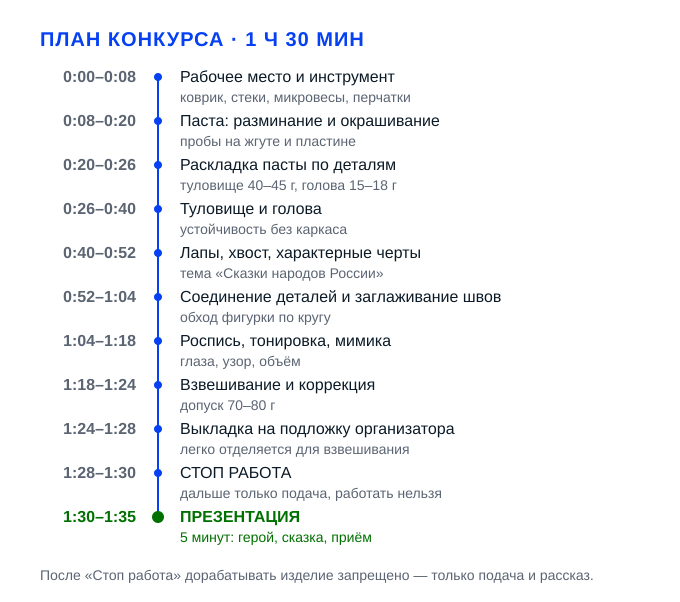
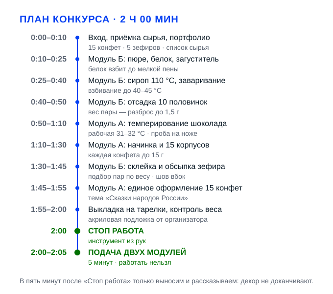
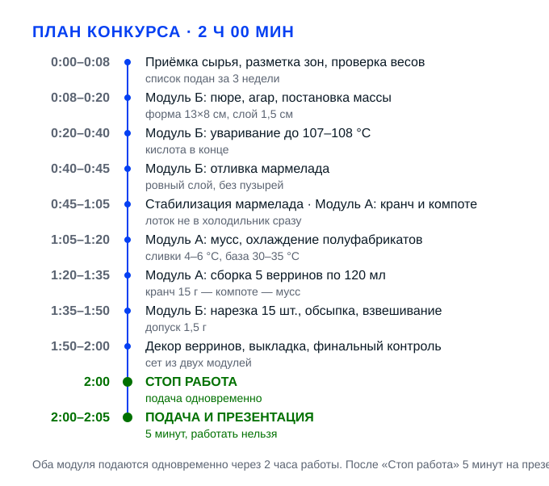

Кондитерское дело (Р,О)
Задания ниже — официальные файлы «Абилимпикс» (источник: abilympics-russia.ru), разложенные по категориям. Решения написаны по тексту задания, регламенту и критериям оценки; в них указано, что именно проверяет эксперт.
Школьник
14–16 лет, базовый уровень заданияВыдержка из официального конкурсного задания: страницы, относящиеся к категории «Школьник» (стр. 4–7 источника).
Пошаговое решение
Модуль А «Моделирование» — это одна фигурка животного из сахарной пасты на тему «Сказки народов России», весом 70–80 г, и на всё про всё 90 минут. Ни плиты, ни выпечки, ни крема: только руки, стеки, вырубки, красители и микровесы. Оценивают не «похожесть вообще», а конкретные и проверяемые вещи: фигурка должна стоять без поддержки, читаться со всех сторон, передавать эмоцию героя, легко сниматься с подложки организатора и не разваливаться за время оценивания. Молды, каркасы, клей и лак запрещены, поэтому всё, что держит форму, вы делаете самой пастой. Работа строится как у скульптора: сначала план и вес по деталям, потом крупные объёмы, потом мелкие детали, и только в конце роспись.

Задача 1. Подготовить место, инструмент и план фигуркиМодуль А · старт и первые 10 минут из 90
Девяносто минут начинаются не с пасты, а со стола. Пока инструмент не разложен по порядку движений, а герой не выбран и не посчитан в граммах, лепка идёт наугад: паста липнет к столешнице, красители смешиваются случайно, и к взвешиванию выясняется, что до 70 г не хватает лапы, а лепить её уже не из чего. Здесь же снимается главный риск модуля — принесённые с собой молды, готовый декор и клей, из-за которых работу могут не допустить к оцениванию.
Действие 1.1. Разложить личный инструмент и проверить, что разрешено
Шаг 1.1.1
До старта выкладываем личный набор на стол в том порядке, в котором будем им пользоваться: слева стеки и зубочистки, по центру коврик для лепки и маленькая скалка, справа кисти, вырубки и нож для мастики с тонким лезвием. Каждый инструмент проверяем руками: на стеке не должно быть заусенца, лезвие ножа — чистым и сухим, кисти — не липкими после прошлой краски. Всё, что в этом модуле точно не понадобится, сразу убираем в сумку: на столе шириной с разделочную доску лишние предметы цепляют фигурку и падают на неё в самый неподходящий момент.
Вся работа по заданию выполняется руками, из вспомогательного разрешены лишь вырубки и инструменты для моделирования — значит, качество фигурки зависит от того, насколько удобно лежит инструмент под рукой. Молды и поддерживающие каркасы запрещены, поэтому стек и зубочистка работают вместо них: ими формуют складки, давят шерсть и ставят глаза. На 90 минут модуля приходится около 30 минут чистой лепки, и пауза на поиск ножа отнимает их у фигурки.
Все инструменты сухие и чистые, каждый лежит на своём месте и не перекрывает соседний, за пределами коврика ничего лишнего. Возьмите по очереди стек, нож и кисть: если приходится тянуться или перекладывать что-то другое, место организовано неверно. Под рукой должна быть сухая салфетка — пальцы в пасте придётся вытирать постоянно.
Свалить инструмент кучей в центре стола: паста прилипает к ручкам, а нож падает лезвием на заготовку и оставляет на ней вмятину. Вторая ошибка — принести инструмент, который дублирует выданный организатором: по условиям это запрещено, и лишнюю скалку попросят убрать.
Эксперт осматривает рабочее место в первые минуты, при обходе: смотрит, готов ли личный набор и нет ли на столе лишнего. Порядок он отмечает как часть организации работы и возвращается к нему в конце модуля, перед сдачей.
Шаг 1.1.2
Микровесы ставим в стороне от коврика, на ровную сухую поверхность, и включаем заранее: за модуль будет три-четыре взвешивания, и каждое не должно занимать больше десяти секунд. Рядом кладём запас одноразовых перчаток — не меньше двух пар, потому что гелевый краситель пропитывает тонкий латекс и рука становится липкой. Перчатки надеваем до первого касания пасты и меняем сразу, как только на них появилась цветная масса: иначе белая деталь получит розовый оттенок от пальцев, и отмыть его с пасты уже не получится.
Микровесы и перчатки прямо названы в особых указаниях по компетенции как личные предметы участника категории «Школьники»: на площадке их не выдадут. Вес — измеримый критерий конкурсного задания, 70–80 г, и проверяют его на весах организатора, так что расхождение с вашими измерениями обернётся против вас. Перчатки нужны не для формальности: краситель с пальцев переносится на светлые участки, а стирать его с пасты означает портить поверхность.
Весы включаются, показывают ноль на пустой чаше и реагируют на груз в один грамм. Перчатки подобраны по размеру: пальцы не стянуты, манжета не сползает. На руках нет колец и часов, ногти короткие — под перчаткой они не должны цеплять пасту.
Работать без перчаток «чтобы чувствовать пасту» — самый частый выбор школьников, и он почти всегда заканчивается цветными разводами на белой морде героя. Вторая ошибка — не проверить весы до старта: обнаружить, что они показывают минус два грамма, за минуту до сдачи уже бесполезно.
Эксперт смотрит на весы и перчатки при первом обходе рабочих мест и проверяет, что участник пользуется ими, а не держит для вида. Наличие личного набора — условие допуска, а не бонус за аккуратность: отсутствие весов он отмечает сразу.
Шаг 1.1.3
Проговариваем про себя список того, чего на площадке быть не должно: молды и любые формы для оттиска, готовые элементы декора, принесённые из дома, бытовой клей, лак, аэрозольные закрепители, любые продукты. Если что-то из этого лежит в сумке, убираем в шкаф или сдаём организатору до старта, не дожидаясь, пока это заметят на обходе. Отдельно проверяем, что в наборе нет предметов, дублирующих оборудование площадки: второй скалки или второго ножа, выданных организатором, в боксе быть не должно.
Запрет на молды, каркасы, клей и лак прописан в конкурсном задании отдельным пунктом, и нарушение по нему не «снимает балл», а ставит под вопрос всю работу: изделие, отформованное молдом или склеенное, оцениванию не подлежит. То же касается готового декора — фигурка должна быть вылеплена целиком при экспертах. Проверка занимает две минуты, а отказ от неё стоит всего модуля, каким бы красивым он ни вышел.
Пройдитесь по сумке и по столу глазами эксперта: ни одной силиконовой формы, ни одного готового цветка или бусины, ни одного флакона с клеем. Всё, что вызывает сомнение, лучше показать эксперту до старта и спросить, чем прятать и надеяться.
Самая обидная ошибка — привезти с собой «на всякий случай» пару готовых ягод или силиконовую форму для мордочки. Даже если вы ими не воспользовались, сам факт наличия на площадке трактуется как нарушение условий задания.
Проверка на допуск идёт до старта, обычно при входе в бокс: эксперт осматривает стол и просит показать набор. Вопрос «а это можно?» задают до старта — после него ответ будет один.
Действие 1.2. Организовать стол под работу с пастой
Шаг 1.2.1
На стол кладём силиконовый коврик или лист пергамента и фиксируем его каплями воды по углам, чтобы он не ездил под руками. Рядом ставим небольшую мисочку с кукурузным крахмалом или сахарной пудрой — не горкой на коврике, а именно в посуде: подпыл берут из миски щепоткой, а не всей ладонью. Свет от лампы разворачиваем так, чтобы он падал сбоку: при боковом освещении видна каждая неровность и трещинка, при верхнем всё выглядит гладким и ошибки прячутся до самого взвешивания.
Паста на желатиновой или маршмеллоу-основе липнет к непокрытому столу и рвётся при отрыве, поэтому коврик — не удобство, а условие ровной лепки. Боковой свет напрямую работает на критерий целостности: трещины, невидимые сверху, эксперт находит сразу, потому что осматривает фигурку со всех ракурсов и поворачивает её в руках. Хорошо поставленный свет ещё и экономит время: дефект видно в момент появления, а не через полчаса.
Коврик не сдвигается, если провести по нему ладонью. Подпыла в миске немного, две-три столовые ложки, крахмал сухой и без комков. Тень от руки не падает на рабочую зону: положите на коврик колбаску пасты и посмотрите, виден ли её край.
Посыпать коврик пудрой прямо из пакета: слой выходит неравномерным, паста в одном месте липнет, в другом покрывается сухой коркой, и на фигурке появляются белые пятна. Вторая ошибка — работать при верхнем свете: все вмятины обнаруживаются на взвешивании, когда исправлять уже поздно.
Эксперт оценивает организацию места в начале модуля и отмечает чистоту рабочей зоны. Отдельно он смотрит, не пачкается ли паста о столешницу, — это читается как нарушение технологии.
Шаг 1.2.2
Делим стол на четыре зоны: слева инструмент, по центру коврик и деталь, с которой работаем, справа заготовки под плёнкой и подложка, за ковриком красители и кисти. Каждую окрашенную пасту заворачиваем в отдельный кусочек пищевой плёнки и, если цветов больше трёх, подписываем маленьким стикером. Подложку организатора ставим на стол заранее, но вне рабочей зоны: фигурка встанет на неё в самом конце, а до этого её нельзя пачкать крахмалом и обрезками.
Когда зоны разведены, вы не тянетесь через фигурку за стеком и не кладёте окрашенную пасту на белые заготовки — а именно из-за этого на конкурсах появляются цветные отпечатки на светлых деталях. Плёнка нужна потому, что паста заветривается за 10–15 минут и покрывается коркой, которая при лепке ломается по сгибу. Отдельное место для подложки — это уже критерий подачи: подложка должна остаться чистой до момента выкладки.
Каждая окрашенная заготовка закрыта и подписана, на подложке нет ни крошки, ни пыли. Рука, которой вы берёте инструмент, не пересекает центр коврика. Если за любым предметом приходится делать шаг в сторону, зонирование не работает.
Свалить всё в одну кучу в центре: красители рядом с белой пастой, инструмент на подложке. В лучшем случае вы потеряете минуты на поиск, в худшем испортите цвет деталей, и переделать их будет нечем — белая паста уже смешана.
При обходе эксперт оценивает порядок и то, насколько участник управляется с материалом. Запачканная до выкладки подложка — заметный минус по критерию подачи.
Шаг 1.2.3
На небольшом листе бумаги рисуем героя в трёх проекциях — спереди, сбоку и сверху — и подписываем на рисунке вес каждой детали: туловище 40–45 г, голова 15–18 г, четыре лапы по 3–4 г, хвост и уши 5–6 г, одежда и декор 8–10 г. Сразу решаем, чем герой узнаётся: у лисы это хвост и острая морда, у медведя уши и мощная спина, у зайца длинные уши и задние лапы. Отдельной строкой записываем, сколько цветов пасты пойдёт в работу, если вариативным заданием регионального чемпионата число цветов ограничено.
Рисунок в трёх проекциях прямо отвечает критерию целостности во всех ракурсах: то, что нарисовано сбоку, вы слепите сбоку осознанно, а не «как получится». Разложенный по граммам вес — единственный способ гарантированно попасть в 70–80 г: без плана вес к концу модуля уходит за 90 г, потому что одежда и декор прибавляются без счёта. Ограничение по числу цветов объявляют до старта, и менять палитру по ходу работы нельзя.
На рисунке все три проекции читаются как один и тот же зверь, сумма весов деталей даёт 70–80 г с запасом 2–3 г, число цветов совпадает с заданным. Переверните лист: если сверху фигурка не узнаётся, план переделывают на бумаге, а не в пасте.
Начинать лепить без рисунка, «держа образ в голове»: к сороковой минуте выясняется, что спина и живот не сходятся по объёму. Вторая ошибка — не считать вес: фигурка на 95 г при допуске 70–80 г теряет балл по весу, а убрать 15 г из собранной фигуры почти невозможно.
Эксперт может подойти и посмотреть эскиз в первые десять минут. Отдельного критерия за план нет, но по нему видно, насколько осознанно участник работает с формой.
Действие 1.3. Подготовить рабочий инструмент моделирования
Шаг 1.3.1
Проверяем стеки по назначению: один с плоским концом для заглаживания, один с шариком для углублений, один с зубчатым краем для шерсти. Зубочистки ломаем пополам и кладём рядом несколько штук: остриём ставят глаза, тупым концом продавливают узор. Нож для мастики должен резать пасту, а не рвать её — проверяем на обрезке: если край среза получается рваным, нож меняем или точим дома заранее. Вырубки нужны только для мелких повторяющихся элементов, и их тоже проверяют на обрезке.
Инструменты моделирования разрешены заданием, и именно они дают ту тонкость, которую рукой не сделать: углубление под глаз, насечку шерсти, ровный край одежды. Рваный срез от тупого ножа виден на готовой фигурке как лохматая кромка и читается как небрежность. Проверка на обрезке занимает минуту и показывает то, что иначе обнаружится на самой ответственной детали — на морде.
Срез пасты ножом ровный, без задиров. Стек с шариком оставляет круглое углубление без рваных краёв. Вырубка вырезает элемент целиком, а не надрывает его по контуру. Всё опробовано на обрезках, а не на заготовке фигурки.
Работать первым попавшимся стеком: вместо углубления получается царапина, а вместо насечки — разрыв. Вторая ошибка — проверять инструмент на самой фигурке: неудачная проба оставляет на морде след, который не заглаживается.
Эксперт видит качество поверхности готовой работы и по нему судит о владении инструментом: ровный срез и мягкое углубление говорят сами за себя. Рваные края и царапины он относит к качеству исполнения, а не к сложности выбранного образа.
Шаг 1.3.2
Готовим воду для склейки: маленькую мисочку или крышку с водой и кисть с мягким ворсом, которой будем смачивать только место соединения. Вторую кисть оставляем сухой для смахивания крахмала и крошек. Рядом кладём кусочек пасты того же цвета в отдельной плёнке — это «паста-клей»: крошечный шарик, размятый с каплей воды до состояния густой сметаны, держит детали прочнее, чем просто вода, и при этом остаётся пастой, а не клеем.
Соединять детали разрешено только пастой и водой: клей в задании запрещён прямо, а сухая паста к сухой не липнет совсем. Паста, размятая с водой, работает как контактный слой: она заполняет микронеровности и после подсыхания держит шов закрытым. Сухая кисть нужна постоянно: белый крахмал, проступающий на цветной пасте, — самая частая причина «запылённой» поверхности на сдаче.
Вода налита в мелкую посуду, кисть держит каплю и не течёт. Кусочек пасты-клея мягкий, разминается между пальцами без крупинок. Сухая кисть чистая, без ворса. Попробуйте склеить два обрезка: соединение держится и не расходится при лёгком натяжении.
Мочить деталь целиком: паста размягчается, теряет форму и оседает. Вторая ошибка — использовать вместо пасты-клея что-то из домашних средств: любая подобная попытка фиксируется как нарушение условий. Третья — капать воду на шов с высоты: капли размывают поверхность вокруг.
Эксперт проверяет прочность соединений, слегка надавливая на детали при осмотре. Отходящие швы и щели он относит к нарушениям целостности, а следы воды на поверхности — к небрежности отделки.
Шаг 1.3.3
Готовим шаблон посадки: на листе бумаги рисуем контур подложки организатора в натуральную величину и отмечаем на нём место фигурки — оптический центр, поля по 1–1,5 см, точка для декора. Рядом записываем план времени: 10 минут на организацию, 15 на пасту и окраску, 30 на основные объёмы, 15 на отделку, 5 на взвешивание и выкладку. Шаблон держим перед глазами: он заменяет хронометрист и не даёт уйти в детали, забыв про вес и время.
План времени — вещь практическая: на 90 минут приходится пять разных этапов, и самый частый провал на конкурсе — застрять на росписи морды и не успеть взвесить и выложить фигурку. Шаблон подложки в натуральную величину решает критерий гармоничности: композиция продумана до лепки, а не собирается в последние три минуты. Записанный план ещё и дисциплинирует: когда видно, что до конца этапа пять минут, детали лепятся быстрее.
На шаблоне видно, что фигурка вместе с полями помещается на подложку с запасом. План времени в сумме даёт 75–85 минут, то есть оставляет 5–15 минут резерва. Шаблон лежит на столе так, чтобы его было видно, не отрываясь от работы.
Не планировать время: к 80-й минуте выясняется, что лепка закончена, а вес не проверен и подложка не подготовлена. Вторая ошибка — планировать минута в минуту без резерва: одна неудачная деталь ломает весь график.
Эксперт видит по ходу модуля, держит ли участник темп и успевает ли завершить все этапы. Работа, сданная в спешке, обычно проигрывает по аккуратности.
Задача 2. Привести пасту в рабочее состояние и окрасить еёМодуль А · 15–20 минут из 90
Сахарная паста приходит на площадку в разном состоянии: иногда мягкая, как пластилин, иногда сухая и колючая от заветривания. Задача этого этапа — сделать её одинаково пластичной по всему объёму, окрасить в нужные цвета и развесить по деталям. Пока паста рвётся, а краситель ложится пятнами, лепка превращается в борьбу с материалом, и на 90 минут модуля такой борьбы не заложено.
Действие 2.1. Размять пасту до пластичного состояния
Шаг 2.1.1
Берём кусок пасты, кладём на коврик и разминаем ладонями, начиная с краёв: сначала сплющиваем в лепёшку толщиной около сантиметра, потом складываем пополам и снова сплющиваем — так десять-пятнадцать раз, пока масса не станет тёплой и податливой. Если паста холодная, её не греют над плитой и не льют в неё воду: тепло идёт от рук, а разница температур внутри куска как раз и даёт потом трещины по сгибу. Работаем в перчатках, но при разминании белой пасты перчатки должны быть чистыми и сухими.
Пластичность — база всех остальных критериев: из неразмятой пасты не выходит ни ровной колбаски, ни гладкой поверхности, потому что внутри остаются плотные комки, и деталь рвётся именно по ним. Задание требует, чтобы фигурка сохраняла форму весь период оценивания, а это возможно только из однородной массы без воздушных пузырей. Пятнадцать минут разминания кажутся потерей времени, но они экономят вдвое больше на заглаживании швов.
Разорвите кусок: срез должен быть матовым и ровным, без белых сухих крошек и блестящих капель. Масса тёплая на ощупь и не липнет к перчатке. Если на сгибе появились трещины по всей толщине, разминание не закончено.
Начать лепить сразу: снаружи паста мягкая, внутри сухая, и первые же лапы покрываются сеткой трещин по сгибу. Вторая ошибка — разогревать пасту в микроволновке: она частично схватывается и становится крупитчатой, вернуть её в рабочее состояние уже нельзя.
Эксперт обращает внимание на подготовку материала при первом обходе: смотрит, разминает ли участник пасту или сразу лепит. Крупинки, трещины и рыхлую поверхность на готовой фигурке он соотносит именно с этим этапом.
Шаг 2.1.2
Если паста липнет к рукам и коврику, добавляем сахарную пудру или крахмал строго по щепотке — не больше половины чайной ложки за раз, — вмешивая добавку в середину куска и снова разминая. Если паста, наоборот, крошится и не держит форму, добавляем влагу по капле: чуть-чуть воды, или каплю глицерина, или пару капель сливок, всякий раз полностью вмешивая и проверяя результат на маленьком шарике. Разминание после каждой добавки — не меньше минуты, иначе вы оцениваете поверхность, а не массу.
Консистенция определяет, будет ли деталь держать форму без каркаса, а каркасы в этом модуле запрещены. Пересушенная паста трескается на сгибах и не склеивается без воды, переувлажнённая расползается, теряет чёткость граней и через двадцать минут оседает — фигурка «плывёт» прямо на подложке. Обе крайности ведут к потере баллов за целостность и устойчивость.
Скатайте шарик размером с горошину и прижмите пальцем: он должен расплющиться с ровными краями, без трещин по окружности. Скатайте колбаску длиной 5 см и оберните вокруг пальца — она гнётся, а не ломается, и не липнет при разгибании.
Сыпать пудру горстью «чтобы не липло»: паста начинает сохнуть уже в руках, поверхность фигурки идёт мелкими трещинами. Вторая ошибка — лить воду прямо в кусок: снаружи каша, внутри сухо, и такая масса не держит ни голову, ни уши.
Эксперт оценивает состояние массы косвенно — по поверхности фигурки к концу модуля. Трещины, оплывшие детали и «стеклянные» пятна он читает как ошибку подготовки пасты.
Шаг 2.1.3
Перед окрашиванием делаем три пробы из неокрашенной пасты: жгут толщиной с карандаш длиной 6–7 см, шарик диаметром 1,5 см и пластину толщиной 2 мм, раскатанную скалкой. Жгут показывает, держит ли масса форму, шарик — гладкость поверхности после пальцев, пластина — поведение пасты при раскатке: она не должна рваться по краям и прилипать к скалке. Пробы не выбрасываем, а возвращаем в работу: из них потом выйдут лапы и уши.
Три пробы за одну минуту показывают то, на что в готовой фигурке уйдёт полмодуля. Именно на жгуте видно, поплывёт ли деталь, а на пластине — можно ли делать одежду и тонкие уши: если пластина рвётся, паста пересушена, и это исправляют до окрашивания, потому что с красителем масса ведёт себя иначе. Возврат проб в работу экономит 4–5 г, а при допуске 70–80 г это заметная часть.
Жгут стоит вертикально хотя бы несколько секунд и не оседает; шарик после пальца гладкий, без отпечатков перчатки; пластина снимается со скалки целым листом. Если хоть одна проба не удалась, возвращаемся к консистенции, а не начинаем лепить.
Пропустить пробы и обнаружить проблему на голове героя: переделать голову за отведённое время почти невозможно. Ещё одна ошибка — выбросить пробы: на весах потом не хватает 4–6 г, добрать их нечем, и фигурка уходит ниже 70 г.
Эксперту важно увидеть, что участник проверяет материал, а не надеется на удачу: жгут и пластина на коврике говорят об этом лучше слов. Дальнейшая скорость лепки тоже зависит от этой минуты — на рыхлой пасте её не наверстать.
Действие 2.2. Окрасить пасту и собрать палитру
Шаг 2.2.1
Определяем палитру под конкретного героя и ограничение по числу цветов, если оно задано вариативным модулем: обычно это три-пять базовых цветов, из которых смешением получают остальные. Для сказок народов России работает правило двух цветов плюс акцент: основной тон шерсти или одежды, светлый тон для морды, груди и рук и один яркий акцент — платок, лента, кокошник, попона. Акцент ставим не больше чем на 15–20 % площади фигурки, иначе он перетягивает внимание и мешает читать образ.
Цвет — первое, по чему эксперт опознаёт героя: рыжая лиса, бурый медведь, белый заяц-беляк читаются мгновенно, а «серо-розовое нечто» не читается вообще, сколько бы сил ни ушло на лепку. Ограничение по количеству цветов в вариативном задании проверяют по факту: лишние оттенки — прямое нарушение условий. Акцентный цвет решает и критерий образности: именно деталью герой и опознаётся.
Разложите кусочки окрашенной пасты на белом листе: цвета должны отличаться настолько, чтобы разница читалась при обычном свете, а не только вблизи. Сосчитайте цвета — их не больше заданного числа. Закройте акцент пальцем: если герой всё равно узнаётся, акцент работает как украшение.
Брать пять-шесть ярких цветов «чтобы было нарядно»: фигурка становится пёстрой, и на её фоне не видно формы. Вторая ошибка — нарушить ограничение по числу цветов: работа формально выходит за рамки задания.
Эксперт оценивает цветовое решение на готовой фигурке, но при обходе видит и набор красок на столе. Яркость ради яркости он читает как отсутствие композиции.
Шаг 2.2.2
Кладём кусок белой пасты на коврик, делаем в середине углубление большим пальцем и вносим туда гелевый краситель кончиком зубочистки — буквально точку, для насыщенного цвета две-три точки. Заворачиваем края внутрь, чтобы краситель оказался в центре, и вымешиваем: сначала сжимаем кусок, потом раскатываем в колбаску, складываем и повторяем, пока цвет не станет равномерным, а на сгибе не исчезнут прожилки. Жидкие красители берём в последнюю очередь и по капле, потому что они разжижают пасту и требуют дополнительного подпыла.
Гелевый краситель держит консистенцию: он не добавляет лишнюю воду, и масса остаётся такой же пластичной, как до окрашивания. Прожилки, оставшиеся при быстром вымешивании, проявляются через десять-пятнадцать минут, когда паста подсохнет, — уже на готовой фигурке, и убрать их невозможно без повреждения поверхности. Ровный цвет — часть критерия качества исполнения.
Разрежьте окрашенный кусок ножом: срез должен быть одного цвета по всей толщине, без светлых и тёмных разводов. Разомните кусочек между пальцами и посмотрите на сгиб — прожилок нет. Перчатки не окрашены: если краситель прошёл через них, перчатку меняют, а пасту домешивают.
Капнуть краситель на поверхность и начать размазывать: часть пасты остаётся белой, часть слишком тёмной, и на фигурке это видно пятнами. Вторая ошибка — взять жидкий краситель ложкой: паста становится липкой, и её приходится подсушивать пудрой.
Эксперт смотрит на цвет готовой фигурки вблизи и на просвет, а при обходе замечает, как участник вымешивает пасту. Пятна и прожилки он относит к качеству исполнения, а не к задумке, и снижает балл за аккуратность.
Шаг 2.2.3
Из базовых цветов делаем производные: к нужному куску добавляем белую пасту для пастельного тона (примерно треть объёма, если нужен светло-розовый или кремовый), а для тёмного оттенка вводим крошечную часть чёрной или коричневой. Пропорции записываем на том же листе, где нарисован эскиз: «тёмно-рыжий — три части рыжего, одна часть коричневого», — так при нехватке куска вы повторите цвет точно, а не на глаз. Каждый оттенок сразу заворачиваем в плёнку и подписываем.
Производные оттенки дают глубину: одной краской фигурка выглядит плоской, а двумя-тремя тонами того же цвета — объёмной, и это прямо влияет на критерии выразительности и гармоничности. Записанные пропорции решают практическую задачу: деталь рвётся, куска не хватает, и цвет надо повторить точно — на глаз это почти никогда не получается. Подписанные свёртки спасают от путаницы, когда на столе шесть похожих кусочков.
Выложите оттенки в ряд от светлого к тёмному: переход плавный, без провала между двумя соседними. Проверьте, что записи позволяют повторить цвет: смешайте по ним маленькую пробу и сравните с оригиналом.
Смешивать на глаз и не записывать: новая порция выходит другого цвета, и на фигурке появляется заплатка. Вторая ошибка — перебор с чёрным: два лишних кристалла делают оттенок грязным, и вернуть его к чистому тону уже не получится.
Эксперт оценивает цветовое решение целиком: сколько тонов и насколько они согласованы. Резкие, не связанные между собой цвета он отмечает как слабую работу с цветом.
Действие 2.3. Развесить пасту по деталям и сохранить заготовки
Шаг 2.3.1
Взвешиваем общий кусок на микровесах и отрезаем от него детали по плану с эскиза: туловище 40–45 г, голова 15–18 г, четыре лапы по 3–4 г, хвост и уши 5–6 г, одежда и декор 8–10 г. Каждый кусок сразу скатываем в шарик и выкладываем на коврик в том порядке, в котором будем лепить, — от крупного к мелкому. Обрезки не выбрасываем, а собираем в отдельный шарик: они пойдут на мелкие детали и на исправление, и это те самые 5–7 г, которые часто решают исход взвешивания.
Вес фигурки — измеримый критерий задания: одна штука, 70–80 г. Если детали не взвешены заранее, вес набирается случайно, и почти всегда в сторону перевеса, потому что мелкие детали добавляются без счёта, а убрать их из собранной фигурки нельзя. Раскладка от крупного к мелкому задаёт порядок лепки и не даёт потратить первые двадцать минут на хвост, оставив туловище на конец.
Сумма весов шариков на коврике — от 68 до 78 г с учётом запаса. Крупные детали совпадают с планом с точностью до грамма: если туловище вышло 55 г вместо 43, фигурка получится непропорциональной. Пересчитайте шарики: их столько же, сколько деталей в плане.
Взвесить только итог: обнаружить перевес в 15 г на последней минуте, когда убирать уже нечего. Вторая ошибка — начать с мелочей: к моменту лепки туловища паста на них подсохла и не склеивается. Третья — не подписать куски: через полчаса вы уже не помните, где голова, а где спина.
Эксперт взвешивает фигурку на своих весах после сдачи и фиксирует значение. Запас в 2–3 г в мелких деталях — единственная страховка от расхождения приборов, поэтому он считается частью подготовки, а не перестраховкой.
Шаг 2.3.2
Откладываем 3–4 г запаса отдельным куском в плёнку: паста теряет влагу, и к моменту взвешивания мелкие детали могут «похудеть» на 2–3 г, а где-то деталь придётся переделать. Если после сборки фигурка вышла 77–78 г, этот запас не используем вовсе: лучше остаться в нижней части допуска, чем выйти за 80 г. Отдельно учитываем, что краситель и вода для склейки добавляют вес — примерно 1–2 г за весь модуль.
Усушка реальна: тонкие детали — уши, хвост, лапы — теряют воду быстрее туловища, и общий вес падает на 2–4 г за час. Без запаса фигурка может уйти ниже 70 г, а это такое же нарушение, как перевес. Учёт красителя и воды нужен потому, что оба фактора добавляют вес уже после взвешивания деталей, и на границе допуска это критично.
Запас лежит отдельно и подписан. Перед выкладкой взвесьте фигурку ещё раз: если вышло 69 г, добавьте 2–3 г в скрытую часть — в основание или под одежду. Если 79 г, ничего не добавляйте и не смачивайте лишний раз.
Не оставить запаса: не хватает пасты на ухо, и приходится снимать кусок с уже слепленной спины. Вторая ошибка — игнорировать усушку и добавлять вес на глаз в конце: фигурка переходит границу 80 г прямо перед сдачей.
Вес проверяют после команды «Стоп работа» на весах организатора, и значение заносят в протокол. Расхождение в пределах грамма никого не смущает, а выход за 70–80 г фиксируется как несоответствие результату.
Шаг 2.3.3
Все шарики и окрашенные куски убираем под плёнку или в контейнер с крышкой, оставляя на коврике только ту деталь, с которой работаем прямо сейчас. Светлые и тёмные цвета держим раздельно, чтобы они не соприкасались: паста при хранении слегка отпотевает, и краситель переходит с тёмного на светлый. Если предстоит пауза больше двадцати минут, контейнер ставим в прохладное место, но не в холодильник: после холода паста конденсирует влагу и липнет.
Заветривание — главный враг на 90-минутном модуле: корочка в миллиметр при лепке даёт трещины и видна на готовой фигурке как сетка. Раздельное хранение цветов предотвращает перенос красителя, который невозможно отмыть с пасты. Запрет на холодильник связан с конденсатом: капли влаги дают липкую поверхность и «стеклянные» пятна после высыхания.
Разверните один кусок через пятнадцать минут: поверхность мягкая и слегка липкая, без корки и без капель. На светлом куске нет цветных отпечатков. Если под плёнкой собрались капли, паста слишком влажная — её подсушивают пудрой.
Оставить заготовки открытыми на полчаса: сверху образуется корочка, и при лепке она ломается пластами. Вторая ошибка — сложить все цвета в один контейнер: к середине модуля светлая паста становится грязно-серой.
Эксперт видит корку и цветные разводы на готовой фигурке, а при обходе — открытые куски на столе. Отдельно он отмечает, насколько аккуратно участник обращается с материалом: закрывает ли заготовки и меняет ли перчатки.
Задача 3. Слепить фигурку: основные объёмы и деталиМодуль А · около 30 минут · ядро работы
Самая длинная часть модуля: из шариков получается зверь, который стоит без поддержки, читается с любой стороны и узнаётся по характерным чертам. Идём от крупного к мелкому — туловище, потом голова, потом конечности, и только в конце швы, — потому что каждая следующая деталь крепится к предыдущей, а не наоборот. Здесь же решается главный технический вопрос: устойчивость без каркаса.
Действие 3.1. Сформировать туловище и поставить его устойчиво
Шаг 3.1.1
Из шарика весом 40–45 г формуем туловище: сначала скатываем ровный шар, затем сжимаем его с двух сторон ладонями, превращая в овал, и доводим форму, катая по коврику с лёгким нажимом — у медведя массивнее задняя часть, у лисы тоньше и длиннее, у зайца компактнее, с поджатыми задними лапами. Книзу туловище делаем шире на 15–20 %, чем кверху: это будущая площадь опоры, и она определяет устойчивость всей фигурки. Углубление под голову намечаем сразу, пока паста мягкая и его можно сделать пальцем, а не вдавливать готовую голову.
Устойчивость прямо названа в задании как требование к результату, а поддерживающие каркасы запрещены — значит, она обеспечивается только геометрией: широкой опорой и низким центром тяжести. Расширение книзу даёт и второе: туловище не клюёт вперёд, когда сверху появится тяжёлая голова. Заранее намеченное место под голову избавляет от грубого вдавливания на уже собранной фигуре, когда любая ошибка видна.
Поставьте туловище на коврик и отпустите: оно стоит, не заваливаясь, а при лёгком толчке в бок возвращается в исходное положение. Овал ровный, без плоских граней от пальцев, ширина книзу больше, чем кверху.
Скатать ровный шар и оставить его шаром: фигурка получается на тонких лапах и валится при первом касании. Вторая ошибка — сделать туловище узким книзу «для изящества»: на подложке такая фигурка стоит только с подпоркой, а подпорки запрещены.
Эксперт проверяет устойчивость, слегка толкая фигурку или наклоняя подложку при осмотре. Опрокинувшаяся работа — прямое нарушение требований к результату, и остальные достоинства её уже не спасают.
Шаг 3.1.2
Придаём позу осознанно: у сидящего героя задняя часть туловища шире и приплюснута, у стоящего опора идёт на все четыре лапы, и тогда нижняя часть туловища должна быть почти ровной. Голову мысленно ставим над передней третью туловища, а не над краем: смещение центра тяжести вперёд на пять миллиметров уже приводит к падению. Если по замыслу герой наклоняется или тянется лапой, компенсируем наклон более широкой опорой с противоположной стороны.
Целостность и гармоничность оценивают, поворачивая фигурку, — а работа, которая падает при повороте, не может быть оценена вовсе. Правильный центр тяжести решает сразу три критерия: устойчивость, целостность силуэта и читаемость позы. Компенсация наклона опорой — единственный доступный способ, потому что внутренний каркас запрещён условиями.
Наклоните подложку с заготовкой на 10–15 градусов и верните: фигурка не должна опрокинуться. Посмотрите на силуэт сбоку: линия спины и линия живота дают одну читаемую позу, а не столбик. Если силуэт читается как два отдельных объёма, поза не задана.
Лепить стоящего героя с узкой опорой: он падает на этапе отделки, когда уже расписан. Вторая ошибка — сдвинуть голову к самому краю туловища ради выразительности: фигурка заваливается вперёд, и исправить это можно только переделкой.
Позу и устойчивость эксперт оценивает в движении: берёт фигурку, поворачивает, ставит обратно. Требование «устойчивая во всех ракурсах» проверяется именно так.
Шаг 3.1.3
Проверяем, что внутри нет ничего, кроме пасты: если вы планировали вставить зубочистку в лапу или спину «для жёсткости», от этой идеи надо отказаться сразу — задание запрещает поддерживающие каркасные элементы. Вместо этого утолщаем слабое место самой пастой и добавляем площадь опоры: лапы делаем чуть шире и приплюснутее, чем на эскизе, а длинный хвост укладываем на подложку так, чтобы он работал третьей точкой опоры. Такой хвост допустим, потому что это часть фигурки, а не каркас.
Запрет на каркасы — не формальность: фигурку взвешивают и осматривают, а зубочистка внутри меняет и вес, и поведение пасты при усушке, и может выйти наружу остриём. Толщина пасты и площадь опоры дают ту же жёсткость честным путём. Хвост, лежащий на подложке, распределяет нагрузку и одновременно добавляет образу характерности.
Прощупайте фигурку пальцами по всей высоте: внутри нет твёрдых включений. Поставьте её на подложку и подуйте сбоку — фигурка не должна наклоняться больше чем на пару градусов. Лапы прижаты всей нижней плоскостью, без зазора.
Вставить зубочистку «чтобы держалось»: на взвешивании и осмотре это видно по весу и по наклону деталей, а формально это нарушение условий. Вторая ошибка — сделать лапы тонкими и рассчитывать на хвост: хвост не держит вес головы.
Эксперт осматривает фигурку на наличие каркаса при оценивании, иногда на просвет и на ощупь. Нарушение фиксируется как несоответствие конкурсному заданию.
Действие 3.2. Слепить голову, морду и наметить выражение
Шаг 3.2.1
Из куска 15–18 г скатываем шар и сразу проверяем пропорцию к туловищу: для реалистичного зверя голова составляет примерно треть длины туловища, для сказочного героя допустима гипербола до половины, и тогда фигурка читается как персонаж, а не как зверёк. Морду вытягиваем, защипывая переднюю часть шара между большим и указательным пальцами и поворачивая заготовку на четверть оборота после каждого защипа: так получается симметричный конус, а не кособокий клюв. Место соединения с туловищем оставляем плоским и чуть влажным.
Пропорция головы — главный инструмент выразительности: голова в треть даёт спокойный, «правильный» образ, голова в половину — сказочный и эмоциональный, а это ровно то, чего требует тема «Сказки народов России». Симметрию морды оценивают по критерию целостности: кособокая морда видна с любого ракурса, и поворот фигурки её не скрывает. Плоское влажное основание нужно для прочного соединения без клея.
Приложите голову к туловищу и отойдите на шаг: пропорция читается сразу, без прищуривания. Посмотрите на морду сверху: ось симметрии проходит через центр, половины одинаковы. Основание головы плоское и слегка липкое на ощупь.
Скатать голову «по остатку» и не проверять пропорцию: фигурка выходит либо с крошечной головой, либо с головой-арбузом, и обе читаются как ошибка формы. Вторая ошибка — вытягивать морду с одной стороны: конус уходит вбок, и глаза потом ставить некуда.
Пропорции и симметрию эксперт видит первым делом, ещё до росписи: он ставит фигурку перед собой и смотрит на неё с фронта. Нарушенная симметрия читается как небрежность исполнения, даже если остальное сделано хорошо.
Шаг 3.2.2
Уши лепим из двух одинаковых кусочков по 1,5–2 г: скатываем шарик, расплющиваем в лепёшку толщиной 2–3 мм и придаём форму — у лисы и волка треугольник, у медведя полукруг, у зайца длинный овал до 3 см. Крепим не на клей, а на влагу: смачиваем основание уха мокрой кистью и прижимаем к голове на 10–15 секунд, слегка вдавливая основание стеком. Нос делаем шариком 0,5–1 г, чуть приплюснутым, и ставим на кончик морды; рога, гриву и кисточки добавляем по образу, но всегда из пасты того же или контрастного акцентного цвета.
Уши и нос — то, чем герой опознаётся: заяц без длинных ушей и медведь без полукруглых читаются хуже, и это бьёт по критериям узнаваемости и образности. Крепление на воду вместо клея — единственный разрешённый способ, клей в задании запрещён прямо. Вдавливание основания стеком увеличивает площадь контакта, и деталь не отходит при усушке, когда паста слегка уменьшается в объёме.
Проверьте уши на прочность: легонько потяните за кончик — деталь держится и не отходит по шву. Симметрия: расстояние от центра морды до левого и правого уха одинаковое, наклон ушей зеркальный. Нос стоит по центру кончика морды, не съезжает набок.
Приклеить уши на сухую пасту без влаги: через пятнадцать минут они отходят по шву, и на фигурке появляется тёмная щель. Вторая ошибка — сделать уши разного размера: асимметрия видна с первого взгляда и росписью не маскируется.
Эксперт проверяет прочность крепления и симметрию при осмотре: уши и нос он трогает легче всего, а отходящие детали отмечает как нарушение целостности. Разный размер ушей он видит и без касания.
Шаг 3.2.3
Глаза на этом этапе только намечаем, не расписываем: двумя углублениями круглой палочкой или обратной стороной кисти диаметром 2–3 мм, на расстоянии примерно одного диаметра глаза друг от друга. Сразу задаём выражение: для весёлого героя углубления делаем чуть выше середины морды и добавляем маленькие валики-веки сверху, для хитрого — прикрываем глаз приплюснутой полоской пасты на треть. Рот намечаем тонкой линией стека, слегка изгибая её вверх или вниз: изгиб в 1–2 мм уже читается как улыбка или грусть.
Выразительность — отдельное требование задания: фигурка должна отражать эмоции героя. Эмоция складывается не из одного глаза, а из сочетания глаз, век и линии рта, поэтому намечать их надо до росписи, когда форму ещё можно поправить. Высота и посадка глаз делают героя живым: слишком близко посаженные дают напряжённое или комичное выражение, слишком высоко — удивлённое.
Посмотрите на фигурку сверху и сбоку: выражение читается без объяснений — если задумана улыбка, её видно. Глаза симметричны относительно оси морды, расстояние между ними примерно равно диаметру глаза. Веки не перекрывают глаз полностью.
Процарапать глаза слишком глубоко: срез получается рваным, и при росписи туда затекает краска, образуя грязное пятно. Вторая ошибка — поставить глаза высоко на лбу: герой выглядит испуганным, что не соответствует задуманному образу.
Выразительность эксперт оценивает уже на этом этапе: смотрит, читается ли эмоция. При финальном осмотре он проверяет, сохранилось ли выражение после росписи.
Действие 3.3. Слепить лапы, хвост и характерные черты героя
Шаг 3.3.1
Лапы лепим из четырёх кусочков по 3–4 г: скатываем колбаски одинаковой толщины — сравните их рядом, они должны быть как близнецы, — и слегка сужаем к низу. Передние лапы делаем чуть тоньше задних, если герой сидит, и одинаковыми, если стоит. Нижнюю часть каждой лапы приплющиваем в подошву толщиной 3–4 мм и разводим пальцы насечками стека: подошва даёт площадь опоры, а насечки узнаваемость. Крепим лапы к туловищу на влагу, прижимая по всей длине, а не только у основания.
Лапы отвечают сразу за два критерия: устойчивость через площадь опоры и узнаваемость через форму конечностей, которая у разных зверей разная. Одинаковая толщина важна потому, что разница в полмиллиметра на четырёх лапах читается как небрежность, а исправить её после крепления уже нельзя. Прижатие по всей длине не даёт лапе отойти при усушке — шов остаётся закрытым.
Поставьте заготовку: все четыре подошвы касаются коврика одновременно, фигурка не качается. Толщина лап одинаковая — проверьте, приложив их друг к другу до крепления. Насечки читаются, но не прорезают лапу насквозь.
Сделать лапы на глаз, разной длины: фигурка стоит на трёх точках и заваливается на четвёртую, а на подложке это выглядит как брак. Вторая ошибка — прижать лапу только у основания: верхняя часть отходит, и в щель видно тёмную полость.
Эксперт проверяет, стоит ли фигурка ровно и одинаковы ли конечности: смотрит на неё с фронта и сбоку, а потом ставит на подложку. Разная длина лап фиксируется как нарушение целостности, потому что она ломает силуэт.
Шаг 3.3.2
Хвост делаем по образу: у лисы длинный, толстый у основания и пушистый на конце, длиной до 8–10 см, уложенный на подложку; у медведя короткий, 2–3 см; у зайца маленький шарик. Фактуру шерсти создаём стеком с зубчатым краем или кончиком зубочистки: короткие насечки по направлению роста шерсти, глубиной 0,5–1 мм, с шагом 2–3 мм, и обязательно с той стороны, откуда их будет видно при осмотре. Гриву, опушку на груди и кисточки на ушах добавляем маленькими приплюснутыми кусочками пасты, прижатыми на влагу.
Фактура — самый дешёвый способ поднять выразительность: гладкая фигурка читается как заготовка, а насечки дают игру света и объём, которого на ровной поверхности нет. Направление важно потому, что насечки против шерсти выглядят как царапины. Хвост — сильный опознавательный признак: лису без хвоста не узнают даже при хорошей морде, и это прямо влияет на узнаваемость образа.
Проведите пальцем по фактуре: насечки читаются на ощупь и не рвут пасту. Посмотрите на фигурку при боковом свете — фактура даёт тень, а не выглядит случайными царапинами. Хвост лежит на подложке и не тянет фигурку назад.
Процарапать шерсть слишком глубоко: паста рвётся по насечкам, и к концу модуля по фигурке идут трещины. Вторая ошибка — сделать хвост тяжёлым и поднятым вверх: центр тяжести уходит назад, и фигурка падает.
Эксперт смотрит на фактуру вблизи и при боковом свете, поворачивая фигурку. Слишком глубокие или неаккуратные насечки он читает как повреждение поверхности, а ровные и направленные — как проработанную форму.
Шаг 3.3.3
Добавляем то, что делает героя героем именно этой сказки: сарафан или платок с простым узором, кокошник, кушак, лапти, попону, ленту в гриве, клубок, корзинку, ложку. Деталь делаем плоской и лёгкой — не тяжелее 3–4 г на элемент — и крепим на влагу, обернув вокруг туловища или прижав по всей площади. Одежду лепим из раскатанной пластины толщиной 2–3 мм и подрезаем ножом по линии, повторяющей силуэт: так она садится по фигуре, а не висит прямоугольником.
Образность и узнаваемость — прямые требования задания, и достигаются они именно деталью: животное без приметы времени и места остаётся животным, а с платком и кокошником становится персонажем сказки. Тема «Сказки народов России» проверяется по этим признакам, поэтому деталь должна читаться, а не быть «чем-то в руках». Плоская посадка одежды нужна для целостности силуэта: выступающие углы ломают форму.
Отойдите на два шага: понятно ли, из какой сказки герой и что он делает? Деталь не тяжелее 3–4 г и не меняет центр тяжести — фигурка по-прежнему стоит. Одежда повторяет силуэт, без зазоров и торчащих углов.
Прилепить крупную тяжёлую деталь: фигурка клонится набок, а шов расходится при усушке. Вторая ошибка — сделать одежду нарядной, но не по теме: узор и фасон не читаются как народные, и образность остаётся недоказанной.
Эксперт оценивает, отражены ли характерные черты героя и понятен ли образ без пояснений участника: тему «Сказки народов России» он проверяет по костюму, атрибуту и народному узору. Это часть критериев, а не украшение.
Действие 3.4. Соединить детали и убрать следы
Шаг 3.4.1
Перед креплением головы смачиваем её основание влажной кистью — не мочим, а именно увлажняем, чтобы поверхность заблестела, — и прижимаем к подготовленному месту на туловище, поворачивая на четверть оборота туда-обратно, чтобы паста схватилась. Держим 20–30 секунд, затем убираем выступивший по шву валик пальцем, смоченным водой: он пойдёт на заглаживание. Голову выставляем по оси симметрии туловища, проверяя положение сверху и сбоку, и только после этого прижимаем насухо.
Соединение на влагу — единственный разрешённый способ: клеи в задании запрещены, а сухая паста к сухой не прилипает. Поворот при прижатии увеличивает площадь контакта и вытесняет воздух, из-за которого шов потом расходится. Валик по шву — не мусор, а материал для заглаживания: собрав его, вы закрываете стык без добавления пасты и без изменения веса.
Шов закрыт полностью, без тёмной щели и без наплыва. Голова стоит по оси: посмотрите сверху — морда смотрит строго вперёд, а не вбок. Потяните голову легонько вверх: она не должна отходить. Если шов продавливается пальцем, пасты в нём мало.
Прижать голову на сухую или переувлажнить основание: в первом случае шов расходится через десять минут, во втором паста размягчается, и голова оседает, теряя объём. Третья ошибка — не проверить ось: кособокая голова видна в любом ракурсе, и роспись её не исправит.
Эксперт проверяет швы и посадку головы при осмотре со всех сторон, поворачивая фигурку в руках. Щели и наплывы — заметный минус по качеству исполнения, а кривая посадка головы бьёт ещё и по целостности.
Шаг 3.4.2
Заглаживаем швы пальцем, смоченным водой, двигаясь вдоль стыка короткими движениями по 1–2 см, а не растирая пасту вокруг. Для труднодоступных мест берём шарик пасты на зубочистке или обратную сторону круглой палочки: ей удобно вдавливать пасту в щель, не размазывая её по поверхности. После заглаживания проходим влажной кистью по всей фигурке — она снимает отпечатки пальцев и следы подпыла и одновременно уплотняет верхний слой. Если шов всё равно виден, добавляем тонкую колбаску пасты 1 мм и снова заглаживаем.
Швы — первое, что видно на готовой фигурке, и по ним судят о целостности: стык, через который просвечивает тёмная полость, читается как слеплено наспех. Проход влажной кистью решает и вторую задачу — убирает белые следы крахмала, которые после высыхания проступают на цветной пасте и выглядят как пыль. Уплотнение поверхности уменьшает риск трещин при усушке, потому что верхний слой сохнет равномернее.
Проведите пальцем по шву с закрытыми глазами: переход ощущается как лёгкая волна, а не как ступенька. Посмотрите при боковом свете: тёмных линий и белых разводов нет. Поверхность матовая, без блестящих пятен от воды.
Растирать шов сухим пальцем: паста тянется и рвётся, образуя рваные края. Вторая ошибка — залить шов водой: поверхность становится липкой, собирает пыль и после высыхания даёт стеклянное пятно. Третья — тереть шов салфеткой: ворс остаётся в пасте.
Эксперт осматривает фигурку вблизи, поворачивая её и наклоняя к свету. Незакрытые швы и белые разводы от подпыла он относит к качеству отделки, а не к сложности выбранного образа.
Шаг 3.4.3
Ставим фигурку на коврик и обходим её кругом, задерживаясь через каждые 45 градусов: сверху, с трёх четвертей, с боков, сзади. На каждом шаге проверяем три вещи — читается ли силуэт, нет ли пустот и провалов, одинаково ли обработаны детали с той стороны, которую вы не видели во время лепки. Отдельно смотрим на фигурку сверху: там чаще всего остаются необработанные швы и сплющенные макушки. Все найденные дефекты исправляем сразу, пока паста мягкая.
Требование «гармоничная и целостная во всех ракурсах» означает буквально то, что написано: эксперт будет поворачивать фигурку и смотреть на неё сзади и сверху. Задняя сторона чаще всего остаётся недоделанной, потому что участник лепит перед собой и не поворачивает заготовку. Исправить дефект сейчас — минута, после высыхания — переделка.
Обход по кругу: с каждого ракурса видно законченную форму, без плоских отрубленных участков и без вмятин от пальцев. Сверху читаются спина и макушка. Сзади обработаны хвост и место его крепления. Отдельно проверьте живот и внутреннюю сторону ушей.
Проверять фигурку только спереди, как на фото: со спины остаётся плоская стена с отпечатком ладони, и это видно при первом же повороте. Вторая ошибка — отложить проверку до росписи: замазать пустоты тогда уже нечем, не сломав окрашенные участки.
Эксперт обязательно поворачивает фигурку и смотрит её сзади и сверху — это самая частая точка, где теряются баллы за целостность. Плоская, необработанная спина сводит на нет всю работу над лицом.
Задача 4. Расписать, довести эмоции и попасть в весМодуль А · 15–20 минут · отделка
Лепка закончена, но фигурка пока серая: её надо расписать, уточнить выражение и проверить вес. Здесь решается критерий выразительности — именно роспись делает героя живым, — и одновременно выясняется, не ушли ли вы за 80 г. Работаем быстро и точечно: каждая лишняя минута на росписи отнимает время у взвешивания и выкладки, а это самые дорогие минуты модуля.
Действие 4.1. Расписать фигурку и добавить объём тонировкой
Шаг 4.1.1
Разводим красители на палитре — в керамической тарелке или на куске фольги, но не в самой банке: разведённый краситель в потемневшей капле не видно. Для тонких линий берём кисть №0 или №1, для заливки №2–3, и держим их в отдельном стакане, чтобы не путать с кистью для воды. Густоту проверяем на куске белой пасты-обрезка: линия должна ложиться ровно и не растекаться по волокну, а на пасте не должно оставаться лужицы.
Кисть не того размера — самая частая причина грязной росписи: толстой кистью невозможно нарисовать глаз или узор, и краска затекает в углубления. Проверка на обрезке спасает от разочарования: на белой пасте видно, как поведёт себя краска, а на цветной этого не заметишь до высыхания. Отдельный стакан для кистей — вопрос чистоты цвета: остатки воды разбавляют краску и дают бледные разводы.
Пробная линия на обрезке ровная, одинаковой толщины, не растекается. Кисти держат форму, кончик острый, ворс не торчит. Палитра подписана или цвета разложены в известном вам порядке. Проверьте и второй слой: первый не должен размываться.
Рисовать кистью №4 «чтобы быстрее»: линия выходит толщиной в треть морды, и вместо глаз получаются два пятна. Вторая ошибка — макнуть кисть в банку и рисовать сразу: избыток краски течёт по фигурке вниз и оставляет подтёк.
Качество росписи эксперт оценивает вблизи, наклоняя фигурку к свету. Подтёки, размытые пятна и слишком толстые линии он читает как небрежность, а тонкую аккуратную линию — как владение кистью.
Шаг 4.1.2
Начинаем с глаз: ставим зрачок точкой кистью №0 в намеченном углублении, оставляя по краю тонкий светлый ободок, затем добавляем блик — крошечную точку белой пастой или белой краской — со стороны, откуда падает свет. После глаз проходим морду: внутреннюю часть ушей, кончик носа, румяна на щеках сухой кистью с крошкой красителя. Узоры на одежде делаем простыми — две-три линии, точки, горошины, полоса по подолу, — и только после того, как основные объёмы просохли, чтобы не смазать.
Глаза — центр выразительности: без зрачка и блика глаз читается как пустая дырка, и герой выглядит неживым, сколько бы деталей вы ни вылепили. Ободок вокруг зрачка нужен для контраста на цветной пасте, иначе зрачок сливается с шерстью. Узор из двух-трёх линий и точек — не бедность, а точность: на фигурке высотой 8–10 см сложный узор превращается в грязь.
Посмотрите на фигурку с расстояния вытянутой руки: глаза читаются как глаза, взгляд направлен туда, куда задумано. Узор на одежде не сливается и не перекрывает силуэт. Краска не затекла в швы и не растеклась по пасте.
Нарисовать зрачки без ободка на тёмной шерсти: глаза исчезают, и морда становится пустой. Вторая ошибка — рисовать сложный узор: вместо народного мотива получается цветное пятно, и оно убивает готовый образ.
Эксперт смотрит на лицо героя первым делом и оценивает, есть ли выражение и аккуратна ли роспись: глаза он рассматривает вблизи. Размазанная краска и потёки — заметный минус, даже если лепка хороша.
Шаг 4.1.3
Тонируем углубления — под глазами, у основания ушей, между пальцами, в складках одежды — сухим способом: набираем на сухую кисть крошку красителя или пудры и продавливаем её в углубление, а лишнее смахиваем чистой кистью. Светлые участки наоборот чуть высветляем, припудривая белой пудрой с перламутром: так на фигурке появляется объём без изменения формы и без лишнего веса. Тонировку делаем только по просохшей поверхности, иначе краска размажется по влажной пасте.
Тонировка — самый быстрый способ придать объём без лепки: затемнение в углублениях и высветление на выпуклостях дают ту игру формы, которую эксперт читает как проработку. Она прямо работает на выразительность и гармоничность, потому что фигурка перестаёт выглядеть одноцветной заготовкой. Сухой способ выбран потому, что влажная краска на пасте расплывается и не даёт контролируемого результата.
Отойдите на два шага и прищурьтесь: углубления читаются темнее, выпуклости светлее, фигурка выглядит объёмной. Пятен и разводов нет, границы тонировки мягкие. Пальцем по тонировке провести можно — она не смазывается.
Перетонировать: фигурка становится грязной, и цвет шерсти теряется. Вторая ошибка — тонировать влажную пасту: краска впитывается пятнами, и вместо мягкой тени получается клякса. Третья — тонировать всю фигурку целиком, а не углубления.
Эксперт оценивает, выглядит ли фигурка объёмной и живой или плоской: он смотрит на неё с расстояния и вблизи. Грязь и перетонировка снижают оценку за качество, а мягкая тень в углублениях её поднимает.
Действие 4.2. Довести эмоции и образность
Шаг 4.2.1
Уточняем выражение по частям: брови — два маленьких валика пасты над глазами, наклонённые к центру для серьёзного героя и приподнятые для удивлённого; рот — тонкая колбаска длиной 5–7 мм, изогнутая вверх для улыбки; щёки — два приплюснутых шарика, если нужен довольный вид. Каждую деталь крепим на влагу и прижимаем стеком, чтобы не сместилась при усушке: толщина деталей 1–1,5 мм, иначе они выглядят как наклейки. Если паста уже подсохла и не липнет, место крепления слегка смачиваем кистью.
Эмоция — отдельное требование задания, и складывается она из мелких деталей, каждая из которых по отдельности ничего не значит: брови без рта дают удивление, рот без бровей — недоумение. Правильный набор деталей делает фигурку выразительной, а ошибка в одном элементе ломает образ. Тонкие детали нужны потому, что на высоте 8–10 см толстая бровь читается как шишка.
Покажите фигурку другому человеку и спросите, что герой чувствует, не подсказывая. Если ответ совпадает с задумкой, мимика работает. После лёгкого наклона фигурки проверьте, что брови и рот остались на месте.
Сделать брови толщиной в палец: лицо теряет пропорции, и эмоция превращается в гримасу. Вторая ошибка — крепить мимику на сухую пасту: детали отваливаются к концу модуля, и лицо остаётся с пустыми глазами.
Эксперт проверяет, читается ли эмоция сразу, без объяснений участника: смотрит на лицо героя с расстояния шага. Нечитаемое выражение — прямое попадание в критерий выразительности, каким бы удачным ни был силуэт.
Шаг 4.2.2
Доводим позу: чуть поворачиваем голову — на 10–15 градусов, не больше, — наклоняем её к плечу для игривого настроения или держим строго для гордого. Одну лапу можно приподнять или положить на предмет: поднятая лапа должна опираться на что-то лёгкое — клубок, край корзинки, — иначе она провиснет при высыхании. Хвост укладываем дугой, чтобы он читался в силуэте и одновременно давал дополнительную опору. Все изменения делаем до финального взвешивания: любая долепка меняет вес.
Поза — половина выразительности: одна и та же морда с наклоном головы читается как «хитрит», а без наклона как «стоит по стойке». Опора для поднятой лапы нужна технически: без неё деталь провисает за 15–20 минут, потому что паста течёт под собственным весом. Хвост-дуга решает и эстетику, и устойчивость, а это два разных критерия сразу.
Обойдите фигурку кругом: поза читается с каждого ракурса, поднятая лапа лежит на опоре и не провисает. Наклон головы не уводит морду в профиль настолько, чтобы образ перестал читаться. Фигурка по-прежнему устойчива.
Повернуть голову на 30–40 градусов «для живости»: с фронтального ракурса морда уходит в профиль, и образ теряется. Вторая ошибка — приподнять лапу без опоры: через пятнадцать минут она опускается, и вид у героя становится унылым.
Эксперт оценивает позу в разных ракурсах и проверяет, не провисли ли детали: поднятую лапу он смотрит особенно внимательно. Провисшая за полчаса лапа читается как нарушение формы и целостности.
Шаг 4.2.3
Финально сверяем фигурку с эскизом по трём признакам: силуэт, голова, деталь-опознаватель. Силуэт должен читаться с 2–3 метров — прищурьтесь и посмотрите: если зверь узнаётся только вблизи, силуэт слабый, и его надо усилить (увеличить уши, подчеркнуть хвост, добавить гриву). Голова должна нести вид: длина морды, форма ушей, посадка глаз. Деталь-опознаватель — платок, кокошник, клубок — должна быть видна с первого взгляда, а не обнаруживаться при внимательном изучении.
Узнаваемость и образность — два отдельных требования, и оба проверяются на расстоянии: эксперт подходит к столу и смотрит на работу сначала издалека. Слабый силуэт — самая частая причина, по которой хорошая по исполнению фигурка получает низкую оценку за образ. Деталь-опознаватель доказывает, что герой из сказки, а не просто зверь.
Тест на расстоянии: отойдите на 2–3 метра и прищурьтесь — вид и роль героя читаются. Сверьте с эскизом: те же пропорции, тот же силуэт, та же деталь. Если пришлось объяснять, кто это, дорабатывайте сейчас.
Увлечься мелкими деталями и потерять силуэт: издалека фигурка выглядит как комок пасты. Вторая ошибка — сделать деталь-опознаватель крошечной: она видна только вам, а эксперт её не находит. Третья — перегрузить героя аксессуарами.
Эксперт сначала смотрит работу с расстояния двух-трёх метров, потом подходит и рассматривает вблизи. Именно этот порядок осмотра определяет, насколько важна читаемость силуэта: слабый силуэт он отмечает до деталей.
Действие 4.3. Попасть в вес и стабилизировать фигурку
Шаг 4.3.1
Ставим фигурку на микровесы целиком, без подложки: вес должен быть от 70 до 80 г. Если вышло 66–69 г, добавляем 3–4 г в скрытое место — под одежду, в основание, внутрь задней части, — распределяя пасту тонким слоем и заглаживая. Если 81–85 г, снимаем лишнее с тех же скрытых мест: срезаем тонкий ломтик ножом и заглаживаем место пальцем с водой. Если вес ушёл далеко — меньше 62 или больше 90 г, — проще переделать одну деталь, чем убирать пятнадцать граммов из готовой фигуры.
Вес 70–80 г — жёсткий измеримый критерий, и проверяют его на весах организатора, а не на ваших. Коррекция на этом этапе возможна только в скрытых местах: любая правка на видимой поверхности требует новой росписи. Работа тонкими слоями нужна потому, что 3–4 г пасты — это шарик диаметром около полутора сантиметров, и добавленный комком он даёт заметный бугор.
Вес в пределах 70–80 г по вашим весам, лучше 73–77 г — середина допуска, где расхождение приборов не играет роли. Добавленная паста не видна: место заглажено, цвет совпадает. Фигурка после коррекции стоит так же устойчиво, как до неё.
Добавить вес комком на спину: бугор виден и меняет силуэт. Вторая ошибка — срезать лишнее с морды или одежды: остаётся светлое пятно без росписи, и расписывать приходится заново. Третья — не перевесить фигурку после коррекции.
Взвешивание эксперт выполняет сам после команды «Стоп работа», на весах организатора. Значение фиксируется в протоколе и сравнивается с допуском 70–80 г, поэтому ваши собственные весы работают только на вас.
Шаг 4.3.2
Даём фигурке 8–10 минут покоя на ровной поверхности, не трогая её руками: за это время паста слегка схватывается и держит форму без поддержки. В это время проверяем мелкие детали — уши, лапы, декор — и подправляем только то, что начало отходить, аккуратно прижимая стеком и добавляя каплю влаги. Если видно, что фигурка клонится, под основание подкладываем крошечный кусочек пасты с той стороны, куда идёт наклон, и снова ставим ровно.
Требование сохранять форму весь период оценивания означает, что работа должна стоять ещё 30–60 минут после сдачи. Первые 8–10 минут отдыха — единственное время, когда можно заметить и убрать наклон, пока паста пластична. Детали, которые отошли именно сейчас, отходят по шву из-за усушки, и их можно вернуть без следов.
Через десять минут фигурка стоит ровно, все детали на месте, швы не разошлись. Наклоните стол на пару градусов — фигурка не поехала. Следов пальцев на поверхности нет: паста подсохла. Если деталь просела, верните её сейчас.
Оставить фигурку без отдыха и сразу выложить на подложку: под весом головы она оседает, и на сдаче видно, что герой сел. Вторая ошибка — трогать фигурку каждые две минуты: на подсохшей поверхности остаются вмятины, которые уже не заглаживаются.
Эксперт проверяет форму не сразу, а через время: важно, чтобы фигурка оставалась такой же, как при сдаче. Осевшая за полчаса работа теряет баллы за целостность.
Шаг 4.3.3
Мелкие трещины закрываем так: разминаем крошечный кусочек пасты того же цвета, размазываем его тонким слоем 0,5 мм по трещине и заглаживаем влажным пальцем, а затем сухой кистью снимаем лишнее. Крупную трещину сначала слегка размачиваем влажной кистью, чтобы края размягчились, потом заполняем пастой и прижимаем. Отпечатки пальцев убираем сухой мягкой кистью, а не пальцем: палец оставляет новый след.
Трещины — прямой удар по критерию целостности: даже тонкая линия видна при боковом свете, а эксперт осматривает фигурку именно так. Замазывание тонким слоем не меняет ни силуэт, ни вес заметно — это 0,5–1 г, — а цвет можно подобрать точно. Сухая кисть вместо пальца экономит время: каждая попытка стереть пальцем оставляет новую вмятину.
Посмотрите на фигурку при боковом свете: линий и трещин не видно. Место замазки не отличается по цвету и не блестит. Вес после исправления остался в пределах 70–80 г — перепроверьте на весах. Проведите по замазке сухой кистью: она не должна цепляться.
Замазывать трещину пастой другого оттенка: на фигурке появляется полоса, и приходится перекрывать её росписью. Вторая ошибка — размазывать трещину сухим пальцем: паста крошится, и трещина становится шире.
Эксперт осматривает поверхность при боковом свете и вблизи, иногда под углом к лампе. Следы замазки другого цвета и блестящие пятна читаются как небрежность, а незаметная правка — как работа мастера.
Задача 5. Выложить фигурку на подложку и сдать работуМодуль А · 5–10 минут · финал
Финальная часть: фигурка переезжает на подложку организатора так, чтобы её можно было снять для взвешивания, не сломав, и стояла она на этой подложке устойчиво. Затем команда «Стоп работа», короткая презентация и уборка места. Здесь теряется меньше всего баллов, но именно здесь чаще всего портят уже готовую работу, когда до сдачи остаются считанные минуты.
Действие 5.1. Подготовить подложку и перенести фигурку
Шаг 5.1.1
Подложку организатора протираем насухо и обезжириваем салфеткой, смоченной водой, без моющих средств. Под основание фигурки кладём тончайший слой крахмала или сахарной пудры, а лучше маленький кружок пергамента диаметром чуть больше подошвы: так фигурка будет легко отделяться для взвешивания. Если подложка светлая, проверяем, не останется ли на ней следов краски, — крахмал в этом помогает. Место для фигурки намечаем заранее: не геометрический центр, а оптический, чтобы вокруг остались поля.
Задание прямо требует, чтобы фигурка легко отделялась от презентационной подложки: это проверяют при взвешивании, и прилипшая работа может развалиться в руках эксперта. Пергамент или тонкий слой крахмала решают задачу без клея, который запрещён. Оптический центр нужен для критерия гармоничности: фигурка, прижатая к краю, выглядит поставленной случайно.
Подложка сухая, чистая, без разводов и пыли. Кружок пергамента не выглядит как подставка — он меньше подошвы и не виден из-под фигурки. Поставьте фигурку на место и приподнимите за туловище: она отходит без усилия.
Поставить фигурку прямо на подложку без прослойки: она прилипает за десять минут, и при взвешивании её приходится отрывать, ломая лапы. Вторая ошибка — оставить крахмал горкой: белое пятно вокруг фигурки читается как грязь.
Эксперт проверяет отделение фигурки от подложки при взвешивании: приподнимает её или просит это сделать участника. Прилипшая работа — прямое нарушение условий модуля и риск, что фигурка развалится в руках.
Шаг 5.1.2
Переносим фигурку не руками за голову, а подхватывая снизу широким скребком, лопаткой или листом плотного картона: подводим под подошву, придерживаем второй рукой сверху без нажима и переносим одним движением. Ставим на подготовленное место и отпускаем, не поправляя пальцами: любое нажатие на подсохшую пасту оставляет вмятину. Если фигурка поехала, сдвигаем её вместе с листом-основанием, а не тянем за деталь.
Готовая фигурка весом 75 г в руках держится за то, что слабее всего: уши, хвост, лапы. Подхват снизу распределяет вес на подошву, которая как раз и предназначена для нагрузки, поэтому риск оторвать деталь минимален. Запрет на поправление пальцами связан с тем, что паста уже схватилась: след от пальца на подсохшей поверхности не заглаживается, а вдавливается в неё.
Фигурка стоит на подложке ровно, все лапы касаются поверхности, ничего не отломилось. На подложке нет отпечатков и крошек. Если поднять подложку на ладони, фигурка не скользит. Кружок пергамента не выглядывает из-под подошвы больше чем на миллиметр.
Взять фигурку за голову или за хвост: именно там швы слабее всего, и деталь отходит прямо в руке. Вторая ошибка — поправлять положение пальцем: на морде или спине остаётся вмятина, а времени на исправление уже нет.
На сдаче эксперт видит, как участник обращается с работой: переносит ли за основание или тянет за голову. Небрежный перенос, при котором что-то отломилось, фиксируется сразу, и приклеить деталь уже нельзя.
Шаг 5.1.3
Собираем композицию: фигурка в оптическом центре, вокруг не больше двух-трёх поддерживающих элементов из пасты — клубок, гриб, пенёк, веточка, — и все они должны быть меньше героя, чтобы не спорить с ним. Поля подложки оставляем свободными не меньше 1–1,5 см с каждой стороны: это воздух, который делает работу опрятной. Декор крепим на влагу, прижимая стеком, и убираем крошки сухой кистью.
Композиция входит в оценку подачи: фигурка, прижатая к краю или окружённая крупным декором, читается хуже, даже если вылеплена хорошо. Поддерживающие элементы на подложке допустимы, потому что они не часть фигурки и не каркас, но их вес не идёт в общий: фигурку взвешивают отдельно. Свободные поля — самый простой признак аккуратности, который эксперт видит мгновенно.
Отойдите на шаг: композиция читается как законченная работа, герой первый по значимости. Поля подложки чистые, не меньше сантиметра. Декор не касается фигурки вплотную. Посмотрите сверху: смещение от оптического центра больше сантиметра — повод сдвинуть фигурку.
Загромоздить подложку: пять элементов вокруг героя превращают работу в натюрморт, и фигурка теряется. Вторая ошибка — поставить фигурку на самый край: при переносе подложки она падает. Третья — закрепить декор влажной пастой: он намертво схватывается с подложкой.
Эксперт оценивает композицию на подложке целиком, вместе с подачей: смотрит на работу от края стола, как на витрину. Перегруженная или смещённая композиция снижает оценку даже при хорошей фигурке.
Действие 5.2. Сдать работу, презентовать её и убрать место
Шаг 5.2.1
С последней минутой модуля откладываем инструмент и убираем руки с фигурки: после команды «Стоп работа» работать нельзя, и любое движение с пастой в руке трактуется как продолжение работы. На презентацию даётся 5 минут: называем героя, сказку и народ, показываем фигурку с двух-трёх ракурсов, объясняем, что вылеплено и как передана эмоция. Говорим коротко и по делу, без оправданий и без рассказа о том, что не получилось.
Правило «5 минут презентации, но не работы» прописано в задании отдельно, и его нарушение может стоить всей работы: эксперт фиксирует попытку доработки. Презентация — единственный момент, когда участник объясняет замысел, и она влияет на оценку образности: если эксперт не понял, кто это, фраза «лиса из башкирской сказки» может это исправить. Но объяснение не заменяет читаемость: не узнаваемого героя слова не спасут.
Инструмент отложен, руки убраны, фигурка не тронута. Рассказ укладывается в 60–90 секунд и содержит три элемента: герой, сказка, приём. Вы не извиняетесь и не перечисляете, что не успели. Если рассказ длиннее двух минут, сократите его.
После «Стоп работа» поправить лапу или дорисовать глаз: это видно и фиксируется как нарушение правил модуля. Вторая ошибка — молчать или говорить десять минут: первые минуты эксперт слушает, дальше он смотрит на часы.
Эксперт слушает презентацию и одновременно сверяет заявленное с тем, что видит. Работу, которую пришлось долго объяснять, он оценивает по образности ниже.
Шаг 5.2.2
Убираем по зонам: инструмент моем и сушим, коврик протираем, обрезки пасты выбрасываем, красители закрываем, весы выключаем и протираем, подложку с работой не трогаем до момента сдачи. Стол протираем насухо, крошки и крахмал сметаем, а не сдуваем: пыль от пудры оседает на фигурке. Оборудование площадки оставляем в том составе, в котором получили, — это отдельное требование задания.
За рабочее место и санитарию дают баллы, и снимаются они за беспорядок так же уверенно, как за плохую лепку. Требование оставить оборудование в полном составе и готовым к работе следующего участника прописано буквально: недостающий стек или грязный стол — претензия к вам. Пыль от пудры — реальная угроза: она оседает на подсохшую пасту и видна на фигурке как белый налёт.
Стол пустой и сухой, инструмент вымыт и убран, крошек нет. Оборудование площадки на месте и в том же количестве. Фигурка на подложке стоит там, где её оставили. Проверьте раковину и ведро: обрезков пасты там быть не должно.
Оставить стол с разбросанными обрезками и открытыми банками красителя: это видно и оценивается. Вторая ошибка — сдувать крошки: пудра оседает на фигурке. Третья — унести чужой инструмент по ошибке: недостача обнаружится при передаче места.
Эксперт проходит по рабочим местам после сдачи и сверяет состав оборудования с описью. Порядок и сохранность инвентаря — часть оценки организации, а не формальность в конце модуля.
Шаг 5.2.3
Перед сдачей проходим по короткому списку: одна фигурка, вес 70–80 г, легко отделяется от подложки, стоит без поддержки, читается с четырёх сторон, эмоция выражена, тема соблюдена, каркаса, молдов, клея и лака нет. Каждый пункт проверяем руками и глазами, а не по памяти: обойти фигурку кругом, приподнять над подложкой, посмотреть сверху. Если пункт не выполняется, исправляем только то, что можно исправить без риска сломать работу.
Список повторяет требования задания к результату, и именно по нему строится оценивание: количество, вес, отделение от подложки, устойчивость, целостность во всех ракурсах, выразительность, узнаваемость, отсутствие каркасов и клея, тема. Проверка по пунктам за две минуты находит то, на что глаз замылился за полтора часа. Иногда дешевле оставить мелкий дефект, чем лезть в готовую фигурку.
Все восемь пунктов отмечены «да». Вес проверен на весах, а не на глаз. Фигурка поднята над подложкой и поставлена обратно без повреждений. Вид с четырёх сторон не вызывает вопросов. Если пункт под вопросом, решите за полминуты: править или оставить.
Пропустить проверку и узнать о перевесе или отходящей детали на сдаче: исправлять уже нечего. Вторая ошибка — начать переделывать готовую работу за минуту до команды: вместо исправления получается новый дефект.
Эксперт оценивает работу по этому же перечню и в том же порядке, поэтому проверка своими руками — это и есть репетиция оценивания. Всё, что вы найдёте за две минуты до сдачи, он найдёт тоже.
Студент
учащиеся колледжей и техникумовВыдержка из официального конкурсного задания: страницы, относящиеся к категории «Студент» (стр. 4–7 источника).
Пошаговое решение
Конкурсное задание категории «Студенты» — два модуля за два часа: корпусные конфеты и неглазированный зефир. В модуле А пятнадцать конфет до пятнадцати граммов каждая, корпус из одного вида шоколада на выбор участника, один вид начинки, одна форма и единый вариант оформления по теме «Сказки народов России». В модуле Б пять изделий из двух половинок, все одинакового веса с погрешностью полтора грамма. Готовят и подают оба модуля одновременно: два часа на работу и пять минут после команды «Стоп работа» на подачу, причём в эти пять минут работать уже нельзя. Решение разбито на пять задач: вход в работу и приёмка сырья, зефир, конфеты, сборка с оформлением и финал с подачей и уборкой. Держите в голове три цифры: два часа, пятнадцать граммов, полтора грамма.

Задача 1. Войти в бокс, принять сырьё и развести две линии работыМодули А и Б · вход в работу, организация места
На каждый модуль по два часа одни и те же, поэтому первые десять минут решают больше, чем покажется. Зефир должен встать на сушку как можно раньше, иначе половинки не схватятся и склеивать будет нечего, а шоколад тем временем нельзя темперировать второпях. Значит, вход в работу строится так: сначала проверяем себя и сырьё, потом сдаём портфолио, потом раскладываем бокс на две линии — зефирную и шоколадную. Всё, что вы здесь упустите, придётся навёрстывать уже на ходу, а на ходу в кондитерском деле не навёрстывают.
Действие 1.1. Пройти вход и подготовить себя к работе
Шаг 1.1.1
Надеваем полный кондитерский комплект: китель или фартук, колпак либо косынку, закрытую обувь на нескользящей подошве, наручные часы и кольца снимаем сразу, ногти коротко подстрижены и без покрытия. Волосы убираем под колпак полностью, включая затылок: на зефирной массе и на темперированном шоколаде любой волос виден как на белом листе бумаги. Одноразовые перчатки надеваем на формовку конфет и на отсадку, но не на темперирование — в перчатках рука не чувствует температуру шоколада, а именно рукой и проверяется готовность массы.
Гигиена и внешний вид — отдельный критерий, и эксперт фиксирует его до старта, а не после подачи. Логика не формальная: зефир не проходит тепловую обработку после взбивания, шоколад после темперирования тоже не греется, поэтому всё, что попало в массу, попадает и в тарелку к дегустации. Посторонний предмет или волос в изделии — это не снижение балла, а обнуление модуля, и объяснение с главным экспертом вместо награждения.
Проверьте себя по четырём признакам: волосы не выглядывают ни спереди, ни сзади; китель застёгнут, рукава не свисают в зону работы; на руках нет украшений и лака; обувь закрытая и сухая. Попросите волонтёра или соседа посмотреть со спины — открытый затылок замечают последним, а снимают за него балл всегда.
Самая частая ошибка — колпак «на макушку»: спереди всё аккуратно, сзади волосы выбиваются, и эксперт видит это при первом же подходе к столу. Вторая — прийти в открытой обуви или в футболке, рассчитывая надеть китель «потом»: время уходит из модулей, а балл за спецодежду уже не вернуть.
Эксперт осматривает участника на входе и потом ещё дважды проходит по боксу в течение двух часов, отмечая, остаётся ли китель чистым: брызги шоколада и следы пюре на груди к середине конкурса тоже считаются.
Шаг 1.1.2
Раскладываем личный инструмент по двум зонам. В шоколадной: две-три поликарбонатные формы (в сумме не меньше пятнадцати ячеек), скребок-шпатель с широким лезвием, силиконовая лопатка, кондитерский термометр, микровесы с шагом 0,1 г, пергамент, аэрограф или кисти и окрашенное какао-масло. В зефирной: кондитерские мешки, насадка 14–16 мм, ножницы, сито, ёмкость для обсыпки, ровный противень или подложка под сушку. Молды, трафареты, шпатели и красители разрешены, а вот оборудование, аналогичное площадочному (миксер, плита, холодильник), приносить нельзя.
Перечень личных инструментов прямо прописан в особых указаниях по компетенции, и проверка идёт на входе. Если нужного молда или насадки нет, вы будете либо искать их у соседа посреди работы, либо менять задуманную форму на ходу — и то и другое съедает время и ломает единый вариант оформления, за который конфеты оценивают отдельно.
Проверьте так: всё, что нужно для модуля А, лежит в пределах вытянутой руки от формы, всё для модуля Б — у отдельного края стола. Ничего лишнего, ничего в проходе, все ёмкости сухие. Мысленно пройдите свой план и убедитесь, что ни один предмет не придётся одалживать.
Типичная ошибка — принести три молда одной формы «на всякий случай», а потом искать место, куда их положить: ячейки мнутся, форма падает. Вторая — взять один термометр на обе линии и бегать с ним между зефиром и шоколадом, теряя по минуте на каждый переход.
Эксперт смотрит, насколько бокс готов к работе: разложен ли инструмент по операциям и не тратит ли участник первые минуты на поиски. Это часть критерия организации рабочего места.
Шаг 1.1.3
Проверяем безопасность до первого включения плиты. Индукционная плита и сироп при 110 °C — главный риск ожога: полотенца держим сухими, потому что мокрое полотенце мгновенно проводит жар, ложку и венчик берём за длинную ручку, лицо держим в стороне от пара. Если у вас кардиостимулятор, об этом нужно было предупредить главного эксперта заранее — работать на индукции в этом случае категорически нельзя. Мраморную плиту для темперирования ставим на нескользящую подложку.
Требование по кардиостимулятору прописано в задании отдельной строкой, и это не формальность: индукция создаёт поле, которое вмешивается в работу стимулятора. Ожог кипящим сиропом — вторая по частоте травма на таких площадках, и она гарантированно выбивает участника из графика: две руки заняты, зефир уже взбит, а работать нельзя.
Проверьте: полотенца сухие и их не меньше трёх, подставка под горячую посуду на месте, ручки кастрюль повёрнуты от края стола, рядом с плитой нет салфеток и пергамента, пол сухой. Термометр и венчик лежат так, чтобы их можно было взять, не наклоняясь над паром.
Самое опасное — снять кастрюлю с сиропом одной рукой в мокрой рукавице или наклониться над кастрюлей, чтобы проверить готовность сиропа на глаз. Вторая ошибка — оставить сироп на плите без присмотра, пока отсаживаете зефир: он перегревается за минуту и пригорает.
Эксперт оценивает соблюдение техники безопасности на протяжении всего конкурса, а не только на входе, и подходит к плите именно в момент уваривания сиропа.
Действие 1.2. Принять сырьё и убедиться, что оно годится в работу
Шаг 1.2.1
Берём свой список сырья — тот, что вы подали за три недели до старта, — и идём по нему по всей корзине: наименование, вес, жирность сливок, срок годности, целостность упаковки. Отмечаем карандашом каждую проверенную позицию, чтобы не возвращаться к началу. Слишком много времени это не займёт, зато сразу видно, чего не хватает и что придётся менять в рецептуре, пока менять ещё можно.
Список сырья вы обязаны были подать заранее именно для того, чтобы к старту всё лежало на столе. После команды «старт» замена идёт только через главного эксперта и только при уважительной причине, а придумывать новый вкус на ходу — самый быстрый способ потерять и вкус, и оформление, и время.
Все строки списка отмечены, расхождения записаны на бумаге: чего нет, сколько нет, в каком виде. Если сомневаетесь в весе — сразу взвесьте на своих микровесах: пятнадцать конфет по пятнадцать граммов и пять зефиров с разбросом не больше полутора граммов начинаются именно с точной приёмки.
Начать работу, не сверив список, — и в середине процесса обнаружить, что сливок меньше, чем в техкарте. Вторая ошибка — увидеть недостачу и промолчать, решив «обойдусь меньшим количеством»: начинки тогда не хватит ровно на пятнадцать конфет.
Эксперт видит, работает ли участник по списку или импровизирует: аккуратно отмеченный перечень на столе читается как профессиональная привычка, и это входит в критерий организации.
Шаг 1.2.2
Проверяем каждую критичную позицию руками и глазами. Шоколад: каллеты или блок однородного цвета, без белого налёта, без следов влаги и «поседения», излом матовый и чистый. Сливки — холодные, 33–35 %, не вздутые. Пюре — без признаков брожения, запах чистый, цвет ровный. Яйца целые, белок отделяем без единой капли желтка, потому что жир не даёт белку взбиться в устойчивую массу. Крахмал и сахарная пудра для обсыпки — сухие, без комков.
Темперирование и зефир одинаково чувствительны к качеству сырья: поседевший шоколад не даст ни блеска, ни щелчка, а белку с желтком не помогут ни агар, ни время. На вкус это тоже видно, а вкус и аромат — отдельный критерий, который эксперты оценивают вслепую, не зная, чья тарелка.
Проверьте три вещи по каждой позиции: внешний вид, запах, температура. Шоколад достаточно надломить — излом должен быть ровным и без белых разводов. Белок проверяем на глаз: если в ёмкости есть хоть полоска желтка, эту порцию в зефир не берём.
Самая коварная ошибка — взять шоколад с белым налётом «на вид нормальный» и потом удивляться серым разводам на готовых конфетах. Вторая — отделить белок «примерно» и потерять всю партию зефира на взбивании, когда исправлять уже нечем.
Эксперт вправе подойти и посмотреть, чем вы работаете, и по этому осмотру видно, понимает ли участник разницу между «продукт есть» и «продукт годится». На дегустации именно он объясняет жюри, почему изделие выглядит так, как выглядит, и отличает дефект сырья от дефекта работы.
Шаг 1.2.3
Если позиции нет, продукт испорчен или качество не то, идём к главному эксперту или его заместителю до старта и говорим коротко и точно: «нет сливок 33 %, есть только 20 %», «шоколад пришёл с белым налётом, вот упаковка». Показываем сам продукт, называем вес или количество, уточняем, можно ли заменить позицию и по какой закладке. До ответа ничего не начинаем: решение эксперта может изменить всю рецептуру, и переделывать придётся уже впустую.
До старта претензию рассматривают, после старта — уже нет: считается, что участник принял сырьё. Кроме того, точная формулировка проблемы — часть оценки коммуникации: эксперт видит, владеет ли участник ситуацией или паникует. Спокойный вопрос почти всегда заканчивается заменой, а молчание — почти никогда.
Проверьте, что вас поняли: эксперт назвал решение, а вы его повторили вслух. Если замену не дают, уточните, чем можно заменить позицию по регламенту, и запишите ответ — это ваша страховка на случай спорной ситуации при оценке.
Тянуть до последней минуты и просить замену, когда уже взбивается белок, — потерянного времени не вернуть. Вторая ошибка — начать спорить и доказывать, вместо того чтобы назвать факт: спор отнимает минуты, а результат тот же.
Главный эксперт фиксирует обращения, и по этим записям потом видно, был ли участник вынужден менять план или просто не подготовился. Заместитель главного эксперта при этом смотрит, насколько ясно участник излагает проблему: две фразы с цифрами цінятся выше пяти минут объяснений.
Действие 1.3. Сдать портфолио и разложить тайминг по двум модулям
Шаг 1.3.1
Достаём портфолио и кладём его на край стола или на отдельную полку, но не в рабочую зону: брызги шоколада и пюре на технологической карте выглядят как небрежность. Титульный лист — с фамилией, именем, отчеством, регионом и полным наименованием учебного заведения; дальше идут технологические карты модулей А и Б и фото готовых изделий. Страницы в файлах или скреплены — так их не разнесёт по боксу.
Портфолио — самостоятельная часть задания: без него работа оценивается неполно, даже если конфеты и зефир идеальны. Титульный лист нужен, чтобы эксперты вообще поняли, чью работу смотрят, а фото — чтобы сравнить заявленное с тем, что реально лежит на тарелке.
Проверьте: все три обязательных блока на месте — титул, карты А и Б, фотографии; текст читается без лупы; на картах указаны режимы и выход. Пролистайте портфолио до старта один раз, чтобы потом не искать нужную страницу под взглядом эксперта.
Частая ошибка — принести портфолио без фото или с фото чужих изделий: несоответствие видно мгновенно, потому что форму и декор сравнивают с тем, что вы выложили на тарелку. Вторая — забыть указать учебное заведение на титуле.
Портфолио смотрят в начале и в конце: сначала фиксируют заявленную рецептуру, потом сверяют её с готовыми изделиями и с вашим рассказом. Эксперт отдельно отмечает, есть ли на фото тот же декор, что на тарелке, — намётанный глаз видит подмену за секунду.
Шаг 1.3.2
Сверяем технологические карты с реальным планом: в карте А — граммовка корпуса и начинки на одну конфету и на пятнадцать штук, вид шоколада, температура темперирования и рабочая температура, режим охлаждения. В карте Б — закладка на одну половинку, число половинок (их десять на пять изделий), температура сиропа, время взбивания, время сушки. Если в карте написано одно, а делать вы собираетесь другое, правьте карту до старта, а не после.
Эксперт читает карту не из любопытства: по ней проверяют, понимает ли участник, что и зачем делает, и совпадает ли выход с заявленным. Расхождение между картой и действиями бьёт по критерию «соблюдение технологии», даже когда изделие получилось вкусным.
Проверьте арифметику на калькуляторе: пятнадцать конфет по массе до пятнадцати граммов — это запас по корпусу и начинке, а десять половинок зефира должны дать пять изделий одинакового веса с разбросом не больше полутора граммов. Если по вашей карте суммы не сходятся — считайте заново сейчас.
Самая частая ошибка — карта, списанная из интернета: граммовки не бьются с вашей формой, и на защите вы не можете объяснить, откуда взялась цифра. Вторая — карта без режимов, только с составом: тогда эксперту нечего сверять с вашей работой.
На защите эксперты задают вопросы именно по карте: почему такая температура, почему столько времени. Уверенный ответ по своим же цифрам стоит дороже, чем красивая карта.
Шаг 1.3.3
Строим тайминг на два часа и проговариваем его про себя. Порядок почти всегда один: зефир первым, потому что половинкам нужна сушка не меньше сорока минут; пока они сохнут — шоколад и начинка; за двадцать пять минут до конца — сборка зефира и оформление конфет. На бумаге или маркером на краю стола отмечаем три контрольные точки: «зефир отсажен», «шоколад темперирован», «начал оформление».
Два модуля готовятся одновременно и подаются вместе, а зефир — единственное изделие, которое нельзя ускорить: недосушенная половинка прилипает к пергаменту и рвётся при съёме. Если начать с шоколада, к моменту сборки зефир будет ещё сырым, и пятёрка изделий превратится в кашу.
Проверьте план на реальных числах: отсадка зефира — минут десять, сушка — не меньше сорока, темперирование — пятнадцать-двадцать, формовка корпусов с охлаждением — двадцать пять, оформление пятнадцати конфет — минут двадцать. Сложите и сравните со 120 минутами; если сумма больше — режьте декор, а не сушку.
Классическая ошибка — оставить оформление конфет на последние десять минут и делать его темперированным шоколадом, который к тому времени уже застыл. Вторая — поставить зефир сушиться в самом конце, а потом склеивать тёплые половинки.
Эксперт по ходу конкурса смотрит на темп: успевает ли участник к контрольным точкам. Ровный график без рывков читается как опыт, а лихорадка в последние десять минут — как недооценка задания.
Задача 2. Сделать модуль Б — неглазированный зефир из двух половинокМодуль Б · 5 изделий · равный вес, разброс не больше 1,5 г
Зефир в этом задании — пять изделий, каждое из двух половинок, без глазури, все одинакового веса с погрешностью полтора грамма. Модуль Б нельзя доделать в последний момент: половинкам нужна сушка, и именно она определяет, получится ли склейка. Поэтому зефир идёт первым, а шоколад начинается уже поверх работающей сушки. Порядок жёсткий: пюре и белок, сироп и заваривание, отсадка десяти половинок и сушка в спокойном месте, где никто не заденет противень.
Действие 2.1. Подготовить пюре, белок и загуститель
Шаг 2.1.1
Отвешиваем пюре строго по своей технологической карте и протираем через сито с ячейкой 1–2 мм или пробиваем блендером до абсолютно однородного состояния. Если по карте пюре уваривается с частью сахара, увариваем на среднем огне при постоянном помешивании до загустения и снимаем пробу: капля на холодной тарелке не расплывается, а держит форму. Готовое пюре перекладываем в широкую ёмкость и остужаем до 20–25 °C, накрыв плёнкой в контакт, чтобы сверху не образовалась корочка.
Плотность пюре напрямую определяет, встанет ли зефир: лишняя влага не даёт массе держать форму, и отсаженные половинки расплываются уже на противне. Однородность важна не меньше — комочек пюре на срезе зефира читается как брак текстуры, а текстура в этом модуле оценивается отдельно от вкуса и веса.
Проверьте рукой и глазом: пюре остыло до комнатной температуры, по консистенции похоже на густую сметану, ложка проходит с усилием, комков нет. Капля на холодной тарелке держит форму и не растекается за десять секунд, а на вкус пюре не перебито сахаром.
Самая частая ошибка — взять пюре холодным из холодильника: оно не соединится с сиропом равномерно, и масса пойдёт крупинками. Вторая — не уварить пюре и потом удивляться, почему половинки «поплыли» и слиплись на противне в один пласт.
Эксперт смотрит на цвет и однородность массы ещё до отсадки, а на срезе готового зефира проверяет, нет ли комков, не отслоилась ли корочка и совпадает ли цвет с заявленным в карте.
Шаг 2.1.2
Отделяем белок от желтка по одному яйцу в отдельную чашку и только потом переливаем в общую ёмкость — так одна капля желтка испортит одну чашку, а не всю заготовку. Белок взвешиваем по карте, доводим до комнатной температуры и начинаем взбивать на малой скорости до мелкой пены, затем переходим на среднюю. Посуда и венчик должны быть обезжирены: протираем их долькой лимона или уксусом и насухо вытираем, потому что даже след жира снимает объём.
Белок — единственная структурообразующая часть зефира, и его состояние уже не исправить: перевзбитый белок «зернит», а белок с жиром вообще не держит объём. Именно поэтому белок готовят до сиропа: пока он взбивается, сироп как раз успевает дойти до 110 °C, и вливать его будет во что, а не в пустую чашу.
Проверьте: пена мелкая и блестящая, без крупных пузырей, объём вырос в три-четыре раза, венчик оставляет след, который медленно заплывает, а на дне нет слоя жидкого белка. Масса ещё не плотная — окончательную структуру даст сироп, и пугаться этого не нужно.
Взбивать белок сразу на максимальной скорости — пена получается крупной и непрочной, и после заваривания масса осядет на дно чаши. Вторая ошибка — оставить белок стоять и заняться шоколадом: через десять минут он «отсекается» и воду уже не удержит.
Эксперт подходит к рабочему месту в момент взбивания и смотрит на скорость, на чистоту посуды и на то, чем участник проверяет готовность белка — венчиком, а не по часам.
Шаг 2.1.3
Отвешиваем загуститель — агар или пектин, смотря что в вашей карте, — и готовим его по инструкции: агар замачиваем в холодной воде на десять-пятнадцать минут, пектин смешиваем с частью сахара, чтобы он не схватился комками. Патоку и сахар отвешиваем заранее в отдельные ёмкости, воду для смыва кристаллов наливаем в стакан. Кастрюлю берём с толстым дном и высокими стенками: сироп при 110 °C пенится и поднимается.
Комки агара в сиропе не растворяются даже при кипячении: они остаются крупинками, и зефир получается пятнистым, а местами не застывает вовсе. Отвешенные заранее сахар и патока освобождают руки в самый горячий момент, когда счёт идёт на секунды и искать пакет уже некогда. Толстое дно спасает от пригорания, а высокие стенки — от выплёскивания пены.
Проверьте: загуститель полностью разошёлся в воде, комков нет и крупинки не хрустят между пальцами; сахар и патока стоят рядом с плитой; термометр закреплён так, чтобы его можно было опустить в сироп, не держа в руке; венчик и сухое полотенце под рукой.
Сыпать агар сухим прямо в кипящий сироп — он слипается в комки моментально, и выловить их уже нечем. Вторая ошибка — налить в кастрюлю слишком мало воды: сироп загустеет раньше времени и не дойдёт до нужной температуры, а зефир получится влажным.
Опытный эксперт видит подготовку по мелочам: ёмкости отвешены, термометр на месте, вода для смыва кристаллов налита. Это критерий организации рабочего места, и он стоит баллов наравне с техникой.
Действие 2.2. Сварить сироп и заварить зефирную массу
Шаг 2.2.1
Соединяем в кастрюле воду с загустителем, сахар и патоку, ставим на средний огонь и доводим до кипения, помешивая до полного растворения сахара. После закипания не мешаем — только снимаем пену и смываем кристаллы со стенок влажной кистью. Варим до 110 °C по термометру, опуская его в сироп и не касаясь дна кастрюли. Если термометра нет, ориентир — проба на мягкий шарик в холодной воде.
Температура сиропа — главная цифра модуля Б. Недоваренный сироп даёт влажную массу, которая не держит форму; переваренный схватывается прямо в кастрюле и не затечётся в белок. Помешивание после закипания вызывает кристаллизацию, и сироп может «засахариться» в самый неподходящий момент, когда белок уже взбит и ждать не может.
Проверьте: термометр показывает 110 °C, сироп прозрачный, без крупинок и без карамельного оттенка, тянется с ложки тонкой нитью. Капля, брошенная в холодную воду, собирается в мягкий шарик, а не растворяется и не застывает стеклом.
Кипятить сироп «пока не покажется густым» — самая дорогая ошибка: разница в десять градусов решает, встанет зефир или нет. Вторая — мешать сироп ложкой всё время и получить крупные кристаллы сахара, которые потом хрустят на зубах.
Эксперт проверяет температуру сиропа своим термометром, если видит сомнительную консистенцию, и фиксирует отклонение в критерии соблюдения технологии, а не только в готовом изделии.
Шаг 2.2.2
Убираем кастрюлю с сиропом с огня, даём паре сойти две-три секунды и вливаем сироп в взбивающийся белок тонкой струйкой по внутренней стенке чаши, а не на венчик. Миксер работает на средней скорости, струя идёт ровно, без рывков; если масса поднимается к краю, на секунду приостанавливаем подачу. Вливание занимает тридцать-сорок секунд, и всё это время чашу держим рукой через полотенце.
Струя на венчик разбрызгивает горячий сироп и заваривает белок комками, которые потом видны на срезе готового зефира. Слишком быстрое вливание не даёт массе прогреться равномерно, а слишком медленное приводит к тому, что сироп схватывается в кастрюле — агар застывает быстро и ждать не станет.
Проверьте: масса однородная, без комков и без полос, стенки чаши чистые, на дне не осталось слоя сиропа. Температура массы после вливания — около 60–65 °C, через стенку чувствуется сильный жар, но рука терпит.
Вылить весь сироп разом — масса мгновенно осядет, и восстановить её взбиванием не получится. Вторая ошибка — лить по венчику и потом выбирать комки из массы ложкой, теряя и время, и воздушность, которая и есть главное свойство зефира.
Эксперт смотрит именно на этот приём: техника вливания — самый показательный момент модуля Б, по нему видно, работал ли участник с зефиром раньше или повторяет движения по памяти.
Шаг 2.2.3
Взбиваем массу на средней, ближе к высокой, скорости пять-восемь минут, пока она не остынет до 40–45 °C и не начнёт держать форму. Останавливаем миксер и проверяем: венчик вынимается с плотным «клювом», бороздка от лопатки держится на поверхности и не заплывает за пять-десять секунд. Как только масса готова — сразу отсаживаем, потому что агар схватывается при остывании и второй попытки не будет.
Продолжительность взбивания определяет плотность: недовзбитая масса растечётся на противне, перевзбитая станет зернистой и потеряет нежность. При 40–45 °C масса ещё текучая, но уже держит объём — это и есть рабочее состояние, из которого получаются ровные половинки.
Проверьте три признака: бороздка держится, «клюв» на венчике не опадает, масса тёплая, но не горячая. Дополнительно капните немного на пергамент: капля должна остаться горкой, а не расплыться в лепёшку с влажным ореолом вокруг.
Взбивать «до полного остывания» — масса загустеет в чаше и отсадить её будет невозможно, а выковыривать ложкой бессмысленно: структура уже разрушена. Вторая ошибка — проверять готовность только по времени, не глядя на консистенцию: у каждого миксера своя мощность.
Эксперт оценивает однородность и блеск массы, а позже — по готовому изделию — правильность выбранного момента окончания взбивания: поры должны быть мелкими и одинаковыми по всему объёму.
Шаг 2.2.4
Пока масса ещё в чаше, готовим всё для отсадки: мешок с насадкой 14–16 мм уже заправлен, противень застелен пергаментом, рядом лежат микровесы и ложка, пергамент нарезан на небольшие квадраты под взвешивание. Отсадочный тест делаем на краю пергамента: одна половинка, смотрим высоту и то, как держится форма. Если половинка оседает и расползается — масса жидковата, взбиваем ещё минуту.
Тестовая половинка стоит десяти секунд, но спасает весь противень: переделывать десять расплывшихся половинок уже нечем, добавки загустителя в готовую массу не предусмотрено. Кроме того, на тесте видно диаметр, который даст ваша насадка, — а от него зависит единообразие пятёрки изделий, которое оценивают отдельным критерием.
Проверьте: тестовая половинка держит высоту, края ровные, «хвостик» от насадки убирается мокрым пальцем или ножом. Через минуту на пергаменте не появился влажный ореол вокруг основания, а сама половинка не поплыла в сторону.
Отсаживать без теста и получить десять лепёшек — самая обидная потеря: материал уже израсходован, а время ушло на взбивание и варку. Вторая ошибка — держать мешок слишком высоко, из-за чего «хвостик» закручивается и половинка получается перекошенной.
Эксперт обычно стоит рядом в момент отсадки: смотрит на одинаковость половинок, на высоту мешка и на то, как участник убирает «хвостик» — пальцем, ножом или о край противня.
Действие 2.3. Отсадить десять половинок, выровнять вес и организовать сушку
Шаг 2.3.1
Отсаживаем десять половинок на пергамент с шагом три-четыре сантиметра, держа мешок строго вертикально на одной высоте примерно два сантиметра от поверхности, с одинаковым нажимом. Каждую пару половинок сразу взвешиваем: удобно отсаживать на маленький квадрат пергамента, взвешивать его на микровесах и перекладывать на противень. Разброс между половинками держим в пределах половины грамма, вес каждой пары записываем карандашом прямо на пергаменте.
Изделие собирается из двух половинок, и итоговый вес пятёрки должен уложиться в разброс не больше полутора граммов — значит, на каждую половинку приходится примерно по семь десятых грамма допуска. Взвешивание по ходу отсадки — единственный способ попасть в эту цифру: потом массу уже не подрезать, а недовесить позже нечем.
Проверьте: половинки одного диаметра и одной высоты, все десять штук, суммарный вес каждой пары отличается от соседней не больше чем на полтора грамма, а лучше — на один. На весах это видно точно, поэтому не стесняйтесь отсаживать на весы, а не рядом с ними.
Отсаживать «на глаз» и надеяться, что вес совпадёт: половинки получаются разными, а погрешность в полтора грамма выбирается двумя-тремя граммами разницы моментально. Вторая ошибка — взвешивать уже готовые изделия, когда исправить нечего и остаётся только надеяться на снисхождение.
Эксперт взвешивает поданные изделия на своих весах: если разброс больше полутора граммов, критерий равного веса теряется целиком, как бы красиво ни выглядела тарелка.
Шаг 2.3.2
Ставим противень на сушку при 20–24 °C, в место без сквозняков, подальше от плиты, духовки и окна. Ничем не накрываем, к противню не прикасаемся и не переставляем его с места на место. Сушим не меньше сорока минут; если в боксе прохладно или влажно, время увеличиваем, ориентируясь не на часы, а на состояние половинок. Противень помечаем — время отсадки пишем маркером на краю пергамента, чтобы не гадать через полчаса, сколько уже прошло.
Неглазированный зефир держится именно на подсушенной корочке: она не даёт половинкам слипнуться и позволяет снять их с пергамента целиком. В холодильнике зефир отсыревает, у открытого окна сохнет неравномерно и трескается, у плиты — тает от тепла и теряет форму, а поднятая пыль от муки и крахмала садится на липкую поверхность.
Готовность проверяем пальцем: поверхность не липнет, при лёгком нажатии пружинит и восстанавливает форму, половинка снимается с пергамента целиком, не оставляя на бумаге липких следов. Срез при разломе мелкопористый, без крупных пустот и без плотного закала у основания.
Оставить сушку на десять минут и начать собирать — половинки прилипнут к пергаменту и порвутся при съёме. Вторая ошибка — накрыть противень плёнкой «чтобы не сохло»: под плёнкой зефир отсыревает, поверхность становится липкой и изделие течёт на тарелке.
Эксперт проходит по боксу и видит, где стоит противень: у плиты или в спокойном углу. Это косвенно говорит о понимании процесса, и такие детали он отмечает в критерии технологии.
Шаг 2.3.3
Пока зефир сохнет, фиксируем время отсадки на бумаге или на краю пергамента и переходим к модулю А, не забывая про зефир: две линии идут одновременно, и это прямо прописано в задании. Через двадцать минут после отсадки проверяем края одной половинки — не начали ли они отходить от пергамента; если да, оставляем ещё. За пятнадцать минут до сборки снимаем пробную половинку и оцениваем: снимается целиком или рвётся, держит ли форму на ладони.
Сушка идёт параллельно шоколаду: если сесть рядом и ждать, два часа закончатся на середине модуля А. Если уйти в шоколад с головой и вспомнить о зефире за пять минут до подачи — зефир не досушен, и пятёрка изделий превращается в пять комков, которые уже не склеить и не выложить.
Проверьте: время отсадки записано, контрольная половинка снимается с пергамента без разрыва, противень стоит на месте и не сдвинут. Перед уходом в шоколадную зону убедитесь, что рядом с противнем никто не работает ножом и не носит горячую посуду.
Забыть про зефир и вспомнить о нём перед подачей — самая распространённая ошибка на этом модуле. Вторая — сдвигать противень с места на место, чтобы освободить стол: половинки мнутся, прилипают и теряют форму, а вес при этом не меняется, и дефект виден только на тарелке.
Эксперт по ходу конкурса проверяет, помнит ли участник о втором модуле: попытки вспомнить о зефире в последние минуты видны сразу и стоят баллов за организацию работы.
Задача 3. Сделать модуль А — корпусные конфеты на тему «Сказки народов России»Модуль А · 15 конфет · каждая до 15 г · единое оформление
Пятнадцать конфет одного вида шоколада, с одной начинкой, в одной форме и с единым оформлением — так задание читается буквально, и любая пестрота здесь считается минусом. Работа держится на темперировании: если шоколад не собрался в стабильную кристаллическую форму, конфеты получатся серыми, не выйдут из формы и не дадут щелчка. Поэтому сначала шоколад и начинка, потом формовка корпусов, и только после стабилизации — оформление по теме.
Действие 3.1. Подготовить и оттемперировать шоколад
Шаг 3.1.1
Выбираем один вид шоколада — тёмный, молочный или белый — и дальше работаем только с ним, без смешивания: корпус по заданию должен быть из одного вида. Шоколад рубим ножом на куски по пять-семь миллиметров или берём каллеты, складываем в сухую кастрюлю и растапливаем на водяной бане либо импульсами в микроволновке по двадцать-тридцать секунд, помешивая между ними. Тёмный греем до 45–50 °C, молочный и белый — до 45 °C.
Темперирование — это не «растопить», а привести какао-масло в стабильную форму, и начинается оно с полного расплавления всех кристаллов: отсюда 45–50 °C. Один вид шоколада выбран потому, что смешивание разных видов даёт разную температуру плавления и разный цвет — единый вариант оформления пятнадцати конфет тогда не получится.
Проверьте: масса полностью жидкая, без комков и без крупинок, термометр показывает 45–50 °C, стенки кастрюли сухие, в шоколад не попала ни капля воды. Лопатка вынимается чисто, без прилипших плотных частиц.
Самая частая ошибка — греть на открытом огне: шоколад пригорает за секунды, и привкус гари уже не убрать. Вторая — работать с мокрой посудой: капля воды заставляет шоколад «свернуться» в плотную массу, которая не темперируется.
Эксперт смотрит на посуду и способ нагрева: водяная баня, сухая лопатка и термометр в руке читаются как уверенная техника, а кастрюля на открытом огне — как риск, который в этом модуле стоит дорого.
Шаг 3.1.2
Темперируем одним из трёх способов, который заявлен в вашей карте. На мраморе: выливаем две трети шоколада на плиту при 20–22 °C и работаем шпателем, собирая массу к центру и разгоняя обратно, пока она не остынет до 28–29 °C для тёмного шоколада или 26–27 °C для молочного и белого. Затем соединяем с оставшейся третью и доводим до рабочей температуры 31–32 °C для тёмного, 29–30 °C для молочного, 28–29 °C для белого.
Без темперирования какао-масло застывает в нестабильной форме: поверхность получается матовой, серой, с жировым налётом, а конфеты плохо выходят из формы. Именно поэтому в вариативном модуле технику темперирования могут обозначить отдельно — на мраморе, каллетами или в микрио, и оценивают её по результату: блеск, щелчок, усадка.
Проверьте температуру термометром в трёх точках массы, а не в одной: у стенки холоднее, в центре теплее. Рабочая температура держится ровно, масса течёт с лопатки ровной лентой, без сгустков и без крупинок.
Перегреть массу выше 34 °C — вся работа насмарку: кристаллы расплавятся, и шоколад придётся темперировать заново, а времени на второй круг в двухчасовом задании нет. Вторая ошибка — темперировать «на глаз», без термометра, и получить серый налёт уже на готовых конфетах.
Эксперт подходит в момент темперирования: смотрит на движение шпателем, на температуру и на то, проверяет ли участник массу тестом, а не только термометром.
Шаг 3.1.3
Проверяем темперирование пробой: опускаем кончик ножа или палочки в шоколад и ждём три-пять минут при 18–20 °C. Полоска должна застыть ровно, глянцево, без серых полос и разводов. Второй тест — капля на пергаменте: она застывает за пять-семь минут, блестит и легко отходит от бумаги. Пробу делаем на прохладном участке стола, а не на тёплой плите и не на мраморе, который ещё держит холод после темперирования, — иначе результат будет ложным.
Проба — единственный способ узнать о проблеме до того, как она окажется на всех пятнадцати конфетах. Серые полосы означают, что часть массы не оттемперирована; липкость и отсутствие блеска — что масса слишком тёплая. Проверка занимает минуты, а переделка — полчаса.
Проверьте: полоска глянцевая, при сгибании ломается с сухим щелчком, на пальце не остаётся жирного следа, через десять минут нет ни одного серого пятна. Если появились полосы — вмешайте ещё немного застывшего шоколада и проверьте снова.
Пропустить пробу и залить форму «на удачу» — самая частая причина серых конфет: дефект виден только после извлечения, когда исправлять уже нечего. Вторая ошибка — проверять на тёплом столе: полоска не застынет и покажет ложный результат.
Эксперт при оценке смотрит на блеск и на срез: ровный глянец и сухой щелчок при разломе считаются прямым доказательством правильного темперирования, а серый налёт он отмечает отдельным пунктом, даже если вкус не пострадал.
Шаг 3.1.4
Держим рабочую температуру всё время формовки: тёмный шоколад 31–32 °C, молочный 29–30 °C, белый 28–29 °C. Проверяем термометром каждые пять-семь минут и подогреваем импульсами по десять секунд, если масса остыла ниже 30 °C. В боксе держим не выше 22–24 °C и не ставим шоколад рядом с плитой или у открытого окна. Кастрюлю с массой держим на тёплой, но не горячей подставке и накрываем полотенцем только на время, когда отходим к зефиру.
Темперированный шоколад живет в узком коридоре температур: чуть холоднее — густеет и не заполняет тонкие детали формы, чуть теплее — теряет кристаллы и даёт налёт. Температура в помещении влияет так же сильно: при 26 °C конфеты не схватываются, при сквозняке — застывают неравномерно и трескаются.
Проверьте: масса течёт ровной лентой, не «садится» на стенках, термометр не выходит за коридор, на поверхности нет застывших плёнок. Если появилась плёнка — вмешайте её лопаткой и подогрейте на один-два градуса, но не выше 33 °C.
Держать шоколад на плите «чтобы не остыл» — перегрев и потеря темперирования за десять минут. Вторая ошибка — работать в боксе с открытой дверью: сквозняк сушит поверхность конфет быстрее середины, и они трескаются.
Эксперт может подойти с термометром в любой момент формовки: стабильность температуры видна по тому, как участник обращается с массой между заливками.
Действие 3.2. Приготовить один вид начинки
Шаг 3.2.1
Готовим начинку одного вида — ту, что заявлена в карте: ганаш на сливках, пралине или ягодная на пюре. Для ганача сливки 33–35 % доводим до кипения, заливаем ими рубленый шоколад, ждём минуту и эмульгируем лопаткой от центра к краю, пока масса не станет гладкой и блестящей. Работаем при 35–40 °C, пробиваем блендером короткими импульсами, чтобы не нагнать пузырей.
Вкус и аромат оценивают вслепую, и начинка — половина этого впечатления. Однородная эмульсия даёт гладкую текстуру на срезе, а расслоившийся ганаш виден сразу: жир выступил каплями, и конфета выглядит браком даже при идеальном корпусе. Кроме того, именно начинку пробуют первой, и по ней складывается первое впечатление о работе.
Проверьте: масса гладкая, блестящая, стекает с лопатки ровной лентой, комков и крупинок нет, на поверхности не выступает жир. Капля на холодной тарелке застывает однородно, без маслянистых разводов по краю.
Перегреть ганаш выше 45 °C — эмульсия расслоится, и вернуть её можно только повторным пробиванием, которое нагоняет воздух. Вторая ошибка — недостаточно измельчить шоколад: крупные куски не успевают разойтись и остаются в начинке.
Эксперт пробует начинку отдельно и в конфете: смотрит, держится ли она в корпусе и не вытекает ли при разломе. Вкус при этом оценивают, не зная, чья работа.
Шаг 3.2.2
Охлаждаем начинку до 26–28 °C или до консистенции, при которой она держит форму ложки, и перекладываем в кондитерский мешок с узкой насадкой. Сразу считаем закладку: корпус до 15 г, значит на начинку остаётся три-четыре грамма, и это надо проверить на весах, отсадив первую порцию на пергамент. Мешок держим вертикально, насадку не отрываем резко — иначе на срезе останется воздушный пузырь.
Вес конфеты — жёсткий критерий: каждое изделие до пятнадцати граммов, и пятнадцать штук одинакового размера. Если начинки положить больше, корпус не закроется ровно, а вес выйдет за предел; если меньше — на срезе будет пустота, и конфета проиграет по текстуре.
Проверьте: отсаженная порция весит три-четыре грамма на микровесах, держит форму, не растекается по пергаменту за минуту, мешок не «плюётся» и не рвётся по шву. Температура массы в мешке не выше 28 °C.
Отсаживать горячую начинку — она оплавит стенки корпуса, и конфета «провалится». Вторая ошибка — не взвешивать первую порцию: глазомер на начинке врёт почти всегда, а перевес в два грамма выводит изделие за предел пятнадцати.
Эксперт проверяет вес готовых конфет на весах, а на срезе смотрит соотношение корпуса и начинки: слишком толстое дно или пустая середина видны сразу. Он же отмечает, не вытекла ли начинка в форму при закрытии донышка.
Шаг 3.2.3
Пробуем начинку и доводим баланс до конца: солим, если нужно подчеркнуть сладость, добавляем кислоту, если начинка кажется плоской, но не больше, чем на кончике ножа. Проверяем начинку охлаждённой, а не тёплой, потому что холодная воспринимается менее сладкой. И запоминаем итоговый вкус, чтобы рассказать о нём эксперту на защите: из чего начинка, почему именно такое сочетание с выбранным шоколадом.
Вкус и аромат — отдельный критерий, и его оценивают по готовому изделию, где начинка уже соединена с шоколадом. Тёплая начинка всегда кажется слаще, поэтому баланс, выставленный на горячей массе, в конфете окажется приторным — это классическая ловушка.
Проверьте на трёх уровнях: начинка отдельно, начинка с кусочком корпуса и начинка через десять минут после охлаждения. Вкус не должен перебивать шоколад, а шоколад — начинку. Если один компонент заглушает другой — уменьшите его закладку.
Досаливать и добавлять кислоту «на глаз» в уже готовую массу — легко переборщить, и исправить это нечем. Вторая ошибка — пробовать только тёплую начинку и получить в конфете приторный вкус, который снизит оценку за вкус и аромат.
Эксперт дегустирует вслепую и отдельно отмечает баланс: не перебивает ли начинка шоколад, нет ли липкости во рту и нет ли постороннего привкуса. Он же проверяет, совпадает ли вкус с тем, что заявлено в технологической карте.
Действие 3.3. Отформовать корпуса, начинить и закрыть донышко
Шаг 3.3.1
Берём поликарбонатную форму, проверяем её на свет: ячейки чистые, сухие, без царапин и без следов старого шоколада. Заливаем темперированным шоколадом до самого края, постукиваем формой о стол через полотенце, чтобы вышли пузыри, и сразу сливаем излишек обратно в кастрюлю. Край формы проходим шпателем под углом сорок пять градусов, снимая шоколад начисто.
Толщина стенки и отсутствие пузырей — главное, что видно на срезе. Постукивание выгоняет воздух из мелких деталей формы, а слив излишка даёт ровную стенку в два-три миллиметра. Если излишек не снять, донышко получится с наплывом, и конфета не встанет на тарелку ровно.
Проверьте: шоколад заполнил все углы ячейки, на поверхности после слива остался ровный слой без наплывов, край формы сухой и чистый, пузырей на стенках не видно на просвет. Форма стоит ровно, без наклона.
Заливать форму холодной или влажной — шоколад схватится пятнами и не даст блеска. Вторая ошибка — не постучать формой: в узких деталях остаются пузыри, и на готовой конфете видны раковины, которые уже не исправить.
Эксперт смотрит форму на просвет до заливки и потом оценивает срез: ровная стенка без раковин — прямой признак аккуратной формовки. Отдельно он проверяет борт конфеты: наплыв на крае заметен даже без разлома.
Шаг 3.3.2
Ставим форму в холод на пять-восемь минут при 16–18 °C, пока стенки не схватятся, но корпус останется пластичным. Проверяем толщину: если стенка тоньше двух миллиметров и просвечивает, заливаем второй раз и снова сливаем. Не держим форму в холоде дольше — иначе корпус станет хрупким и треснет при начинке. Форму ставим на ровную полку, а не на дверцу холодильника, где её качает при каждом открывании.
Слишком тонкая стенка ломается при извлечении и не держит начинку, слишком толстая — перебивает вкус и вес: пятнадцать граммов на конфету не оставляют запаса. Холод нужен короткий, ровно чтобы шоколад перестал течь, но не застыл насквозь. Кроме того, от толщины стенки зависит, как конфета держит форму при извлечении из формы и при перевозке на тарелку.
Проверьте: стенка ровная, на просвет плотная, без светлых пятен, при касании пальцем поверхность не липнет и не проминается. Корпус держит форму, но не крошится по краю. Проверьте одну ячейку на изломе: если стенка просвечивает или рвётся под пальцем — заливайте второй слой, пока корпус не остыл окончательно.
Передержать форму в холоде — корпус становится хрупким, и при начинке появляются трещины, через которые начинка вытекает на тарелку. Вторая ошибка — заливать второй слой в уже застывший корпус без подогрева края: слои не соединятся.
Эксперт при разломе смотрит на однородность стенки: расслоение видно как светлая полоса и говорит о формовке в два приёма без прогрева. Толщину он оценивает на глаз по срезу — слишком толстая стенка читается как перевес шоколада над начинкой.
Шаг 3.3.3
Начиняем корпуса из мешка: насадку опускаем почти до дна и поднимаем по мере заполнения, чтобы не осталось воздуха. Заполняем на две трети — до уровня, когда до края остаётся полтора-два миллиметра. Даём постоять пять-десять минут, пока на поверхности начинки не появится лёгкая плёнка. Форму при этом держим ровно и не трясём: начинка должна остаться на дне, а не размазаться по стенкам.
Недолитая или перелитая начинка одинаково портят результат: при недоливе под донышком останется воздушная полость и конфета «булькает» на весах, при переливе начинка выступит по краю и не даст закрыть донышко ровно. Плёнка нужна, чтобы шоколад донышка не смешался с начинкой.
Проверьте: во всех пятнадцати ячейках начинка на одном уровне, пузырей и раковин нет, край корпуса чистый и сухой. Если начинка попала на бортик — уберите её зубочисткой, иначе донышко не прилипнет. Проверьте и вес: корпус с начинкой должен весить не больше тринадцати граммов, иначе после донышка конфета выйдет за пятнадцать.
Начинять до самого края — при закрытии начинка вылезет наружу, и конфета получится с «фартуком». Вторая ошибка — заливать начинку в горячем виде: она оплавит стенку, и корпус просядет. Третья — начинять все пятнадцать ячеек одной порцией без взвешивания: конфеты получаются разного веса, а критерий веса проверяют на весах.
Эксперт смотрит на срез: ровный слой начинки и одинаковая толщина донышка — признак аккуратной работы, а пузыри и наплывы он отмечает как дефект. Он же проверяет, не выступила ли начинка по бортику: это видно ещё до разлома.
Шаг 3.3.4
Закрываем донышко темперированным шоколадом при 31–32 °C: наливаем на начинку, разравниваем шпателем, прижимая к краям, снимаем излишек под углом и постукиваем формой. Ставим в холод на десять-пятнадцать минут при 16–18 °C до полного схватывания. Извлекаем переворотом формы на доску — конфеты должны выйти сами, от лёгкого постукивания. Если какая-то ячейка держит, не ковыряем ножом, а возвращаем форму в холод на две-три минуты.
Закрытие донышка — то место, где чаще всего теряют вид: слишком толстый слой шоколада добавляет вес, слишком тонкий оставляет начинку открытой. Хорошо оттемперированный шоколад при застывании даёт усадку, поэтому конфеты выходят из формы без ножа и не царапаются.
Проверьте: донышко ровное, толщиной около полутора миллиметров, без пузырей, конфеты вышли без усилия и без сколов по краю. Взвесьте три штуки: масса не должна превышать пятнадцать граммов, а разброс между ними — быть в пределах грамма.
Выковыривать конфеты ножом, если они не выходят, — почти всегда следствие плохого темперирования; в результате сколы по краю и потеря вида. Вторая ошибка — снимать излишек шоколада тёплым шпателем: он подплавляет донышко и оставляет полосы.
Эксперт проверяет, как конфеты выходят из формы и как выглядят края: сколы и наплывы читаются как дефект формовки, а ровный глянцевый борт — как уверенная техника.
Задача 4. Собрать зефир, оформить конфеты по теме и выложить на тарелкиМодули А и Б · единое оформление 15 конфет · 5 зефиров
К этому моменту зефир подсушен, конфеты отформованы, и остаётся то, что судьи видят первым: внешний вид. Пятнадцать конфет оформляются одним и тем же приёмом, без исключений и без «одна получилась красивее» — единый вариант оформления прописан в задании. Зефир склеивается попарно и обсыпается, вес выравнивается подбором пар. Дальше обе тарелки собираются так, чтобы композиция читалась с одного взгляда и не требовала объяснений.
Действие 4.1. Склеить зефир и выровнять вес изделий
Шаг 4.1.1
Снимаем половинки с пергамента, поддевая их широким шпателем или ножом под основание, а не за верх: подсушенная корочка держит форму, но рвётся при рывке. Просеиваем крахмал с сахарной пудрой через сито на плоскую тарелку и обсыпаем плоские стороны половинок тонким слоем, стряхивая излишек. Обсыпка должна лечь ровно, без комков и без плотного слоя, по всей плоскости, а не горкой в центре.
Обсыпка — не украшение, а функциональная часть: она забирает поверхностную влагу и не даёт двум половинкам слипнуться в бесформенный комок. Кроме того, белый ровный слой пудры — это и есть внешний вид неглазированного зефира, по нему оценивают аккуратность.
Проверьте: половинки снялись целиком, без разрывов и вмятин, обсыпка лежит тонко и ровно, плотных комков нет, излишек стряхнут. Крахмал с пудрой просеяны через сито, а не взяты ложкой из пачки. Тарелка под обсыпкой сухая, без разводов и липких следов пудры по краю.
Снимать половинки за верх — почти всегда оторвать «шапочку»: снаружи корочка, внутри масса ещё мягкая. Вторая ошибка — обсыпать толстым слоем «чтобы точно не липло»: зефир становится мучнистым на вкус, а вкус оценивают отдельно.
Эксперт смотрит на поверхность зефира: ровная матовая корочка без трещин и без мучнистого налёта — признак правильной сушки, а трещины он отмечает как дефект технологии.
Шаг 4.1.2
Складываем половинки попарно плоскими сторонами, слегка прижимая по центру, чтобы вышла ровная «шайба» без перекоса. Пары подбираем по весу: взвешиваем каждую половинку и соединяем тяжёлую с лёгкой, чтобы итоговые изделия отличались не больше чем на полтора грамма. Готовые изделия сразу взвешиваем и записываем на листок — так видно, какое ближе к верхней границе.
Требование задания — все изделия весят одинаково с погрешностью полтора грамма, и подбор пар это единственный способ попасть в допуск без переделки. Перекос при склейке виден на тарелке: изделие стоит криво и читается как небрежность, даже если вес в норме.
Проверьте: изделие ровное, половинки совпадают по диаметру, шов тонкий и чистый, вес каждой пятёрки отличается от соседних не больше чем на полтора грамма. Поставьте изделие на стол — оно должно стоять, не заваливаясь.
Склеивать половинки, не глядя на вес, и потом обнаружить разброс в три-четыре грамма: подрезать зефир нельзя, а вес — отдельный критерий. Вторая ошибка — прижимать слишком сильно: масса проседает по краю, и изделие теряет форму.
Эксперт взвешивает все пять изделий и смотрит на шов: тонкий ровный шов и одинаковая высота читаются как аккуратная сборка, а перекошенные изделия заметны сразу.
Шаг 4.1.3
Даём склеенным изделиям постоять пять-десять минут, чтобы половинки схватились, и ещё раз проходим по бокам ситом с обсыпкой. Выкладываем на тарелку, предоставленную организатором, не приминая и не поправляя пальцами: держим за бока или поддеваем шпателем. Тарелку берём только за край, чтобы не оставить отпечатков, и ставим на сухую салфетку. Накрывать изделия сразу не нужно — пусть пару минут постоят открытыми.
Свежий шов держится на честном слове: если выложить изделие сразу, половинки разъедутся под собственным весом. Обсыпка боков нужна, потому что липкие края собирают крошки и пыль, а тарелка должна выглядеть чисто. Отпечатки пальцев на тарелке эксперт видит раньше, чем сами изделия.
Проверьте: шов держится при лёгком покачивании, бока обсыпаны ровно, на тарелке нет крошек и следов пудры вокруг изделий, все пять стоят на одинаковом расстоянии друг от друга. Тарелка сухая, без разводов и капель.
Выложить зефир сразу после склейки — половинки разъезжаются, и на тарелке получаются «грибы». Вторая ошибка — поправлять изделия пальцами в пудре: на зефире остаются тёмные отпечатки, которые уже не убрать.
Эксперт осматривает тарелку целиком: чистота края, отсутствие крошек, ровная расстановка. Это критерий подачи, и он оценивается первым, до дегустации.
Действие 4.2. Оформить пятнадцать конфет одним приёмом по теме сказок
Шаг 4.2.1
Выбираем один мотив и один приём оформления и фиксируем его на бумаге крошечным эскизом: например, силуэт сказочного героя переводом на каждую конфету, или тонкая шоколадная сетка с точкой окрашенного какао-масла. Дальше этот эскиз повторяется пятнадцать раз без вариаций. Проверяем, что выбранная техника успевает по времени: пятнадцать конфет — это пятнадцать повторов одного движения.
Единый вариант оформления всех конфет — прямое требование задания, и пестрота снижает оценку за внешний вид, даже если каждая конфета красива по отдельности. Кроме того, единый мотив читается как замысел, а не как набор случайных украшений, и его проще защитить словами.
Проверьте эскиз на одной конфете и оцените время: одна минута на конфету — это пятнадцать минут, полторы — уже двадцать две, а у вас в запасе до подачи немного. Убедитесь, что мотив читается с расстояния вытянутой руки, а не только вблизи.
Придумать сложный многоцветный декор и не успеть повторить его пятнадцать раз — типичная ловушка: половина конфет останется без оформления, и композиция рассыплется. Вторая ошибка — менять мотив на ходу, когда первые три конфеты не понравились.
Эксперт смотрит на конфеты как на серию: одинаковый мотив, одинаковый размер элемента, одинаковая посадка на корпусе. Именно серийность он и оценивает в критерии оформления.
Шаг 4.2.2
Готовим инструменты под выбранный приём: аэрограф с окрашенным какао-маслом и трафарет, кисти и какао-масло, либо кондитерский мешок с тонкой насадкой и темперированный шоколад для перевода. Всё, что наносится, делается здесь же, на площадке: готовые элементы декора приносить категорически запрещено. Красители и какао-масло — свои, из согласованного списка.
Запрет на готовый декор прописан в особых указаниях, и его проверяют: элемент, принесённый с собой, — это нарушение, а не хитрость. Работа на площадке нужна и технологически: перевод держится только на свежем, ещё подвижном шоколаде, а принесённый декор отваливается.
Проверьте: трафарет ровно прилегает к корпусу, аэрограф даёт ровный факел без крупных капель, какао-масло тёплое и прозрачное, мешок не подтекает. Сделайте пробу на пергаменте и посмотрите, как ложится линия и держит ли она форму.
Разбрызгать какао-масло без трафарета — получить пятна на бортике и на тарелке, а не рисунок. Вторая ошибка — работать холодным какао-маслом: оно ложится хлопьями и не даёт блеска, а рисунок осыпается уже при переносе тарелки.
Эксперт проверяет, чем именно нанесён декор, и отличает перевод от наклеенного элемента по краю: у настоящего перевода граница вплавляется в корпус, у наклейки виден светлый шов.
Шаг 4.2.3
Наносим декор на все пятнадцать конфет одной серией, двигаясь по порядку и не возвращаясь к уже готовым: так элемент получается одинаковым, а рука держит один и тот же нажим. Работаем быстро, но без спешки, при температуре в боксе 20–22 °C; конфеты берём за бока или держим в форме, пальцами не касаемся лицевой поверхности. Каждую готовую конфету сразу ставим на доску.
Темперированный шоколад схватывается за минуту-две, поэтому повторять движение надо в одном ритме: остановки дают разную толщину линий, и серия перестаёт быть серией. Тёплые руки и жаркий бокс дают жировой отпечаток, который потом проступает серым пятном.
Проверьте: элемент на всех пятнадцати одного размера и одной толщины, края линий чистые, на бортиках нет брызг, лицевая поверхность без отпечатков. Декор держится при лёгком касании пальцем и не смазывается.
Оформлять конфеты в последние пять минут, когда шоколад уже загустел: линии получаются рваными, а часть конфет остаётся без декора. Вторая ошибка — трогать поверхность пальцем, проверяя, застыло ли: остаётся матовое пятно на глянце.
Эксперт рассматривает конфеты на свет и сбоку: глянец не должен быть заляпан, а рисунок — «плыть» по краю. Он же отмечает, одинакова ли плотность декора на всех пятнадцати.
Шаг 4.2.4
Даём декору схватиться минуту-две и оцениваем результат целиком: раскладываем все пятнадцать в один ряд и смотрим с расстояния вытянутой руки. Если один-два элемента выбиваются — снимаем их и повторяем на этих конфетах, пока шоколад ещё в рабочем состоянии. Лишние крошки и брызги убираем сухой кистью, а не влажной салфеткой. Правки делаем только темперированным шоколадом: холодный не схватится с корпусом и отвалится при переносе.
Смотреть надо на серию целиком, потому что глаз замыливается на отдельных конфетах: то, что в руке кажется нормальным, в ряду читается как брак. Правка в первые две минуты почти незаметна, а после полного застывания снять декор без следа уже нельзя. Именно поэтому серию смотрят сразу после нанесения, пока материал ещё позволяет переделать элемент без следа.
Проверьте: все пятнадцать читаются как один набор, мотив узнаётся по теме «Сказки народов России», лишних крошек нет, глянец ровный. Одна конфета в руке и пятнадцать в ряду выглядят одинаково, капель какао-масла на бортике нет.
Оставить конфету с явным дефектом в серии, рассчитывая, что «не заметят»: серия всегда читается по худшему элементу. Вторая ошибка — счищать неудавшийся декор ножом: на глянце остаётся царапина, и конфета выпадает из набора.
Эксперт выкладывает конфеты в линию и сравнивает между собой — именно так проверяется единый вариант оформления, заявленный в задании, и одинаковость декора на крайних конфетах.
Действие 4.3. Собрать композицию на тарелках организатора
Шаг 4.3.1
Конфеты выкладываем на акриловую подложку, предоставленную организатором: пятнадцать штук ровной сеткой пять на три либо аккуратным кольцом, с одинаковыми промежутками и одинаковой ориентацией декора. Подложку держим за края, ставим по центру тарелки, проверяем, что она не шатается. Борт тарелки и подложку протираем насухо салфеткой. Подложку не приклеиваем и не смачиваем: она должна стоять ровно сама, без опоры на бортик.
Подача на тарелке организатора — условие задания, и свою посуду приносить нельзя. Ровная сетка читается как серия и подчёркивает единое оформление, а хаотичная выкладка разрушает впечатление даже от хороших конфет. Пятна и крошки на акриле видны на просвет.
Проверьте: все пятнадцать на месте, промежутки одинаковые, декор смотрит в одну сторону, подложка стоит ровно, край тарелки чистый. Посмотрите на композицию сверху и с уровня глаз — она должна читаться как целое.
Выкладывать конфеты «как влезут» — композиция рассыпается, а часть конфет оказывается вплотную и слипается боками. Вторая ошибка — ставить подложку на грязную тарелку: крошки под акрилом видны отчётливо.
Эксперт оценивает подачу до того, как возьмёт первую конфету: смотрит на симметрию, чистоту и на то, видно ли единое оформление без пояснений. Он же проверяет, держится ли подложка на месте, когда тарелку поднимают: сдвиг читается как небрежность.
Шаг 4.3.2
Зефир выкладываем на вторую тарелку организатора: пять изделий по кругу или в линию, швом вбок или вниз — так, чтобы шов не бросался в глаза. Между изделиями оставляем равные промежутки, крошки и пудру с тарелки смахиваем сухой кистью. Тарелку держим за край и ставим рядом с конфетами, поодаль от плиты. Перед выкладкой протираем тарелку насухо: пудра на стекле видна как белые разводы, и смахнуть её после расстановки уже не получится, не задев изделия.
Зефир и конфеты подаются одновременно, и две тарелки сравнивают между собой: если одна собрана аккуратно, а вторая небрежно, общее впечатление падает. Шов, повёрнутый к зрителю, выглядит как дефект, хотя технологически всё сделано правильно. Кроме того, шов сбоку оставляет изделие ровным сверху, и одинаковая высота всех пяти видна с первого взгляда.
Проверьте: пять изделий на месте, вес выровнен, швы не смотрят вверх, промежутки равные, на тарелке нет пудряных следов и крошек. Изделия не приминаются и не оставляют следа на поверхности тарелки. Поставьте тарелку на уровень глаз и посмотрите вдоль ряда: высота всех пяти изделий должна быть одинаковой.
Положить зефир швом вверх — самый заметный дефект подачи: сверху видна полоса и неровный край. Вторая ошибка — ставить изделия вплотную: они слипаются боками, и при съёме одного остальные сдвигаются. Третья ошибка — поставить зефир на тёплое место: к подаче он поплывёт и потеряет форму.
Эксперт сначала смотрит на расстановку, потом берёт изделие: если оно прилипло к тарелке, это отмечается как дефект подачи, как и пятна от пудры на стекле.
Шаг 4.3.3
Проводим финальный осмотр обеих тарелок в перчатках: убираем случайные крошки, выравниваем линию, проверяем, что ничего не сдвинулось. До подачи держим тарелки в боксе при 20–22 °C, не в холодильнике, накрыв чистой коробкой или пергаментом на ножках, чтобы не села пыль. Рядом не ставим горячую посуду. Проверяем и то, что тарелки не стоят на сквозняке: от потока воздуха зефир сохнет и трескается, а шоколад тускнеет.
Шоколад и зефир боятся конденсата: после холодильника на глянце проступает влага, и корпус теряет блеск, а зефир липнет. Пыль и мука в боксе садятся на липкую поверхность за минуты, поэтому до подачи композицию лучше прикрыть, не касаясь изделий. Конденсат появляется и под тёплой крышкой, поэтому прикрываем только сухой коробкой или пергаментом.
Проверьте: тарелки стоят ровно, композиция не сдвинута, посторонних крошек нет, декор целый, изделия не прилипли. Под пергаментом нет конденсата — если появился, значит рядом источник тепла. Проверьте также, что тарелки не стоят на краю стола, где их может задеть рука или рукав.
Оставить тарелки открытыми у работающей плиты — к подаче на конфетах слой мучной пыли и размягчённый шоколад. Вторая ошибка — убрать в холодильник «чтобы не текло»: конденсат испортит глянец. Третья ошибка — прикрыть композицию мокрым полотенцем: влага осядет на шоколаде и оставит матовые пятна.
Эксперт подходит к столу перед подачей и может увидеть, как хранилась работа: закрытая композиция и чистый стол читаются как понимание того, что шоколад — живой продукт.
Задача 5. Проверить изделия, подать их после «Стоп работа» и сдать боксМодули А и Б · подача 5 минут · чистое рабочее место
Финал двух часов: пять минут после команды «Стоп работа» даны на подачу, и в эти минуты работать уже нельзя — только вынести и рассказать. Поэтому проверка веса, вида и комплектности делается заранее, пока идёт время. Здесь же сдаётся бокс: оборудование участка нужно оставить в полном составе и готовым к работе следующего конкурсанта, а это отдельное требование задания, за которым следят.
Действие 5.1. Проверить вес, внешний вид и комплектность
Шаг 5.1.1
Взвешиваем все изделия на своих микровесах и записываем цифры: пятнадцать конфет — каждая до пятнадцати граммов, пять зефиров — с разбросом между собой не больше полутора граммов. Если конфета вышла тяжелее, чем нужно, оставляем её себе на пробу и берём другую из партии; если зефир выбивается из ряда, пересобираем пару из других половинок, пока шов ещё мягкий.
Вес — единственный критерий, который проверяется прибором, а не глазом, и на нём теряют баллы чаще всего: конфета на семнадцать граммов выходит за предел, даже если выглядит идеально. Зефир с разбросом в два с половиной грамма заметен на весах сразу, и общий критерий равного веса закрывается целиком.
Проверьте: таблица весов заполнена по всем двадцати изделиям, ни одна конфета не превышает пятнадцати граммов, разброс зефиров укладывается в полтора. Пересчитайте изделия дважды — пятнадцать конфет и пять зефиров должны быть на месте.
Взвешивать «первые попавшиеся» три конфеты и считать, что партия ровная: разница в партии всегда есть, и проверяют её по всем изделиям. Вторая ошибка — оставить перевешенную конфету в наборе, пожалев работу.
Эксперт взвешивает изделия на поверенных весах и сверяет с заданием: пятнадцать конфет до пятнадцати граммов и пять зефиров с погрешностью полтора грамма — цифры он называет вслух.
Шаг 5.1.2
Осматриваем партию на свет и сбоку: поверхность конфет глянцевая, без серого налёта и разводов, бортик ровный, декор не смазан. Одну конфету разламываем как пробную — щелчок должен быть сухим, срез ровным, начинка не вытекать. У зефира проверяем шов, обсыпку и то, что изделие не прилипло к тарелке. Для пробы берём конфету из середины партии, а не крайнюю: крайние застывают первыми и почти всегда лучше остальных.
Серый налёт и отсутствие щелчка — прямые признаки того, что темперирование не сложилось, и эксперт увидит это без разлома. Пробный разлом нужен, чтобы не выставить на оценку партию с дефектом, который вы уже не исправите: лучше потерять одну конфету, чем всю подачу.
Проверьте: глянец ровный по всей партии, налёта нет, срез чистый, начинка держится в корпусе, у зефира шов тонкий и обсыпка не осыпается. Пробную конфету после разлома в набор не возвращаем. Срез смотрите на свет: тонкие светлые полосы означают, что слои шоколада не соединились.
Не пробовать свою партию и узнать о дефекте от эксперта: тогда исправлять уже нечего, а критерий внешнего вида закрыт. Вторая ошибка — вернуть надломленную конфету в набор, чтобы «добить пятнадцать»: скол виден сразу.
Эксперт проверяет блеск и разлом у двух-трёх изделий из партии, а не у одного: именно по выборке видно, стабильно ли темперирование. Он же обращает внимание на края конфет: сколы и наплывы видны без разлома и стоят баллов за формовку.
Шаг 5.1.3
Считаем комплектность и проверяем замысел: пятнадцать конфет одного вида шоколада, одной формы, с одной начинкой и единым оформлением, пять зефиров из двух половинок. Убеждаемся, что мотив читается как тема «Сказки народов России» и что портфолио с технологическими картами лежит наготове, если эксперт попросит. Раскладываем изделия на тарелках так, как они пойдут на оценку, и больше их не переставляем: каждое лишнее касание оставляет след.
Единый вид шоколада, одна начинка, одна форма и одно оформление — это четыре отдельных требования, и любое нарушение снимает баллы за соответствие заданию. Портфолио проверяют вместе с изделиями: карта и тарелка должны рассказывать одну и ту же историю.
Проверьте: все конфеты одинаковой формы и одного цвета корпуса, декор повторяется без исключений, начинка на срезе одной консистенции. Портфолио под рукой, страницы не слиплись от шоколада. Убедитесь, что на подложке нет пятен от пальцев, а декор ориентирован одинаково на всех пятнадцати.
Сделать одну конфету «по-другому, для красоты» — прямое нарушение единого варианта оформления, за которое снимают баллы, как бы хороша она ни была. Вторая ошибка — оставить портфолио в сумке и искать его под взглядом эксперта.
Эксперт сверяет набор с заданием по пунктам: вид шоколада, вид начинки, форма, оформление, количество. Один выбивающийся элемент он замечает сразу. Отдельно он смотрит, не выбивается ли что-то из единого оформления: это первое, что бросается в глаза при сравнении.
Действие 5.2. Подать изделия после команды «Стоп работа»
Шаг 5.2.1
По команде «Стоп работа» сразу останавливаемся: инструмент из рук, руки от изделий, никаких последних штрихов и поправок. Пять минут даны на презентацию, а не на доработку, и в это время участник не имеет права ни работать, ни заканчивать декорирование. Если что-то осталось недоделанным — так и подаём, а не пытаемся доделать под рукой эксперта. Инструмент на стол не бросаем — кладём, чтобы не звенело и не мешало.
Правило про пять минут прописано в задании отдельным абзацем, и нарушение фиксируется: попытка дописать декор после команды читается как несоблюдение регламента и обнуляет доверие ко всей работе. Спокойная остановка, наоборот, показывает, что участник уложился в план.
Проверьте: инструмент лежит, руки свободны, плита выключена, на столе нет ничего, что можно было бы принять за продолжение работы. Часы показывают первую минуту после команды — у вас осталось четыре. И проверьте, что на тарелках ничего не поправлено в последнюю секунду: следы пальцев видны на глянце.
Схватить мешок и «только одну линию дорисовать» — самое частое нарушение на этом этапе, и оно стоит дороже, чем недорисованный элемент. Вторая ошибка — начать убирать стол в эти же минуты и опоздать с подачей.
Эксперты в этот момент смотрят на руки участников: любое движение к изделию после команды фиксируется, и потом это обсуждается на разборе. Он же отмечает, насколько спокойно участник останавливается: суета после команды читается как неготовность.
Шаг 5.2.2
Выносим обе тарелки одновременно, в течение пяти минут: конфеты на акриловой подложке и зефир на второй тарелке, обе держим двумя руками за края, идём ровным шагом. Ставим на место, указанное организатором, называем своё имя и категорию, если эксперт спрашивает. Тарелки не переставляем и не поправляем после того, как поставили. Перед выходом проверяем, что обе тарелки держатся ровно и ничего не свисает с края.
Изделия двух модулей подаются одновременно — это требование задания, и разница в подаче читается как небрежность. Пять минут короткие: если нести по одной тарелке в два захода, можно не уложиться, а поправлять композицию на месте уже нельзя, потому что оценка начинается сразу.
Проверьте: обе тарелки на месте, композиция не сдвинулась в дороге, руки свободны, декор целый. Время подачи — в пределах пяти минут от команды, и это можно проверить по часам на стене. Проверьте, что обе тарелки стоят рядом, а не в разных концах стола: их оценивают как одну подачу.
Опоздать с подачей из-за поиска подставки или нести тарелки по одной, растягивая выход. Вторая ошибка — поправлять композицию уже на столе оценки: это выглядит как продолжение работы. Третья ошибка — поставить тарелки и сразу отойти, не убедившись, что они стоят ровно и не на краю.
Эксперт фиксирует время подачи и то, выставлены ли оба модуля вместе; опоздание за пределы пяти минут — отдельная отметка в протоколе. Он смотрит на руки: тарелки, которые несут ровно и ставят без стука, читаются как уверенная работа.
Шаг 5.2.3
Говорим коротко и по делу, не больше минуты-полутора: как называется работа, какой мотив из сказок народов России вы взяли, из чего сделаны корпус и начинка, из какого шоколада, как темперировали и почему выбрали такую начинку к этому шоколаду. По зефиру — на каком загустителе сделана масса и почему половинки одинакового веса. Говорим в сторону экспертов, ровным голосом, не оправдываясь за то, что не успели, а называя факты.
Презентация — часть оценки: по ней видно, понимает ли участник, что сделал, или повторял движения по памяти. Эксперты задают вопросы по технологической карте, и уверенный рассказ своими словами подтверждает заявленные режимы лучше, чем сама карта. Короткий рассказ с одной цифрой запоминается лучше длинного и без деталей.
Проверьте себя: рассказ укладывается в минуту, в нём есть название, идея, состав и одна технологическая деталь с цифрой — температура темперирования или время взбивания. Ничего не читаете с листа. Проверьте, что в рассказе нет слов «ну» и «как бы» и что вы не называете чужие рецепты.
Рассказывать пять минут про вдохновение и не сказать ни одной цифры — эксперту нечего сопоставить с картой. Вторая ошибка — путаться в собственных режимах: это сразу ставит под сомнение всю карту. Третья ошибка — рассказывать о задумке, не упоминая технологию: эксперту нужно сопоставить слова с картой.
Эксперт слушает и задаёт два-три вопроса: про температуру, про вес, про выбор начинки. По ответам он и проверяет глубину понимания. Он слушает, насколько связно участник говорит о своей работе: это часть оценки коммуникации.
Шаг 5.2.4
Отвечаем на вопросы спокойно и цифрами: какая рабочая температура была у шоколада, сколько времени сушился зефир, как добились одинакового веса, почему начинка не вытекла. Если чего-то не знаете — говорите прямо, что делали по такой-то карте и получили такой-то результат, вместо того чтобы придумывать на ходу. Держим в голове три цифры, которые спросят почти наверняка: рабочая температура шоколада, время сушки зефира и вес изделия.
Вопросы задают не для того, чтобы поймать, а чтобы понять ход мысли: честный ответ «делал так, потому что при такой температуре шоколад даёт блеск» ценится выше выдуманного. Спор с экспертом не даёт ничего, кроме испорченного впечатления, а оценка уже складывается из изделий.
Проверьте: ответ совпадает с тем, что записано в технологической карте, и с тем, что реально лежит на тарелке. Если эксперт заметил дефект — соглашаемся и объясняем причину, а не ищем виноватого. Проверьте, что ваши ответы не расходятся с тем, что вы сказали в презентации минуту назад.
Начать доказывать, что замечание неверное, или ссылаться на «плохое сырьё» — худшее, что можно сделать в эти минуты. Вторая ошибка — отвечать наугад, называя первую пришедшую в голову температуру. Третья ошибка — отвечать вопросом на вопрос или переводить разговор на организаторов.
Эксперт отмечает адекватность ответов: участник, который спокойно называет свои цифры и признаёт недочёт, выглядит сильнее того, кто спорит. Он фиксирует, совпадают ли ответы с картой: расхождение стоит дороже, чем прямое признание ошибки.
Действие 5.3. Убрать бокс и сдать оборудование
Шаг 5.3.1
Моем посуду и инвентарь: кастрюли, чашу миксера, лопатки, шпатели, ножи, мраморную плиту, формы. Остатки шоколада не выливаем в раковину — он застывает в сливе и забивает его; собираем в отдельную ёмкость или в мусор. Формы промываем тёплой водой без абразива, вытираем насухо и ставим сушиться ячейками вверх, чтобы не осталось разводов. Салфетки и губки после мытья не оставляем в раковине — выбрасываем в отходы.
За рабочее место и санитарию дают баллы, и их видно без приборов. Испорченная раковина — это уже вопрос к следующему участнику и к вам: забитый слив обнаруживается сразу после смены бокса. Мокрая форма, поставленная в шкаф, к следующему конкурсу покрывается разводами.
Проверьте: стол протёрт, мрамор сухой, раковина свободна и не пахнет, формы вымыты и стоят сушиться, полотенца заменены на чистые. Ножи и шпатели убраны на место, а не оставлены в мойке. Проверьте слив: вода должна уходить свободно, без задержки и запаха.
Слить шоколад в раковину «пока тёплый» — гарантированная пробка и разбирательство. Вторая ошибка — вымыть посуду, но оставить её в раковине: это не считается убранным местом. Третья ошибка — мыть поликарбонатную форму горячей водой: она мутнеет и теряет глянец.
Эксперт проходит по боксу после подачи и смотрит на стол, раковину и сушку: чистота оценивается в этот момент, а не в конце дня. Он смотрит и на сушку: формы, поставленные ячейками вверх, говорят о том, что участник понимает, как их хранят.
Шаг 5.3.2
Возвращаем оборудование участка на места и в полном составе: миксер с венчиками и чашей, плита, весы, холодильник, инвентарь площадки. Проверяем по памяти, что именно стояло на столе до старта, и возвращаем туда же. Сломанное или недостающее называем эксперту сразу, до ухода из бокса. Плиту протираем после остывания, а не сразу: на горячей поверхности тряпка оставляет разводы и запах.
Требование задания звучит прямо: оборудование, предоставленное организатором, нужно оставить в полном составе и готовым к работе следующего конкурсанта. На площадке после вас работает ещё человек, и нехватка венчика или разбитая чаша — это его потерянное время, а ваша отметка в протоколе.
Проверьте: на столе нет ваших вещей, техника на своих местах, шнуры не перекручены и не лежат в воде, всё выключено. Сверьтесь с исходной картиной бокса — она у вас перед глазами с первой минуты конкурса.
Унести с собой инвентарь площадки или оставить его в мойке — нарушение, которое фиксируют. Вторая ошибка — промолчать о разбитой чаше: за неё отвечает последний, кто ею пользовался. Третья ошибка — оставить миксер с насадкой в чаше: так его обычно и забывают на столе.
Эксперт принимает бокс по описи и отмечает полноту комплекта; это отдельный пункт в критериях организации. Он принимает бокс по описи и отмечает полноту комплекта: это отдельный пункт в критериях организации, и нехватку видно сразу.
Шаг 5.3.3
Последний обход: мусор в раздельные контейнеры, использованные перчатки и полотенца в отходы, личные инструменты сложены и убраны в кейс, портфолио забрано со стола. Проверяем пол под столом и пространство у плиты — там чаще всего остаются крошки и капли шоколада. Только после этого уходим из бокса. Кейс закрываем и ставим у выхода, чтобы не искать инструмент в последнюю минуту и не оставить его на столе.
Уборка завершает работу, и незабранное портфолио или забытый нож на столе портят финальное впечатление: эксперт обходит бокс последним и видит именно то, что осталось. Крошки на полу — ещё и риск падения для следующего участника. Кроме того, чистое место нужно и вам: если эксперты вернутся с вопросом, вы будете стоять у аккуратного стола.
Проверьте: контейнеры закрыты, стол пустой, пол сухой и чистый, ваши вещи собраны, портфолио в руках. Пройдите по боксу взглядом от двери: если бы вы вошли сюда впервые, что бы вы заметили? Проверьте углы стола и место под мойкой: там чаще всего остаются крошки и капли.
Уйти сразу после подачи, оставив уборку «на потом»: баллы за организацию уже сняты, а вернуться в бокс могут не разрешить. Вторая ошибка — выбросить остатки сырья вместе с упаковкой, если по регламенту его нужно сдать.
Эксперт оценивает итоговое состояние места и то, насколько спокойно участник завершает работу: суета в последние минуты читается хуже, чем ровный финал.
Специалист
работающие профессионалыВыдержка из официального конкурсного задания: страницы, относящиеся к категории «Специалист» (стр. 4–8 источника).
Пошаговое решение
Задание категории «Специалисты» состоит из двух модулей, которые готовятся одновременно: модуль А — пять многокомпонентных десертов в фуршетной форме 120 мл с авторским оформлением и не менее чем тремя полуфабрикатами разной текстуры (выпеченный полуфабрикат не используется), модуль Б — нарезной однослойный мармелад из одного вида пюре, обсыпанный сахаром, 15 штук. На оба модуля отведено два часа, подача — через пять минут после команды «Стоп работа», причём изделия выставляются одновременно. Все порции должны весить одинаково с допуском 1,5 грамма, поэтому весы работают на вас с первой минуты. Логика плана простая: мармелад варят первым, чтобы он успел стабилизироваться, полуфабрикаты верринов делают в паузах, сборка идёт последние тридцать минут.

Задача 1. Развернуть рабочее место и спланировать два модуляМодули А и Б · организация и планирование · 12 + 18 баллов
До команды «Старт» бокс должен выглядеть как маленькое кондитерское производство: проверенное сырьё в зонах, работающие весы и плита, чистый инвентарь, продуманная хронология на 120 минут. Время на оба модуля одно — 2 часа, и приготовление верринов идёт параллельно с мармеладом, поэтому порядок действий продумывается заранее, а не находится по ходу. Организация и планирование — это 12 баллов по модулю А и 18 по модулю Б, их снимают и добавляют в течение всей работы.
Действие 1.1. Принять и проверить сырьё
Шаг 1.1.1
Раскладываем корзину на столе в том порядке, в каком позиции записаны в списке сырья, поданном организатору за три недели до старта: пюре одного вида, сахар, агар или пектин, глюкозный сироп, сливки, шоколад, орехи, лимонная кислота. Каждую банку проверяем на весах: если сахара меньше заявленного на 30–40 граммов, точка уваривания уедет вверх и мармелад выйдет плотнее, чем в технологической карте. Отмечаем позиции карандашом прямо на бумажной копии списка, чтобы к концу приёмки было видно, что проверено, а что ещё нет.
Приёмка — единственный момент, когда недостающее ещё можно получить: после команды «Старт» замена идёт только через главного эксперта и только по уважительной причине. Список сырья вы подаёте за три недели именно для того, чтобы сейчас на столе лежало всё заявленное. Работа по списку входит в критерий «Организация и планирование работы» — 12 баллов по модулю А и 18 по модулю Б.
Все строки списка отмечены, ни одна не пропущена. Вес сомнительных позиций перепроверен, расхождения записаны цифрами: чего нет, сколько нет, в каком виде. Если пюре другого производителя или сливки другой жирности — это фиксируется сразу, потому что рецептура считается под конкретный продукт.
Частая ошибка — начать с готовки, а сверку отложить: через сорок минут выясняется, что агара хватает на половину нормы. Вторая — заметить недолив и промолчать, решив «обойдусь»: масса недоварится, а 35 баллов за модуль Б уйдут целиком.
Эксперт подходит в первые минуты и смотрит, есть ли у участника список и сверяется ли он с ним, а не работает по памяти. Отмечает и то, насколько точно участник формулирует проблему, если она обнаружилась.
Шаг 1.1.2
Проверяем каждый продукт по трём признакам. Пюре — по цвету и запаху: у смородины и облепихи аромат свежий, без брожения, на поверхности нет пены и тёмного налёта. Сливки 33–35 % — взбалтываем пакет и смотрим, не отслоился ли жир; если при открытии видны комки, взбивать их бесполезно. Агар и пектин — сухие, сыпучие, без слипшихся комков: отсыревший агар теряет студнеобразующую силу, и мармелад не встанет вообще. Шоколад и орехи нюхаем отдельно: у ореха не должно быть затхлого запаха, у шоколада — белого налёта от неправильного хранения.
Из испорченного пюре невозможно сделать чистый вкус, а на конкурсе оценивают ещё и соблюдение санитарных норм. Отсыревший агар — самая коварная позиция: внешне он нормальный, но гель получается слабым, и мармелад растекается уже на тарелке. Стоимость проверки — две минуты, стоимость ошибки — весь модуль Б (35 баллов) плюс подача (17 баллов).
Пюре однородное, без пены и расслоения, пахнет ягодой, а не брожением. Сливки после взбалтывания текут ровно, без крупинок. Агар сыпучий, комков нет. Сомнительную позицию не пускаем в работу, а откладываем в сторону и показываем эксперту.
Ошибка — «переработать» подозрительное пюре, проварив его подольше: термическая обработка убирает микробы, но не возвращает вкус, а привкус брожения в мармеладе слышен отчётливо. Вторая — использовать отсыревший агар без пробы: гель просто не встанет, и на нарезку останется мягкая масса.
Эксперт смотрит, осматривает ли участник продукты или вываливает всё в кастрюлю сразу. Отдельно фиксируется, не пущено ли в работу сырьё с явными признаками порчи: это санитарное нарушение.
Шаг 1.1.3
Если позиции не хватает или качество не соответствует, идём к главному эксперту или его заместителю до команды «Старт» и говорим коротко и по делу: «нет 200 граммов пюре из заявленных 600» или «сливки с комками, взбивать нельзя». Не «у меня всё плохо», а конкретно: что, сколько, в чём проблема и что вы планируете делать, если замены не будет. Ответ запоминаем или записываем: дальше вы работаете уже по нему.
Позже претензию не примут: считается, что участник принял набор и согласился с ним. Спокойное и точное обращение — часть оценки коммуникации: эксперт видит, умеет ли человек владеть ситуацией, а это прямо связано с критерием организации работы. На производстве такой разговор с технологом — обычная процедура, и на конкурсе её имитируют.
Факт обращения зафиксирован, ответ получен: замена, дополнение или объяснение, почему так и должно быть. Дальше вы не возвращаетесь к этому вопросу и не тратите на него конкурсное время. Обращение должно быть сделано до команды «Старт».
Тянуть до последнего, а потом просить замену, когда масса уже на огне. Или наоборот — начать спорить и требовать, вместо того чтобы объяснить ситуацию: разговор затягивается, время уходит, а отношений с экспертом это не улучшает.
Эксперт отмечает, насколько участник владеет ситуацией и умеет формулировать проблему. Паника и обвинения оцениваются ниже спокойного делового разговора.
Действие 1.2. Разложить зоны, проверить оборудование и гигиену
Шаг 1.2.1
Делим стол на пять зон и не смешиваем их до конца конкурса. Сухая зона справа — весы, сахар, агар, пектин, лопатка и сито. У плиты — кастрюля для мармелада, термометр, лопатка с длинной ручкой, форма для отливки. Холодная зона — сливки, пюре, шоколад в контейнере со льдом. Зона сборки в центре — формы верринов, мешки, насадки, декор. Мусор — отдельная миска слева, чтобы обрезки и упаковка не ехали по столу.
Зоны нужны не для красоты: мармелад и веррины готовятся одновременно, и любое пересечение потоков стоит времени. Когда сахар и агар стоят рядом с мокрой раковиной, они тянут влагу и комкуются. Когда форма для отливки лежит у плиты, её не надо искать в решающие тридцать секунд. Порядок на столе — прямая часть критерия «Организация и планирование работы» (12 и 18 баллов).
Проверьте себя просто: стоя на месте, вы дотягиваетесь до весов, плиты и форм, не переступая. Ничего не стоит на полу, ничего не лежит на краю стола, где можно смахнуть локтем. Между зонами есть чистая салфетка, которой можно быстро протереть стол.
Разложить всё «как получилось» и по ходу искать насадку или ножницы для пакета: каждая такая пауза — минус 20–30 секунд, за 120 минут это 10–15 минут, которых потом не хватит на стабилизацию мармелада.
Эксперт обходит бокс и смотрит на логику размещения: сырьё, инвентарь, готовые полуфабрикаты не должны лежать в одной куче. Отмечается и чистота стола в процессе, а не только в начале.
Шаг 1.2.2
Проверяем оборудование по очереди. Индукционную плиту включаем и ставим на среднюю мощность — она должна выйти на режим за минуту-две, а не гудеть впустую. Весы тарируем с пустой тарой и проверяем гирькой или контрольным весом: на микровесах с ценой деления 0,1 г ошибка в 2–3 грамма рушит допуск ±1,5 г. Термометр опускаем в кипящую воду и убеждаемся, что он показывает 100 °C. Миксер, блендер, насадки — включаем на холостом ходу.
Контроль температуры — основа обоих модулей: мармелад варится до 107–108 °C, мусс вводится при 30–35 °C, шоколад темперируется около 31 °C. Врущий термометр означает, что вы работаете вслепую. Нетарированные весы — это расхождение веса порций, а по условиям задания все пять верринов и все пятнадцать мармеладок должны весить одинаково с погрешностью 1,5 г.
Плита греет, весы показывают ноль с пустой чашей и тот же вес при повторной постановке той же тары. Термометр в кипятке даёт 100 °C, с поправкой на высоту площадки. Миксер на холостом ходу не гудит и не греется.
Начать работу с непроверенными весами: обычно выясняется на взвешивании готовых изделий, когда уже поздно что-то менять. Или не проверить термометр и уварить мармелад до 112 °C, ориентируясь на его показания: масса станет тёмной и жёсткой.
Эксперт смотрит, тарирует ли участник весы и проверяет ли приборы, или доверяет им на слово. Отдельно фиксируется, выключено ли оборудование после работы: бокс нужно сдавать готовым к следующему конкурсанту.
Шаг 1.2.3
Надеваем полный комплект: китель или фартук, головной убор так, чтобы волосы были убраны полностью, закрытую обувь. Снимаем кольца, часы, браслеты, длинные серьги. Руки моем с мылом до запястий не меньше двадцати секунд, вытираем одноразовым полотенцем и выбрасываем его. Дальше надеваем одноразовые перчатки — по условиям компетенции они входят в личный набор участника, и менять их нужно после работы с сырым белком, после уборки и после каждого касания лица или волос.
Гигиена на кондитерском производстве — не формальность: сливки и мусс не проходят повторную термическую обработку, и всё, что попало в массу, остаётся в десерте до подачи. Эксперт оценивает санитарное состояние по ходу работы, а не по финальному виду изделий, и нарушение снижает баллы независимо от вкуса. Кроме того, аккуратный вид с первой минуты задаёт тон всей работе.
Волос не видно ни спереди, ни сзади — попросите волонтёра посмотреть со спины. Китель застёгнут, рукава не спускаются ниже локтя: длинный рукав цепляется за ручки и висит над продуктами. Руки сухие, украшений нет, ногти короткие и без покрытия.
Самая частая ошибка — колпак «на макушку», оставив затылок открытым: спереди всё аккуратно, а сзади волосы выбиваются. Вторая — работать без перчаток при сборке верринов, объясняя это тем, что «так удобнее брать декор».
Эксперт фиксирует спецодежду до старта и следит, остаётся ли она чистой по ходу: пятна пюре и шоколад на груди к середине конкурса тоже считаются. Отмечается и обувь: закрытая, нескользящая.
Шаг 1.2.4
Организуем холод. Сливки для мусса ставим в холодильник или в глубокий контейнер со льдом вместе с пюре и шоколадом для декора; венчик и чашу для взбивания тоже охлаждаем — их можно подержать в холодильнике десять минут. Контейнеры с полуфабрикатами подписываем маркером или бумажным скотчем: «мусс», «компоте», «кранч», «мармеладная масса». Крышки держим рядом, но не закрываем горячее: конденсат с крышки потом капает в массу.
Сливки жирностью 33–35 % взбиваются только холодными: при 4–6 °C жир образует устойчивую сетку, а тёплые сливки дают «зерно» или, наоборот, не держат форму. Мусс, в который ввели тёплые сливки, расслаивается уже в форме. Подписи на контейнерах нужны потому, что белая масса на белой массе не отличается, а перепутанный слой испортит и вкус, и внешний вид десерта.
Термометр, опущенный в контейнер со сливками, показывает не выше 6 °C. Лёд в контейнере не растаял полностью к середине работы. На каждом контейнере есть подпись, и вы называете содержимое, не открывая крышку.
Держать сливки на столе «пока не нужны»: за час они нагреваются до 20 °C, и взбить их в устойчивую массу уже не получится. Вторая ошибка — закрыть горячую массу крышкой: конденсат стекает обратно, и в мармеладе появляются капли воды, а на поверхности — разводы.
Эксперт смотрит, соблюдается ли товарное соседство и температурный режим: сырьё и готовые полуфабрикаты не должны лежать в тепле рядом с плитой. Смотрит и на подписи контейнеров.
Действие 1.3. Составить хронологию на 120 минут
Шаг 1.3.1
Считаем время назад от финиша. На 120-й минуте звучит «Стоп работа», значит, на 110-й у вас уже нарезан и обсыпан мармелад, а веррины собраны и стоят в холоде. Мармелад варим первым, в первые 40 минут: масса должна успеть стабилизироваться минимум 40–50 минут, иначе при нарезке она потянется. Полуфабрикаты верринов делаем между отливкой мармелада и его нарезкой. Сборка верринов — последние 30 минут, декор — 10 минут. Резерв 10 минут на непредвиденное записываем отдельной строкой.
Два модуля готовятся одновременно, и это главный риск задания: мармелад требует непрерывного внимания у плиты, а мусс — холодной и быстрой работы. Если порядок не продуман, участник мечется между кастрюлей и миксером, и страдает то, что варится. Хронология — часть критерия планирования: 12 баллов по модулю А и 18 по модулю Б.
На бумаге или в голове есть пять-шесть контрольных точек с временем: отливка мармелада, готовый кранч, готовое компоте, взбитый мусс, начало сборки, начало нарезки. К 60-й минуте вы понимаете, идёте вы по плану или отстаёте, и можете переставить приоритеты.
Начать с верринов, потому что «они интереснее»: мармелад останется на конец, не успеет стабилизироваться, и его придётся нарезать тёплым — края сомнутся, обсыпка не ляжет. Вторая ошибка — не оставить резерв и работать впритык: одна задержка на взбивании сливок ломает весь финиш.
Эксперт смотрит, есть ли у участника план и придерживается ли он его: спокойная работа по графику видна сразу, как и хаотичная. Отмечает, что участник ведёт работу от финиша, а не от начала.
Шаг 1.3.2
Проверяем технологические карты модулей А и Б: в них должны быть заложены рецептуры под порцию, выход, последовательность операций и температурные режимы. Карты входят в портфолио вместе с титульным листом, где указаны фамилия, имя, отчество, регион и учебное заведение, и с фотографиями готовых изделий. Раскладку пересчитываем на пять верринов по 120 мл и пятнадцать мармеладок: всё, что в карте записано на килограмм, делим на коэффициент, и цифры должны сходиться с тем, что вы реально кладёте на весы.
Карта — это ваш документ контроля: если масса мармелада получилась не такой, как в карте, вы сразу видите, где расхождение, и успеваете его исправить. Портфолио с картами оценивается вместе с презентацией и подачей. Кроме того, пересчёт на 5 и 15 штук — единственный способ выдержать допуск по весу в 1,5 грамма: порция не «на глаз», а по цифре.
В карте на пять верринов и пятнадцать мармеладок каждая строка имеет вес в граммах, который вы можете проверить на весах. Сумма по веррину укладывается в 120 мл формы, сумма по мармеладу даёт 15 одинаковых изделий.
Писать карту «на килограмм» и не пересчитывать: на сборке выясняется, что мусса хватает на четыре веррина, а пятого десерта нет. Или наоборот — масса остаётся лишней, и вес порций расходится на 20–30 граммов, что втрое больше допуска.
Эксперт смотрит карты до старта и сверяет с ними фактическую работу: совпадает ли заявленное с тем, что происходит на столе. Сверяет и пересчёт на пять и пятнадцать штук.
Шаг 1.3.3
Ставим на стол часы или пользуемся таймером телефона, но так, чтобы не трогать его руками в перчатках. Отмечаем для себя три обязательные проверки: на 40-й минуте — мармелад отлит и стоит в холоде; на 80-й — все три полуфабриката верринов готовы и охлаждены; на 100-й — сборка начата. Если к контрольной точке вы не пришли, режем декор и упрощаем оформление, но не трогаем технологию: недоваренный мармелад исправить нельзя, а лишний элемент декора — можно просто не ставить.
Контрольные точки нужны, чтобы принимать решения заранее, а не в панике на 115-й минуте. Упрощение декора стоит нескольких баллов по критерию подачи, а нарушенная технология — целого модуля: 35 баллов за мармелад или 40 за веррины. Именно поэтому на первом месте всегда время стабилизации и температура, и только потом красота.
Вы можете назвать текущее время и то, на какой минуте находитесь. До следующей контрольной точки осталось понятное количество времени, и его хватает на запланированную операцию с запасом. Проверьте по часам, что резерв ещё цел.
Работать «по ощущениям» и обнаружить, что до «Стоп работа» двадцать минут, а мармелад ещё в кастрюле. Вторая ошибка — держаться за сложный декор, когда время уходит: десерт без декора, но с правильной текстурой ценится выше красивого, но растёкшегося.
Эксперт наблюдает, укладывается ли участник в график и как реагирует на отставание: спокойная перестановка приоритетов оценивается выше суеты. Смотрит и на умение упрощать без потери качества.
Задача 2. Сварить и отлить мармелад (модуль Б)Модуль Б · 35 баллов + подача 17
Нужен нарезной однослойный мармелад из одного вида пюре, обсыпанный сахаром, 15 одинаковых изделий с допуском по весу 1,5 грамма. Это самый «временной» модуль: масса варится быстро, но стабилизируется долго, поэтому её ставят первой и дают ей спокойно застыть, пока делаются полуфабрикаты верринов. Форму изделия на региональном этапе задают отдельно — квадрат, ромб или прямоугольник, — и это отдельные 17 баллов регионального компонента.
Действие 2.1. Подготовить пюре и поставить массу
Шаг 2.1.1
Отвешиваем пюре одного вида строго по карте: на 15 изделий это обычно 200–220 граммов, и берём с небольшим запасом на потери при уваривании и обрезке краёв. Пюре протираем через сито с ячейкой 1,5–2 мм, чтобы убрать семечки, кожицу и волокна: они не разварятся и в готовом мармеладе будут видны тёмными точками. Сахар отвешиваем отдельно, глюкозный сироп — отдельно, и каждый вес записываем рядом с картой, чтобы потом было с чем сверять готовый выход.
Протёртое пюре даёт гладкую поверхность среза, а это первое, что видно на тарелке: мармелад режется на квадраты, и любая крупинка семечка читается как брак. Сахар и сироп нельзя сыпать «на глазок»: от их количества зависит точка уваривания. Глюкозный сироп нужен, чтобы масса не засахарилась при охлаждении и оставалась пластичной при нарезке.
Пюре однородное, через сито прошло полностью, на дне не осталось волокон. Веса совпадают с картой с точностью до грамма, все три компонента стоят в отдельных ёмкостях с подписями. Проверьте и чистоту сита после протирания.
Не протирать пюре: обрезки мармелада получаются рваными, а на срезе видны тёмные вкрапления — минус по внешнему виду и по текстуре. Вторая ошибка — положить сахар «чуть больше для сладости»: масса уварится быстрее, станет плотной, и нарезка пойдёт с трещинами.
Эксперт смотрит на подготовку: протёрто ли пюре, взвешено ли всё по карте или на глаз. Отмечает и чистоту сита — на нём не должно быть остатков от предыдущей операции.
Шаг 2.1.2
Готовим студнеобразователь. Если работаете с агаром, отвешиваем 1,2–1,5 % от общей массы — примерно 3 грамма на 220 граммов пюре — и смешиваем его всухую с двумя столовыми ложками сахара из общей нормы: так он не слипнется комками при вводе. Если работаете с пектином, берём 1,5–2 % и смешиваем с сахаром в соотношении один к трём, потому что чистый пектин в горячую массу вводить нельзя — он схватится комками и не разойдётся.
Агар и пектин — это то, что превращает пюре в мармелад, и сила геля зависит от точности дозировки. Пересыпали агара — масса встанет резиновой и будет резаться с усилием, недосыпали — не встанет вовсе, и мармелад придётся подавать ложкой. Сухое смешивание с сахаром — единственный способ ввести порошок без комков: в горячей массе комок снаружи покрывается гелем и внутри остаётся сухим.
Смесь сыпучая, однородная, комков нет. Вес студнеобразователя записан и соотнесён с общей массой: вы можете назвать процент. Смесь стоит в отдельной чашке рядом с плитой, а не в стороне. Проверьте, что чашка сухая.
Сыпать агар прямо в кипящую массу ложкой: он мгновенно схватывается в комки, которые потом видны в готовом мармеладе светлыми точками. Вторая ошибка — отмерить агар «на кончике ножа»: при такой дозировке гель получается нестабильным.
Эксперт смотрит, как вводится студнеобразователь: аккуратно через сухую смесь или наугад. Это видимый признак технологической грамотности. Отмечает и порядок на столе у плиты.
Шаг 2.1.3
Соединяем пюре с сахаром и глюкозным сиропом в толстодонной кастрюле, ставим на средний огонь и нагреваем, непрерывно помешивая лопаткой с длинной ручкой, до полного растворения сахара. Мешаем по дну, а не по поверхности, чтобы не пригорело. Как только масса стала однородной и горячей — примерно 60–70 °C, — вводим сухую смесь агара с сахаром тонкой струйкой при интенсивном перемешивании и доводим до кипения.
Сахар должен раствориться до начала интенсивного кипения, иначе кристаллики останутся на стенках и потом вызовут засахаривание всей массы. Агар растворяется полностью только при 95–100 °C, поэтому вводить его нужно в горячую массу, но до бурного кипения, чтобы успеть размешать. Толстое дно нужно потому, что пюре с сахаром пригорает моментально, а пригоревший мармелад уже не спасти.
Масса однородная, без крупинок на языке, лопатка оставляет на дне чистую дорожку. Комков агара нет: проведите лопаткой по дну — поверхность гладкая. Пена снята шумовкой. Пена снята полностью, на стенках нет тёмных подтёков.
Мешать венчиком «по-быстрому» и не доставать до дна: слой у дна подгорает за минуту, и в мармеладе появляется горелый привкус, который не маскируется ни сахаром, ни кислотой. Вторая ошибка — варить на максимальном огне: масса вспенивается и уходит через край.
Эксперт смотрит на приёмы работы: как держится лопатка, достаёт ли она до дна, снимается ли пена. Это входит в блок технологии модуля Б. Смотрит и на скорость размешивания у дна.
Действие 2.2. Уварить массу до готовности
Шаг 2.2.1
Доводим массу до кипения на среднем огне и снимаем пену шумовкой или ложкой по кругу — она состоит из свернувшегося белка пюре и пузырьков воздуха. Дальше увариваем при умеренном кипении, помешивая каждые 30–40 секунд, и следим, чтобы кипение было ровным: не бурным и не еле заметным. Объём заметно уменьшается, масса темнеет и густеет, на лопатке остаётся след, который медленно заплывает.
Пена мешает видеть цвет и точку уваривания, а при остывании даёт на поверхности мармелада матовую корку и пузыри. Ровное кипение нужно для того, чтобы влага испарялась с одинаковой скоростью: при бурном кипении масса пригорает у стенок, при слабом — уваривается слишком долго и темнеет. Время здесь дорого: на весь модуль Б отведено меньше половины двух часов.
Пены на поверхности нет, масса ровно кипит, пузыри поднимаются со дна равномерно. Цвет стал насыщеннее исходного пюре, объём уменьшился примерно на четверть. На стенках кастрюли нет тёмных подтёков. Лопатка идёт по дну свободно, без налипания.
Варить под крышкой «чтобы быстрее»: конденсат стекает в массу, и вода не даёт увариться — мармелад остаётся жидким при любом термометре. Вторая ошибка — оставить кастрюлю без присмотра на пять минут: пюре с сахаром пригорает, и запах горелого остаётся в изделии.
Эксперт отмечает, как ведётся уваривание: непрерывность помешивания, аккуратность у края кастрюли, отсутствие брызг на столе. Отмечает, снимается ли пена и не брызгает ли масса на стол.
Шаг 2.2.2
Ставим в массу термометр, закрепляем его так, чтобы наконечник не касался дна, и увариваем до 107–108 °C. Это соответствует массовой доле сухих веществ около 70–72 %, при которой мармелад держит форму после нарезки. Если есть рефрактометр, капните массу на призму — готовность наступает при 70–72 % по шкале. Проверяем и старым способом: капля на холодную тарелку застывает за полминуты и при нажатии пальцем покрывается мелкими морщинками.
Температура и сухие вещества — единственные объективные признаки готовности. Недоваренная масса с 65 % сухих веществ даёт мармелад, который на тарелке оплывает и липнет к пальцам, а на срезе тянется. Переваренная теряет влагу настолько, что становится тёмной, жёсткой и крошится при нарезке. Обе ошибки стоят 35 баллов модуля Б, потому что изделие не соответствует ни текстуре, ни внешнему виду.
Термометр показывает 107–108 °C, капля на холодной тарелке не растекается, а при нажатии собирается в «морщинку». Масса стекает с лопатки толстой струёй, а не льётся свободно и не висит неподвижным комком.
Ориентироваться только на время («варила двадцать минут») — скорость испарения зависит от площади кастрюли, огня и диаметра, и цифра каждый раз разная. Вторая ошибка — доверить термометру без проверки: если он врёт на 4 градуса, масса переварится и станет тёмной.
Эксперт смотрит, измеряется ли готовность или определяется «на глаз»: наличие термометра и пробы на тарелке — видимый признак. Учитывается и скорость решения снять массу с огня.
Шаг 2.2.3
За минуту до снятия снимаем кастрюлю с огня, даём массе чуть успокоиться и вводим лимонную кислоту — примерно 0,3–0,5 % от массы, то есть чайную ложку раствора на наши 220 граммов. Кислоту добавляем именно в конце и при остывании до 80–85 °C, размешиваем и сразу переходим к отливке. С этого момента масса живёт считанные минуты: при 40–45 °C она начинает схватываться.
Кислота нужна для вкуса и для яркости цвета, но главное — она снижает точку студнеобразования. Если добавить её в начале варки, агар при высокой температуре частично разложится, и гель получится слабым. Именно поэтому порядок «уваривание — кислота — отливка» не переставляют, хотя в общем списке работ этот шаг выглядит необязательным.
Кислота размешана, масса однородная, вкус сбалансирован: ягода слышна, приторности нет. Термометр показывает не ниже 80 °C — масса ещё текучая и будет ровно разливаться по форме. Кислота размешана полностью, осадка нет.
Влить кислоту вместе с сахаром в начале: агар теряет силу, и мармелад не встаёт, оставаясь липкой массой. Вторая ошибка — перекислить: избыток кислоты даёт резкий вкус и «слёзы» на поверхности при хранении.
Эксперт пробует массу и оценивает баланс вкуса: для мармелада из одного вида пюре чистота вкуса — отдельный критерий. Отдельно отмечает, что кислота введена в конце, а не в начале варки.
Шаг 2.2.4
Сразу после кислоты переливаем массу в подготовленный лоток. Форму заранее застилаем пищевой плёнкой так, чтобы она свисала с бортиков, и ставим лоток на ровную поверхность. Льём в одну точку у бортика, а не по всей площади: масса растекается сама и выравнивается ровным слоем 1,5–1,6 см. Разравниваем лопаткой одним движением, без круговых размешиваний, и убираем пузыри, постучав лотком о стол.
Одинаковая толщина слоя — это одинаковый вес всех пятнадцати изделий. Если слой где-то 2 см, а где-то 1 см, то при нарезке по одной сетке получатся куски с разницей в 5–6 граммов, а допуск всего 1,5 грамма. Плёнка нужна, чтобы потом снять пласт целиком и перевернуть его на сахар: без неё мармелад прилипает к дну и рвётся при съёме.
Поверхность ровная, без бугров и воронок, слой одинаковый по всей площади — проверьте линейкой или зубочисткой в трёх точках. Пузырей на поверхности нет. Плёнка выступает за бортики, лоток стоит ровно.
Разливать массу ложкой по всей площади: она схватывается по краям, и слой получается с волнами, а потом режется неровно. Вторая ошибка — лить в форму без плёнки: пласт не снять, придётся вырезать изделия прямо в лотке, и вес будет разным.
Эксперт смотрит на ровность отливки и на подготовку формы: это видно сразу, а исправлению не подлежит. Смотрит толщину слоя в трёх точках и чистоту бортиков лотка: от этого зависит вес будущих изделий.
Действие 2.3. Дать массе стабилизироваться
Шаг 2.3.1
Первые 20–25 минут лоток держим при комнатной температуре 20–25 °C, накрыв чистой салфеткой или неплотно крышкой, чтобы на поверхность не садилась пыль и не попадали брызги. В холодильник сразу не ставим. Через 25 минут, когда масса перестала быть горячей на ощупь, убираем её в холод на 20–30 минут — до полного студнеобразования. Следим, чтобы на лоток не попадали брызги и крошки.
Студнеобразование идёт при остывании, и скорость остывания влияет на прочность геля: при резком охлаждении в холодильнике с горячей массой агар схватывается неравномерно, внутри остаются зоны с другой текстурой, и при нарезке пласт рвётся по этим зонам. Салфетка нужна, потому что конденсат с крышки капает на поверхность и оставляет рябые пятна, которые потом видны на изделиях.
Через 20 минут лоток тёплый снизу, но не горячий. Через 45–50 минут от начала отливки масса не липнет к пальцу в перчатке и не смещается, если наклонить лоток. Поверхность матовая, без капель воды. Проверьте рукой низ лотка: он должен быть едва тёплым.
Убрать горячий лоток сразу в холодильник: сверху образуется плотная корка, а внутри масса останется жидкой, и пласт развалится при съёме. Вторая — накрыть плотно крышкой: конденсат стечёт на мармелад, и поверхность станет липкой и рябой.
Эксперт отмечает, как организовано охлаждение: не стоит ли лоток на сквозняке у открытой двери, не накрыт ли он полотенцем, которое касается массы. Отмечает и чистоту салфетки.
Шаг 2.3.2
Проверяем готовность пласта. Нажимаем пальцем в перчатке у края: след должен быстро выравниваться, а не оставаться вмятиной. Пробуем отделить плёнку от бортика — она должна отходить свободно. Если есть сомнение, наклоняем лоток на 30 градусов: пласт не должен сползать. Только после этого достаём его и переворачиваем на поверхность, посыпанную сахаром.
Проверка нужна, чтобы не резать недозревший мармелад: полусхватившийся пласт при нарезке тянется за ножом и слипается обратно. Сахарная подложка под пластом нужна не для красоты: она не даёт мармеладу прилипнуть к столу и сразу начинает работать как обсыпка на нижней стороне.
След от пальца выравнивается, пласт держит форму при наклоне, плёнка отходит целиком. Перевёрнутый пласт лежит ровно, не сползает, поверхность не липнет к руке. Пласт должен целиком отходить от плёнки, без разрывов по углам.
Снимать пласт «на весу» за один угол: мармелад рвётся, и часть изделий теряет форму. Вторая ошибка — резать на столе без сахарной подсыпки: пласт прилипает, и первые квадраты выходят с рваными краями.
Эксперт смотрит на пласт до нарезки: ровная поверхность и целые края — признак правильной отливки и достаточной стабилизации. Отмечает и то, насколько ровно перевёрнут пласт.
Шаг 2.3.3
Страхуемся на случай, если масса всё-таки не встала: оставляем в лотке небольшой «свидетель» — квадратик 3×3 см, который вы режете первым и держите на тарелке. Если через пять минут он держит форму, работаем дальше по плану. Если поплыл — убираем лоток в холод ещё на десять минут и параллельно переходим к верринам, время не теряем. Пробный кусок режем ножом, а не рвём руками.
Такой контроль даёт вам право принять решение заранее, а не в момент, когда нож уже в пласте. На конкурсе важно не только качество, но и управление риском: пока мармелад доходит, вы делаете кранч и компоте, и общий график не сдвигается. Это и есть та часть критерия планирования, которую эксперты называют «умением работать на опережение».
Пробный квадратик держит форму на тарелке, не оплывает по краям, при подъёме не гнётся в руке. Значит, вся партия готова к нарезке и обсыпке. Если квадратик оплывает, верните лоток в холод и вернитесь к нему через десять минут, не теряя времени.
Резать всю партию, не проверив пробный кусок: если гель слабый, вы получите пятнадцать бесформенных кусков и уже не сможете их исправить. Вторая ошибка — паниковать и начинать варить заново: второй варки по времени уже не будет.
Эксперт наблюдает за реакцией на проблему: спокойная проверка и перестановка порядка действий оценивается выше, чем суетливые попытки спасти всё сразу.
Действие 2.4. Нарезать, обсыпать сахаром и выложить 15 изделий
Шаг 2.4.1
Размечаем пласт по линейке, а не на глаз. Форму изделия на региональном этапе задают отдельно — квадрат, ромб или прямоугольник, — и от этого зависит разметка. Для квадрата со стороной 2,5 см на пласте 12,5×7,5 см получается ровно сетка 5 на 3, то есть 15 изделий без обрезков. Размечаем тонкой линией по сахару или делаем насечки ножом, потом режем по ним одним уверенным движением, держа нож вертикально.
Равные куски — это равный вес, а допуск по весу 1,5 грамма относится ко всем пятнадцати изделиям. Нарезка «на глаз» даёт разброс в 3–5 граммов, и потом приходится подрезать куски, что портит форму и края. Вертикальный нож даёт чистый срез без «ступеньки»: наклонный нож сминает гель, и край получается скошенным.
Все пятнадцать квадратов одинакового размера, проверьте штангенциркулем или линейкой два-три куска. Края ровные, без заминов и наплывов, срез блестящий и гладкий. Обрезков почти нет — только тонкая кромка по периметру.
Резать тёплым ножом и с нажимом: гель прилипает к лезвию и рвётся. Вторая ошибка — нарезать ромбы «на глаз», забыв, что форма изделия задана региональным модулем: за несоответствие форме снимают баллы регионального компонента.
Эксперт измеряет несколько изделий и сверяет форму с заданной: это прямая проверка соответствия конкурсному заданию. Сверяет с заданной формой изделия и с сеткой разметки на пласте.
Шаг 2.4.2
Взвешиваем каждое изделие на весах с точностью 0,1 г и записываем вес. Считаем среднее и подгоняем: у самых тяжёлых срезаем тонкую пластинку с нижней стороны, у самых лёгких — оставляем как есть, если разброс укладывается в 1,5 грамма. Если разброс больше, подрезаем все изделия до веса самого лёгкого, но не больше чем на 1–2 грамма, иначе форма перестанет быть ровной.
Условие задания — одинаковый вес всех изделий с погрешностью 1,5 грамма, и это измеримый критерий: эксперт взвешивает выборочно и видит разброс сразу. Подгонка идёт за счёт нижней стороны, потому что верхняя — лицевая, её трогать нельзя: на ней видна фактура и обсыпка.
Разница между самым тяжёлым и самым лёгким изделием не больше 1,5 грамма, а лучше — в пределах 1 грамма. Вес каждого записан, и вы можете показать запись. Все пятнадцать штук лежат на столе, ни один не потерян и не съеден.
Подгонять вес, отрезая от лицевой стороны: на изделиях появляются плоские светлые пятна, и обсыпка держится неровно. Вторая ошибка — не взвешивать вовсе, считая, что «нарезано по линейке, значит одинаково»: плотность массы по площади пласта отличается, и разброс всё равно есть.
Эксперт взвешивает несколько изделий и сравнивает: расхождение больше 1,5 грамма — минус по измеримому критерию, независимо от вкуса. Сравнивает вес выборочных изделий между собой.
Шаг 2.4.3
Обсыпаем изделия сахаром-песком: насыпаем сахар в плоскую тарелку, кладём мармелад и присыпаем сверху, слегка прижимая пальцами в перчатке, чтобы крупинки вошли в поверхность. Переворачиваем и обсыпаем вторую сторону. Стряхиваем излишки через сито или просто подбрасывая изделие на ладони: слой сахара должен быть тонким, крупинки видны, но не лежат сугробом. Готовые изделия кладём на решётку на 5 минут подсохнуть.
Сахар на поверхности — обязательное условие модуля: мармелад подаётся обсыпанным. Кроме того, обсыпка защищает от влаги: без неё изделия слипаются через десять минут и на тарелке выглядят слипшимся комком. Стряхивание излишков — вопрос вкуса и аккуратности: слой сахара толщиной в миллиметр уже перебивает кислинку пюре.
Сахар лежит ровным тонким слоем, поверхность не просвечивает влагой, изделия не липнут к пальцам и не слипаются между собой. На просвет не видно крупных комков сахара. Проверьте, что сахар не осыпается при подъёме изделия.
Обсыпать сразу после нарезки, не подсушив поверхность: сахар впитывает влагу и растворяется, образуя липкую корку. Вторая ошибка — сыпать сахар горстью: на тарелке остаётся гора сахара, и это читается как небрежность в подаче.
Эксперт смотрит на равномерность обсыпки и на то, не осыпается ли сахар при переносе изделий на тарелку. Отмечает, не остаётся ли на тарелке лишнего сахара после переноса.
Шаг 2.4.4
Выкладываем пятнадцать изделий на тарелку, предоставленную организатором. Композиция простая и читаемая: пять рядов по три или три ряда по пять, с равными промежутками 1,5–2 см, обсыпкой вверх. Тарелку заранее протираем по краю влажной, а потом сухой салфеткой, чтобы не осталось отпечатков и следов сахара. Не трогаем изделия за лицевую сторону: берём двумя пальцами за боковые грани.
Подача на тарелке организатора — условие задания, и она оценивается отдельно: по модулю Б на презентацию и подачу отведено 17 баллов. Ровная сетка читается как профессиональная выкладка, хаотичная горка — как «высыпал и убежал». Чистый борт тарелки — первое, что видит эксперт, когда берёт её в руки.
Все пятнадцать изделий на тарелке, промежутки одинаковые, обсыпка не просыпалась на тарелку. Край тарелки чистый, отпечатков пальцев нет. Изделия не касаются друг друга. Проверьте, что все пятнадцать штук на месте и ни одно не повреждено.
Ставить изделия вплотную: сахар осыпается, изделия слипаются, и композиция расплывается. Вторая ошибка — выкладывать сразу после обсыпки, не дав подсохнуть: на тарелке остаются мокрые следы, которые эксперт видит при оценке подачи.
Эксперт оценивает подачу до дегустации: чистота тарелки, ритм выкладки, целость изделий. После — текстуру и вкус. Отмечает и то, не осталось ли сахара на борту тарелки.
Задача 3. Приготовить полуфабрикаты для верринов (модуль А)Модуль А · 40 баллов за десерт + организация 12
По заданию в десерте должно быть не меньше трёх полуфабрикатов разной текстуры, а выпеченный полуфабрикат использовать нельзя. Значит, собираем конструкцию из хрустящего слоя, плотного фруктового компоте и взбитого мусса: три разные текстуры, три разных ощущения на ложке, ни одного бисквита. Каждый слой готовится заранее и охлаждается, потому что собирать веррины тёплыми нельзя — слои перемешаются, и граница между ними исчезнет.
Действие 3.1. Сделать хрустящий слой
Шаг 3.1.1
Обжариваем орехи — фундук или миндаль, 80–100 граммов: раскладываем на противне в один слой и ставим в духовку при 150 °C на 12–15 минут, перемешав один раз на середине. Готовность определяем по запаху и по цвету на срезе: у фундука должна отходить тонкая коричневая кожица, у миндаля орех внутри кремово-золотистый. Горячие орехи перекладываем на полотенце и трём в нём, чтобы снять кожицу, потом полностью остужаем.
Обжарка даёт тот самый вкус, ради которого орех вообще кладут в десерт: сырой орех в холодном слое воспринимается как «недоделанный» и отдаёт влагой. Кожица горчит, и в тонком хрустящем слое эта горечь слышна отчётливо. Остужать нужно обязательно: горячий орех, порубленный в карамель, даёт пар и делает кранч мягким уже через полчаса.
Орех пахнет жареным, кожица снимается легко, на срезе цвет ровный золотисто-коричневый без тёмных пятен у края. Орех полностью холодный — проверьте ладонью, он не должен отдавать теплом. Проверьте также, что орех не влажный на ощупь.
Сушить орех при 200 °C: снаружи он темнеет, внутри остаётся сырым, и появляется горький привкус. Вторая ошибка — рубить тёплый орех: кранч в веррине через полчаса превратится в кашу, и слой потеряет текстуру.
Эксперт оценивает вкус и аромат: обжаренный орех — это отдельный плюс в критерии вкусовых сочетаний. Отмечает и то, снята ли кожица полностью: горечь от неё слышна в крошке.
Шаг 3.1.2
Варим карамель: 60 граммов сахара с ложкой воды нагреваем в сотейнике на среднем огне, не мешая, до янтарного цвета и 160–165 °C. Снимаем с огня, быстро вмешиваем орехи и щепотку соли, выливаем на силиконовый коврик или пергамент, разравниваем и остужаем до твёрдого состояния. Застывшую массу рубим ножом на кусочки 3–4 мм, крупные куски отсеиваем через сито и докалываем.
Карамель — это и клей, и вкус: она связывает орех в крошку, но при этом остаётся хрупкой. Кусочек 3–4 мм — оптимальный: он ощущается на ложке, но не выбивает зуб и не проваливается сквозь нижний слой. Соль в карамели нужна технологически: она оттеняет сладость и делает вкус объёмным, что прямо влияет на оценку вкусовых сочетаний.
Карамель янтарная, без тёмных пятен, при постукивании колется с хрустом. Крошка однородная по размеру: просеянная часть не содержит пыли и крупных кусков. На ощупь крошка сухая и не липнет к пальцам. Комков карамели в крошке нет.
Передержать карамель до тёмного цвета: появляется горечь, которая перебивает и пюре, и мусс. Вторая ошибка — смолоть кранч в пыль блендером: слой превращается в песок, и в десерте не остаётся хруста. Тёплый орех отдаёт пар и делает крошку вязкой.
Эксперт пробует кранч отдельно и в десерте: хруст должен сохраняться до момента дегустации, а не исчезать через двадцать минут. Отмечает и размер кусочков: слишком крупные мешают ложке.
Шаг 3.1.3
Готовую крошку храним в герметичном контейнере при комнатной температуре, не в холодильнике, и не смешиваем заранее с кремом или пюре. На один веррин отводим 15 граммов: на пять порций — 75 граммов, значит орехов и карамели нужно взять с запасом примерно на 90–100 граммов, потому что часть уйдёт в обрезки и пробы. Отвешиваем порции заранее, в отдельные чашки, чтобы на сборке не отмерять в спешке.
Кранч — единственный слой, который не терпит влаги: он впитывает её из мусса и компоте и через час превращается в безвкусную массу. Поэтому он хранится отдельно и укладывается на самое дно, где соприкасается только с плотным компоте. Заранее отвешенные порции экономят на сборке по 20–30 секунд на каждой порции — а сборка идёт в самые сжатые минуты.
Крошка сухая, контейнер закрыт, порции по 15 граммов отвешены и стоят рядом с формами. При сжатии в кулаке крошка не слипается в комок — значит, влаги в ней нет. Проверьте также, что контейнер закрыт и стоит вдали от плиты.
Смешать кранч с пюре заранее «чтобы пропиталось»: получается мокрая каша, и прослойка перестаёт читаться. Вторая ошибка — держать кранч в холодильнике рядом со сливками: он тянет влагу из воздуха и теряет хруст.
Эксперт проверяет текстуру на разрезе и на вкус: хруст в нижнем слое — один из трёх обещанных полуфабрикатов разной текстуры. Смотрит, не смешан ли кранч с влажными компонентами заранее.
Действие 3.2. Сварить компоте и получить плотный фруктовый слой
Шаг 3.2.1
Отвешиваем 200 граммов пюре того же вида, что и в мармеладе, или другого — по вашей карте, и смешиваем с 35–40 граммами сахара. Пектин NH, 4 грамма, смешиваем отдельно с 15 граммами сахара из общей нормы. Пюре нагреваем до 40–45 °C, вводим пектиновую смесь тонкой струйкой при непрерывном перемешивании венчиком и доводим до кипения, кипятим ровно одну минуту, снимая пену.
Пектин NH работает в присутствии кальция и сахара и требует именно такого порядка: сначала диспергируется в холодной смеси с сахаром, потом активируется при кипении. Если всыпать его в кипящее пюре, он схватится комками, которые не разойдутся, и в десерте будут резиновые включения. Минута кипения нужна для полной активации: при меньшем времени гель получится текучим и на разрезе поплывёт.
Компоте однородное, блестящее, без комков. Капля на холодной тарелке схватывается за 30–40 секунд и не растекается. Вкус чистый, кислотность пюре сохранена, приторности нет. Пена снята, поверхность блестящая, без пузырей.
Ввести пектин в кипящую массу: комки, которые потом видны на разрезе светлыми точками. Вторая ошибка — переварить компоте: оно становится резиновым и не даёт той нежной границы с муссом, ради которой его кладут.
Эксперт смотрит на срез: граница компоте и мусса должна быть чёткой, а сам слой — блестящим и ровным. Отмечает и то, ровно ли лежит слой: бугры читаются как спешка.
Шаг 3.2.2
Разливаем компоте тонким слоем 8–10 мм на противень, застеленный плёнкой, или в плоский лоток, и оставляем при комнатной температуре на 10 минут, затем убираем в холод на 15–20 минут до полного застывания. Слой именно тонкий: так он остывает равномерно и не расслаивается. Если по карте компоте идёт кусочками, а не слоем, после застывания режем его на кубики 5–6 мм и держим в закрытом контейнере.
Тонкий слой застывает быстро и ровно, а толстый в центре остаётся жидким, и при сборке он вытекает в мусс, размывая границу. Плёнка нужна, чтобы снять пласт целиком: компоте липнет к металлу и рвётся. Ровный пласт позволяет нарезать вкладыши одного размера, а значит, порции получатся одинакового веса — это условие задания с допуском 1,5 грамма.
Пласт застыл, при наклоне не сползает, режется ножом чисто, без прилипания. Толщина одинаковая по всей площади. Поверхность блестящая, без пузырей и разводов. Проверьте толщину линейкой в трёх точках пласта: разброс больше двух миллиметров — уже неровность.
Охлаждать компоте в морозилке «чтобы быстрее»: оно промерзает по краям и остаётся жидким в центре, а при внесении в тёплый мусс даёт конденсат. Вторая ошибка — резать тёплый пласт: он прилипает к ножу и рвётся.
Эксперт проверяет, держится ли слой на разрезе и не смешался ли он с муссом: это признак правильной работы с желирующими веществами. Смотрит и на чистоту ножа при нарезке вкладышей.
Шаг 3.2.3
Готовим вкладыши под форму 120 мл: диаметр фуршетной формы обычно 5–6 см, поэтому вырезаем круги нужного диаметра кольцом или стаканом и складываем их стопкой через плёнку, чтобы не слиплись. Отбраковываем круги с рваным краем и трещинами — они пойдут в пробу, но не в десерт. На пять порций нужно шесть вкладышей: один запасной на случай брака. Плёнка между кругами обязательна.
Вкладыш должен лежать в форме свободно, с зазором в миллиметр: если он входит с усилием, при сборке по краю останется воздушная полость, и на разрезе будет видна дырка. Запасной вкладыш — это дешёвая страховка: порванный слой уже не склеить, а заменить его нечем, потому что компоте варится один раз.
Круги одинакового диаметра, края ровные, без трещин, лежат стопкой и не слипаются. Один круг свободно входит в форму и не болтается со стуком. Проверьте также, что круги не подсохли по краю: сухая кромка потом крошится в мусс.
Вырезать вкладыши стаканом с тонкими стенками и сминать край: на границе появится неровная кромка, которая видна через прозрачную стенку формы. Вторая ошибка — вырезать все круги сразу и оставить их на столе открытыми: поверхность подсохнет и потрескается.
Эксперт смотрит на границу слоёв через стенку формы — она должна быть чистой и ровной, без подтёков. Отмечает, одинаков ли диаметр вкладышей во всех пяти формах.
Действие 3.3. Взбить мусс
Шаг 3.3.1
Замачиваем листовой желатин в холодной воде на 5–7 минут (или порошковый в воде 1:6), отжимаем и растворяем при 60 °C, не доводя до кипения. Параллельно готовим базу: 150 граммов пюре с 30 граммами сахара нагреваем до 40 °C до полного растворения сахара, снимаем с огня, вводим растворённый желатин и перемешиваем. База должна остыть до 30–35 °C — не выше, иначе она растопит взбитые сливки, — но и не ниже 25 °C, иначе желатин начнёт схватываться раньше времени.
Желатин — каркас мусса: он держит пузырьки воздуха и не даёт слою осесть за те два часа, что десерт стоит на площадке. Кипятить раствор нельзя: белок гидролизуется, и гель теряет силу. Температура ввода — самая частая точка отказа: горячая база делает сливки жидкими, холодная — даёт крупинки желатина, которые потом чувствуются на языке и видны на разрезе.
Желатин растворился полностью, раствор прозрачный, без крупинок. База однородная, на термометре 30–35 °C. Если провести пальцем по лопатке, остаётся ровный след без комков. Проверьте, что на дне чашки нет нерастворённых крупинок.
Довести желатиновый раствор до кипения «для надёжности»: гель ослабевает, и мусс оседает через час. Вторая ошибка — ввести желатин в холодную базу: он схватывается нитями и потом виден в десерте. Тогда мусс придётся переделывать, а сливок на второй замес не останется.
Эксперт наблюдает за температурой ввода: это видимый признак владения технологией муссов. Отмечает и то, как участник держит термометр и не путает ли градусы при вводе желатина.
Шаг 3.3.2
Охлаждённые сливки 33–35 % (170 граммов) выливаем в холодную чашу и взбиваем миксером на средней скорости до мягких пиков: масса должна держать форму, но не быть плотной, как масло. Останавливаемся, когда венчик оставляет след, который медленно заплывает. Сливки взбиваем непосредственно перед соединением с базой и не отставляем их в сторону. Чашу держим под наклоном, чтобы сливки собирались в глубине.
Степень взбитости определяет текстуру мусса: недовзбитые сливки дают плотный, тяжёлый слой, перевзбитые — крупинки масла и расслоение. Мягкие пики — это 35–40 % взбитости, то есть именно то состояние, при котором масса соединяется с базой без потери воздуха. Взбитые заранее сливки оседают за десять минут, и мусс получается плоским.
Сливки держат форму на венчике, но стекают с него мягкой волной. На поверхности нет зернистости и желтоватых комков масла. Чаша холодная, конденсат на стенках — норма. Проверьте, что на стенках чаши нет маслянистого налёта.
Взбивать на максимальной скорости до «стоячего» состояния: получаются крупинки масла, и при соединении с базой мусс расслаивается. Вторая ошибка — взбивать тёплые сливки: они не держат воздух вообще. Расслоение видно уже в чаше, до сборки.
Эксперт смотрит на консистенцию мусса до сборки: она должна быть ложкой-тягучей, а не литься и не комковаться. Отмечает и то, охлаждена ли посуда: в тёплой чаше сливки не взбиваются.
Шаг 3.3.3
Соединяем базу и сливки в три приёма: сначала вводим в базу треть взбитых сливок и энергично перемешиваем венчиком — это «разгружает» массу и выравнивает плотности. Затем добавляем оставшиеся сливки и перемешиваем лопаткой складывающими движениями снизу вверх, поворачивая чашу. Готовый мусс должен стекать с лопатки лентой и держать след в течение пары секунд.
Три приёма — классический способ не потерять воздух: если вывалить все сливки сразу, масса перемешается неравномерно, и вы будете мешать дольше, чем нужно, разрушая пузырьки. Складывающие движения сохраняют воздух, а он и есть объём мусса. Плотность мусса важна для веса: пять порций должны весить одинаково, а разный по воздушности мусс даёт разброс в 10–15 граммов.
Мусс однородный по цвету, без белых и цветных разводов. Ложка, воткнутая в массу, стоит несколько секунд. При наклоне чаши мусс сползает медленно, а не течёт. Проверьте цвет: разводов быть не должно даже у стенок чаши.
Перемешивать миксером после ввода сливок: масса становится жидкой и оседает. Вторая ошибка — готовить мусс заранее и держать его в тепле: к сборке он уже начнёт схватываться и не разольётся по форме ровно.
Эксперт проверяет мусс на вкус и на стабильность: слой должен держать форму к моменту подачи, а не оплывать в форме. Смотрит, не осел ли мусс, пока собирались остальные компоненты.
Задача 4. Приготовить декор и собрать пять верриновМодуль А · 35 баллов за презентацию и подачу
Сборка — это последние тридцать минут, когда решается, будет десерт читаться или превратится в мутную массу в стакане. Порядок слоёв задан текстурами: хрустящее внизу, плотное фруктовое в середине, воздушное сверху, декор — на поверхности. Форма фуршетная пластиковая, объём 120 мл, всё видно через стенку, поэтому ровная граница слоёв и одинаковый вес пяти порций (допуск 1,5 грамма) оцениваются наравне со вкусом.
Действие 4.1. Сделать авторский декор
Шаг 4.1.1
Темперируем шоколад — тёмный или белый, в зависимости от задумки. Тёмный доводим до 45–50 °C на водяной бане, снимаем, охлаждаем при помешивании до 27–28 °C и снова поднимаем до 31–32 °C. Белый ведём мягче: 40–45 °C, охлаждение до 26 °C, рабочий диапазон 28–29 °C. Работаем термометром, а не на глаз, и держим шоколад в контейнере на тёплой салфетке, чтобы он не схватился раньше времени.
Темперирование даёт глянец и хрупкость: нетемперированный шоколад через десять минут покрывается серым налётом и в руках тает, пачкая пальцы. Для декора это критично: элементы должны стоять, а не заваливаться. Точность режима важна ещё и потому, что декор делается в те же минуты, когда идёт сборка, и переделывать его некогда.
Шоколад стекает с лопатки ровной лентой, на плёнке застывает за минуту с глянцевой поверхностью, ломается с щелчком. На срезе нет серого налёта, нет «жирных» пятен. Проверьте каплей на плёнке: она застывает матово и не липнет.
Работать с перегретым шоколадом: он не застывает, элементы оплывают и пачкают стенку формы. Вторая ошибка — попадание воды в шоколад: масса мгновенно сворачивается в комки, и восстановить её невозможно.
Эксперт оценивает глянец и чистоту шоколадных элементов: серый налёт и отпечатки пальцев видны сразу. Отмечает и то, не осталось ли на элементах отпечатков пальцев.
Шаг 4.1.2
Рисуем элементы на ацетатной плёнке или на силиконовом коврике: тонкие линии, «перья», кружево, стилизованный мотив степи — например, завиток курая или ромб, отсылающий к башкирскому орнаменту. Работаем из корнета или из плотного пакета со срезанным уголком, толщина линии 1,5–2 мм. Плёнку с декором убираем в холодильник на 5–7 минут, затем аккуратно снимаем элементы ножом под углом 45 градусов.
Тонкие элементы выглядят профессионально и не перегружают десерт, а мотив региональной культуры — это прямая работа на региональный компонент, который в специалистах оценивается отдельно, 17 баллами. Толщина линии 1,5–2 мм выбрана не случайно: более толстый шоколад на тёплом десерте не успевает застыть и «садится» волной, слишком тонкий ломается при съёме.
Элементы снимаются с плёнки целиком, не трескаются, держат форму на весу и не гнутся в пальцах. Глянец ровный, края чёткие, без наплывов. Проверьте элементы на просвет: тонкие линии не должны просвечивать насквозь дырками.
Рисовать толстым слоем «чтобы не сломалось»: элемент выходит тяжёлым, тонет в муссе и оставляет жирное пятно. Вторая ошибка — снимать декор сразу, не охладив: он рвётся и липнет к ножу. Элемент должен быть тонким, но целым.
Эксперт смотрит на аккуратность линий и на связь декора с идеей десерта: элемент должен быть частью замысла, а не случайной завитушкой. Смотрит и на масштаб: декор не должен перекрывать десерт.
Шаг 4.1.3
Готовим остальной декор: сублимированную малину или смородину ломаем на кусочки, листья мяты промываем и обсушиваем на полотенце, из пюре с пектином делаем густой гель и перекладываем его в маленький пакет со срезанным кончиком для точек. Если используете мёд, берём густой, чтобы он не растёкся по муссу. Всё раскладываем в миски по видам — так на сборке рука находит нужное, не перебирая.
Декор должен быть готов до начала сборки: если начать резать ягоду, когда мусс уже в форме, он начнёт схватываться и поверхность пойдёт волной. Мёд и местные ягоды — это региональный компонент, который ценится отдельно и оценивается в 17 баллов. Разложенный по мискам декор экономит время и снижает риск рассыпать его на липкую поверхность.
Все виды декора подготовлены и лежат в отдельных мисках. Ягода сухая, мята обсушена, гель держит форму капли и не течёт с ложки. Ничего не рассыпано по столу. Проверьте, что ягода сублимированная, а не вяленая: вяленая тянет влагу.
Оставить ягоду мокрой: она отдаёт сок на мусс, и на поверхности появляются тёмные пятна. Вторая ошибка — резать декор в последнюю минуту, когда десерты уже собраны: времени на аккуратность не остаётся.
Эксперт оценивает сочетание декора с десертом по вкусу и по смыслу: лишние элементы снижают оценку так же, как отсутствие декора. Отмечает и то, не перегружен ли декор по количеству.
Действие 4.2. Собрать слои в форму 120 мл
Шаг 4.2.1
Ставим пять фуршетных пластиковых форм объёмом 120 мл на ровную поверхность и взвешиваем каждую пустой, записывая вес: обычно 7–10 граммов, и без этой цифры вы не узнаете чистый вес десерта. Проверяем, что формы одинаковые по высоте и диаметру, стенки без трещин и заусенцев. Рядом раскладываем отвешенные порции кранча по 15 граммов, вкладыши компоте, контейнер с муссом и лопатку.
Вес пустой тары нужен для контроля: условие задания — все десерты весят одинаково с погрешностью 1,5 грамма, и взвешивать вместе с формой бессмысленно, если формы отличаются на 2 грамма. Ровная поверхность — тоже технология: на наклонном столе мусс распределяется с перекосом, и граница слоя на разрезе идёт по диагонали.
Все пять форм взвешены, веса записаны, формы стоят ровно и не качаются. Порции кранча отвешены, вкладыши нарезаны по диаметру формы. Проверьте также, что формы стоят на одной линии и между ними есть место для пальцев при переносе.
Взвешивать готовые десерты вместе с формой и потом удивляться разбросу: разница в весе тары съедает весь допуск. Вторая ошибка — собирать на краю стола, где формы стоят с наклоном. Проверьте чистоту тары до начала сборки.
Эксперт смотрит, взвешивает ли участник тару и контролирует ли вес на каждом этапе, а не только в финале. Отмечает и записанные цифры веса тары: по ним потом проверяется чистая масса.
Шаг 4.2.2
Укладываем кранч на дно каждой формы — по 15 граммов, ровным слоем, слегка прижимая ложкой с плоским дном или маленьким шпателем. Прижимать нужно именно слегка: слой должен быть плотным, но не спрессованным в камень. Разравниваем так, чтобы поверхность была горизонтальной, и проверяем высоту: одинаковый слой во всех пяти формах — это одинаковый вес порций.
Кранч — опора всей конструкции: на нём держатся компоте и мусс, и он не должен всплывать. Плотная укладка вытесняет воздух, иначе между слоями остаются пузыри, которые видны через прозрачную стенку как мутные пятна. Одинаковая высота слоя во всех формах — прямой путь к равному весу готовых десертов.
Слой ровный по всей площади, не бугристый, при наклоне формы не сползает к стенке. Высота слоя во всех пяти формах одинаковая — проверьте зубочисткой или линейкой. Проверьте, что крошка не рассыпалась по стенке формы.
Насыпать кранч горкой и не разравнивать: компоте ляжет с наклоном, и граница будет косой. Вторая ошибка — давить изо всех сил: крошка ломается в пыль, и хруст исчезает. Хруст проверяется на дегустации, и вернуть его уже нельзя.
Эксперт смотрит на срез после подачи: ровная нижняя граница — признак аккуратной сборки. Отмечает и то, не осталось ли крошки на стенке: её потом не убрать, и она читается как грязь.
Шаг 4.2.3
Кладём вкладыш компоте поверх кранча, придерживая его за край и опуская плашмя, без наклона — так под ним не остаётся воздушная пробка. Если диаметр вкладыша чуть меньше формы, это нормально: зазор в миллиметр заполнится муссом. Слегка прижимаем по центру, чтобы слои соприкоснулись, и сразу переходим к заливке: компоте на воздухе сохнет и мутнеет. Компоте не сдвигаем.
Порядок слоёв задан логикой текстуры: жидкий мусс не должен протечь в хрустящий слой, а плотное компоте работает как барьер. Если положить компоте криво, с наклоном, мусс зальёт одну сторону и граница на разрезе получится клином. Прижимать по центру нужно для контакта слоёв: без него между кранчем и компоте остаётся воздушная прослойка, которая видна на разрезе.
Вкладыш лежит ровно, параллельно дну, без наклона и трещин. Воздуха под ним не видно: при наклоне формы компоте не ездит. Зазор по краю одинаковый по всему кругу. Проверьте, что вкладыш не выступает над краем формы.
Бросить вкладыш с высоты: он треснет, и в трещины затечёт мусс. Вторая ошибка — опустить компоте под углом, как монету в копилку: с одной стороны образуется полость. Трещина потом расходится под весом мусса.
Эксперт проверяет границу слоёв через стенку формы до дегустации: это самый заметный признак аккуратности. Отмечает и то, насколько ровно лежат слои относительно друг друга.
Шаг 4.2.4
Заливаем мусс доверху, оставляя 2–3 мм до края: форма 120 мл должна быть заполнена так, чтобы десерт не выливался при переносе, но и не выглядел недолитым. Льём из контейнера или из мешка тонкой струёй в одну точку по центру, чтобы не сбить компоте. Разравниваем поверхность маленьким шпателем или ложкой, проводя по краю формы, и слегка постукиваем формой о стол, чтобы вышли пузыри.
Мусс занимает основной объём, и именно он определяет вес порции. Недолив в 5 мм — это разница в 10–15 граммов между десертами, что в десять раз больше допуска 1,5 грамма. Струя по центру нужна, чтобы не размыть границу: мусс, вылитый на стенку, стекает вниз и проникает между слоями, и граница исчезает.
Поверхность ровная, до края 2–3 мм, пузырей у стенки нет. Мусс не вытекает при наклоне формы. Все пять форм заполнены на одну высоту. Проверьте, что мусс не попал на стенку выше уровня заливки и не оставил потёков.
Лить мусс на стенку формы: он протекает между слоями, и граница размывается в мутное пятно. Вторая ошибка — заливать до самого края: при переносе на поднос десерт выплёскивается и пачкает стенки. Край формы должен остаться сухим.
Эксперт оценивает чистоту стенки формы: потёки мусса на стенке — минус по подаче (35 баллов по модулю А). Отмечает и уровень заливки: у пяти десертов он должен быть один.
Действие 4.3. Стабилизировать и проверить вес
Шаг 4.3.1
Убираем формы в холодильник на 20–30 минут, накрыв плёнкой или поддоном, чтобы на поверхность ничего не попало. Ставим ровно, не наклоняя, и не переставляем в процессе. Через 20 минут проверяем одну форму: при наклоне на 45 градусов мусс не должен смещаться относительно стенки. В это время занимайтесь мармеладом: нарезка и обсыпка как раз укладываются в эти полчаса.
Мусс стабилизируется за счёт желатина, и ему нужно время в холоде: тёплый мусс нельзя ни декорировать, ни переносить, ни взвешивать — он течёт. Плёночка защищает от капель конденсата с полки и от пыли. Проверка наклоном показывает, готов ли десерт к финишу, и избавляет от сюрпризов в момент подачи.
Поверхность матовая, держит форму, при наклоне не смещается. На стенке нет конденсата и потеков. Все пять форм стоят ровно, плёнка не касается мусса. Проверьте также, что плёнка не касается поверхности и не оставила следов.
Держать в холоде пятнадцать минут и начать декорировать: декор утонет, а следы пальцев останутся на поверхности. Вторая ошибка — ставить формы вплотную к замороженным продуктам: локальное переохлаждение даёт кристаллы на поверхности.
Эксперт смотрит на стабильность слоя к моменту подачи: осевший мусс читается как технологическая ошибка. Отмечает, не осел ли мусс и не отошёл ли он от стенки формы.
Шаг 4.3.2
Взвешиваем каждый веррин вместе с формой и вычитаем вес пустой тары, записанный ранее. Сравниваем полученные значения: разброс должен укладываться в 1,5 грамма. Если один десерт тяжелее, аккуратно снимаем ложкой часть мусса с поверхности и выравниваем; если легче — добавляем мусс и снова ставим в холод на пять минут. Записывайте вес каждого десерта на бумаге: так разброс виден сразу.
Условие задания — одинаковый вес всех десертов с погрешностью 1,5 грамма, и это измеримый критерий: эксперт взвешивает выборочно. Корректировка идёт за счёт верхнего слоя, потому что нижние уже не перебрать: снять и вернуть кранч и компоте чисто невозможно. Разброс в весе обычно возникает из-за разной плотности мусса в разных формах.
Разница между самым тяжёлым и самым лёгким десертом не больше 1,5 грамма. Вес каждого записан. Поверхность после корректировки осталась ровной, без ложковых выемок. Проверьте, что после корректировки все пять поверхностей на одной высоте.
Подгонять вес, снимая мусс до компоте: слой становится тонким, и граница на разрезе теряет смысл. Вторая ошибка — не взвешивать вовсе, полагаясь на «наливала одинаково»: глаз ошибается на 5–10 граммов.
Эксперт взвешивает несколько десертов и сравнивает с заявленным весом: отклонение больше 1,5 грамма снимает баллы измеримого критерия. Смотрит и на запись весов: она подтверждает контроль.
Шаг 4.3.3
За минуту до подачи проверяем каждый веррин по кругу: стенка чистая, без потёков и отпечатков; поверхность ровная, без пузырей; слои видны через стенку и границы параллельны дну; декор стоит, не завалился и не утонул. Протираем край формы сухой салфеткой и переносим формы на поднос двумя руками, придерживая дно. Формы держим строго вертикально, иначе мусс сдвинется к стенке.
Финальный осмотр — это последняя возможность исправить то, что ещё исправимо: стереть потёк, поправить декор, убрать пузырь. Через стекло формы видно всё, и эксперт смотрит именно туда: параллельные границы слоёв читаются как аккуратность, наклонные — как спешка. Подача по модулю А стоит 35 баллов, и половина их набирается до дегустации.
Все пять десертов выглядят одинаково: одинаковая высота, одинаковый рисунок слоёв, одинаковый декор. Стенки чистые, край сухой, формы стоят на подносе ровно. Проверьте также, что десерты не наклонены и не стоят на краю подноса.
Оставить на стенке потёк мусса, решив, что «не видно»: он виден, и именно он первым бросается в глаза. Вторая ошибка — ставить декор в последнюю секунду, когда десерты уже на подносе: элемент падает или ложится криво.
Эксперт осматривает десерты до дегустации, оценивая единообразие и чистоту: расхождение между пятью порциями читается сразу. Отмечает и то, одинаково ли расставлены формы на подносе.
Задача 5. Подать, презентовать и сдать рабочее местоПодача модулей А и Б · 35 + 17 баллов + региональный компонент 17
Готовые изделия обоих модулей подаются одновременно, через два часа работы. На подачу и презентацию после команды «Стоп работа» даётся 5 минут, и в это время работать нельзя: ни поправить декор, ни дорезать мармелад, ни вытереть тарелку не получится. Значит, всё, что можно сделать заранее, делается до сигнала, а на финише остаётся только расстановка, короткий рассказ и уборка.
Действие 5.1. Выставить изделия на посуду организатора
Шаг 5.1.1
За 10 минут до конца раскладываем мармелад на тарелку организатора и переносим веррины на поднос, не дожидаясь команды. Тарелку с мармеладом и поднос с десертами держим рядом, в одной зоне, чтобы в момент подачи не искать их по всему боксу. Если организатор выдал подставку или салфетку под тарелку, используем её: подача должна выглядеть как единый сет из двух модулей, а не как два разных блюда с разных столов.
Изделия двух модулей подаются одновременно, и это условие задания: подать сначала мармелад, а потом искать веррины — значит нарушить регламент и потерять время из пяти минут презентации. Заранее собранный сет читается как цельная работа. Оценка подачи по модулю А — 35 баллов, по модулю Б — 17, и обе ставятся за то, как выглядит стол в момент, когда эксперт подходит.
Мармелад лежит на тарелке ровной сеткой, веррины стоят на подносе в линию, расстояние между ними одинаковое. Всё находится в одной зоне и не требует перестановки в момент подачи. Проверьте, что поднос и тарелка в одной зоне.
Оставить тарелку и поднос на разных концах стола: в пять минут презентации вы тратите время на перенос, а десерты в тепле начинают оплывать. Вторая ошибка — ставить веррины на поднос вплотную друг к другу: стенки соприкасаются и пачкаются.
Эксперт оценивает композицию сета: два модуля должны выглядеть как одна работа, а не как два случайно оказавшихся рядом блюда. Отмечает и то, как расставлены изделия относительно друг друга.
Шаг 5.1.2
Протираем тарелку и поднос по краю сухой салфеткой, убираем случайные крошки сахара и капли. Формы верринов держим за верхний край, не касаясь стенки пальцами: отпечаток на прозрачном пластике виден отчётливо. Если на стенке остался потёк от мусса, стираем его влажной, а потом сухой салфеткой — но только до «Стоп работа», после сигнала работать уже нельзя.
Чистота посуды оценивается вместе с подачей, и это самые быстрые баллы в задании: стереть пятно — секунды, а впечатление от работы меняется полностью. Отпечатки на прозрачной стенке читаются как небрежность, потому что через неё видно весь десерт. После команды «Стоп работа» любое действие с изделием считается работой и наказывается.
Борт тарелки и подноса чистые, без липких следов и сахара. Стенки форм прозрачные, без отпечатков и потёков. Изделия стоят ровно, ничего не качается и не свисает с края. Проверьте, что салфетка сухая и не оставила волокон на пластике.
Протирать стенку формы изнутри, чтобы убрать потёк: остаётся развод, и он заметнее, чем был потёк. Вторая ошибка — начать вытирать тарелку после сигнала: это фиксируется как продолжение работы. Эксперт делает пометку, и подача теряет баллы.
Эксперт проводит пальцем по борту тарелки и смотрит на стенку формы: липкий след — минус по подаче. Смотрит и на состояние салфетки на столе: мокрая и грязная читается как небрежность.
Шаг 5.1.3
Последняя проверка перед сигналом: пять верринов одинаковой высоты и одинакового рисунка слоёв, пятнадцать мармеладок одинакового размера и веса, декор на месте. Проверяем, что десерты не стоят на солнце и не рядом с плитой: две минуты в тепле — и мусс начинает блестеть и оплывать по краю, а сахар на мармеладе темнеет. Если в боксе жарко, переносим поднос в самую прохладную точку стола.
Температурный режим в момент подачи — часть оценки текстуры: мусс должен быть холодным, а мармелад упругим. Тёплый десерт на дегустации воспринимается как жирный и тяжёлый, даже если сделан правильно. Единообразие пяти порций — прямой критерий: любой отличающийся веррин или неровный мармелад сразу заметен на общем подносе.
Все пять верринов выглядят одинаково, все пятнадцать мармеладок одинаковы по размеру, декор целый. Десерты холодные на ощупь через стенку, на поверхности нет капель и заветренных участков. Проверьте, что все пятнадцать мармеладок обсыпаны сахаром.
Держать поднос рядом с индукционной плитой, пока варилась последняя партия: мусс подтаивает у стенки, и граница слоёв «плывёт». Вторая ошибка — не пересчитать изделия: недостача одной мармеладки или одного веррина снимает баллы по количеству.
Эксперт пересчитывает изделия и сверяет с заданием: 5 верринов и 15 мармеладок, вес в допуске, форма соответствует заявленной. Отмечает и одинаковость высоты заливки у пяти форм.
Действие 5.2. Презентовать работу за отведённые 5 минут
Шаг 5.2.1
Рассказ строим по короткой схеме и держим его в голове заранее: что за десерт, из каких трёх текстур он собран, откуда идея, какой региональный компонент использован, как сделан мармелад. Говорим спокойно, стоя у своего сета, показывая на конкретные элементы: «внизу ореховый кранч на карамели, выше компоте из чёрной смородины, сверху мусс на сливках, декор — темперированный шоколад с мотивом башкирского орнамента».
Презентация и подача по модулю А оцениваются в 35 баллов, и значительная часть их — это умение объяснить свою работу. Эксперт не обязан угадывать замысел: если участник не назвал состав и идею, десерт оценивают только по вкусу и виду. Региональный компонент — отдельные 17 баллов: он должен быть не только в изделии, но и назван вслух.
Рассказ укладывается в две-три минуты, вы не сбиваетесь и называете все три текстуры и все ключевые ингредиенты. Эксперт понял идею без дополнительных вопросов. Проверьте, что рассказ не длиннее трёх минут: остальное время нужно на вопросы.
Молча поставить сет и отойти: самая частая потеря баллов на презентации. Вторая ошибка — уйти в длинную историю про свою школу и пропустить состав, из-за чего десерт остаётся необъяснённым. Вторая ошибка — рассказывать, стоя в стороне от сета.
Эксперт слушает и задаёт уточняющие вопросы: важно, может ли участник быстро и точно ответить про технологию. Отмечает и структуру рассказа: состав, идея, региональный компонент.
Шаг 5.2.2
Отвечаем на вопросы коротко и по существу: какая температура уваривания, сколько желатина в муссе, почему выбран именно этот вид пюре, как достигнут одинаковый вес. Если вопрос про ошибку — не оправдываемся, а называете причину и следствие: «компоте варилось минуту, поэтому слой держит форму». После ответов не трогаем изделия: с этого момента сет принадлежит экспертам.
Вопросы задают, чтобы проверить, понимает ли участник, что он сделал: на производстве технологические карты защищают так же. Точные цифры в ответах работают на критерий организации и технологии. Любое касание десерта после подачи воспринимается как попытка доработать изделие и оценивается отрицательно.
Ответы содержат конкретные цифры и названия операций, а не общие слова. Изделия стоят нетронутыми, декор на месте, тарелка не сдвинута. Проверьте, что после ответов вы отошли от стола и не трогаете изделия руками.
Отвечать «ну мы так учили» или «не знаю, делала по карте»: эксперт делает вывод, что участник не владеет технологией. Вторая ошибка — поправить декор во время разговора. Эксперт это видит и снижает оценку за подачу.
Эксперт фиксирует уровень владения материалом: свободные ответы добавляют баллы к презентации. Отмечает и то, может ли участник назвать температуру уваривания и процент желатина.
Действие 5.3. Убрать рабочее место и сдать бокс
Шаг 5.3.1
После оценки убираем бокс: остатки сырья и полуфабрикатов — в мусор, пюре и сливки не оставляем на столе, а утилизируем по правилам площадки. Посуду и инвентарь моем и ставим сушиться, стол протираем, пол вокруг подметаем. Салфетки и использованные перчатки — в мусор, а не на стол. Раковину оставляем чистой: в ней тоже смотрят. Полотенца и тряпки складываем отдельно от посуды.
Оборудование и инвентарь на каждом рабочем месте нужно оставлять в полном составе и готовым к работе следующего конкурсанта — это прямое условие задания. Уборка входит в критерий организации и планирования работы, а он в специалистах весит 12 баллов по модулю А и 18 по модулю Б. Грязный бокс портит впечатление от всей работы, даже если изделия получились отличными.
Стол чистый и сухой, посуда вымыта и стоит на месте, мусор вынесен, инвентарь разложен так, как был разложен до старта. На столе не осталось продуктов и полуфабрикатов. Проверьте, что в раковине не осталось воды и остатков сырья.
Свалить грязную посуду в раковину и уйти: следующий участник получает бокс с чужими остатками, а это фиксируется. Вторая ошибка — выбросить инвентарь вместе с мусором: за неполный комплект снимают баллы.
Эксперт осматривает бокс после сдачи: чистота стола, полнота инвентаря, отсутствие продуктов — всё в чек-листе. Отмечает и то, вынесен ли мусор, а не оставлен ли он в углу бокса.
Шаг 5.3.2
Выключаем плиту, миксер, весы переводим в ноль или выключаем, если они от сети, термометры промываем и убираем, ножи и вырубки моем и сушим на полотенце. Проверяем, что на индукционной плите не осталось посуды с остатками массы, а шнуры не лежат в воде. Свои личные инструменты забираем с собой: на площадке ничего личного оставаться не должно. Проверьте сухость рук перед сбором инструментов.
Выключенное оборудование — это требование безопасности и одновременно признак профессионала: на производстве бокс сдают именно так. Оставленная включённая плита — риск возгорания и причина для замечания главного эксперта. Чистые инструменты нужны и вам в следующий раз, и следующему участнику, который придёт на это место.
Плита выключена и остывает, шнуры сухие и не под ногами, инвентарь вымыт и разложен, личные инструменты собраны. Бокс выглядит так, будто на нём никто не работал. Проверьте, что ваши личные ножи и вырубки убраны в кофр.
Уйти, оставив включённой плиту или миксер: это нарушение техники безопасности, за которое могут снять баллы уже после финиша. Вторая ошибка — оставить свою посуду в раковине «на потом»: «потом» наступит у следующего конкурсанта.
Главный эксперт и технический делегат проверяют бокс после сдачи: выключенное оборудование и полный комплект инвентаря — обязательное условие. Смотрит и на состояние раковины после уборки.